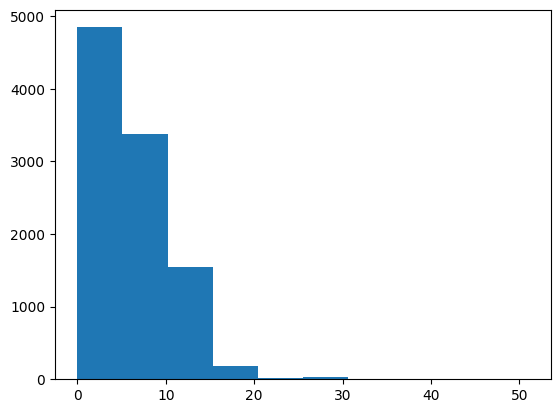
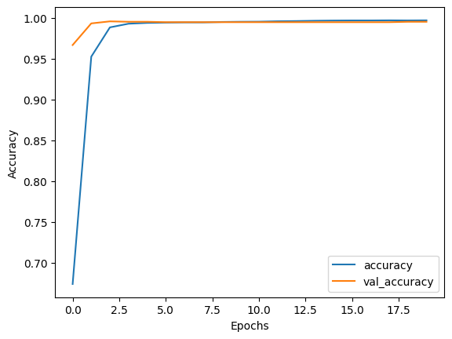
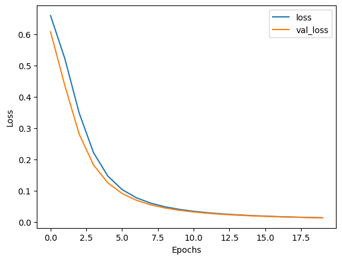
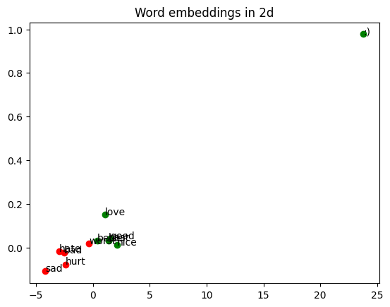

Assignment 1: Sentiment with Deep Neural Networks#
Welcome to the first assignment of course 3. This is a practice assignment, which means that the grade you receive won’t count towards your final grade of the course. However you can still submit your solutions and receive a grade along with feedback from the grader. Before getting started take some time to read the following tips:
TIPS FOR SUCCESSFUL GRADING OF YOUR ASSIGNMENT:#
All cells are frozen except for the ones where you need to submit your solutions.
You can add new cells to experiment but these will be omitted by the grader, so don’t rely on newly created cells to host your solution code, use the provided places for this.
You can add the comment # grade-up-to-here in any graded cell to signal the grader that it must only evaluate up to that point. This is helpful if you want to check if you are on the right track even if you are not done with the whole assignment. Be sure to remember to delete the comment afterwards!
To submit your notebook, save it and then click on the blue submit button at the beginning of the page.
In this assignment, you will explore sentiment analysis using deep neural networks.
In course 1, you implemented Logistic regression and Naive Bayes for sentiment analysis. Even though the two models performed very well on the dataset of tweets, they fail to catch any meaning beyond the meaning of words. For this you can use neural networks. In this assignment, you will write a program that uses a simple deep neural network to identify sentiment in text. By completing this assignment, you will:
Understand how you can design a neural network using tensorflow
Build and train a model
Use a binary cross-entropy loss function
Compute the accuracy of your model
Predict using your own input
As you can tell, this model follows a similar structure to the one you previously implemented in the second course of this specialization.
Indeed most of the deep nets you will be implementing will have a similar structure. The only thing that changes is the model architecture, the inputs, and the outputs. In this assignment, you will first create the neural network layers from scratch using
numpyto better understand what is going on. After this you will use the librarytensorflowfor building and training the model.
1 - Import the Libraries#
Run the next cell to import the Python packages you’ll need for this assignment.
Note the from utils import ... line. This line imports the functions that were specifically written for this assignment. If you want to look at what these functions are, go to File -> Open... and open the utils.py file to have a look.
import os
os.environ['TF_CPP_MIN_LOG_LEVEL'] = '3'
import numpy as np
import tensorflow as tf
import matplotlib.pyplot as plt
from sklearn.decomposition import PCA
from utils import load_tweets, process_tweet
%matplotlib inline
import w1_unittest
2 - Import the Data#
2.1 - Load and split the Data#
Import the positive and negative tweets
Have a look at some examples of the tweets
Split the data into the training and validation sets
Create labels for the data
# Load positive and negative tweets
all_positive_tweets, all_negative_tweets = load_tweets()
# View the total number of positive and negative tweets.
print(f"The number of positive tweets: {len(all_positive_tweets)}")
print(f"The number of negative tweets: {len(all_negative_tweets)}")
The number of positive tweets: 5000
The number of negative tweets: 5000
Now you can have a look at some examples of tweets.
# Change the tweet number to any number between 0 and 4999 to see a different pair of tweets.
tweet_number = 4
print('Positive tweet example:')
print(all_positive_tweets[tweet_number])
print('\nNegative tweet example:')
print(all_negative_tweets[tweet_number])
Positive tweet example:
yeaaaah yippppy!!! my accnt verified rqst has succeed got a blue tick mark on my fb profile :) in 15 days
Negative tweet example:
Dang starting next week I have "work" :(
Here you will process the tweets. This part of the code has been implemented for you. The processing includes:
tokenizing the sentence (splitting to words)
removing stock market tickers like $GE
removing old style retweet text “RT”
removing hyperlinks
removing hashtags
lowercasing
removing stopwords and punctuation
stemming
Some of these things are general steps you would do when processing any text, some others are very “tweet-specific”. The details of the process_tweet function are available in utils.py file
# Process all the tweets: tokenize the string, remove tickers, handles, punctuation and stopwords, stem the words
all_positive_tweets_processed = [process_tweet(tweet) for tweet in all_positive_tweets]
all_negative_tweets_processed = [process_tweet(tweet) for tweet in all_negative_tweets]
Now you can have a look at some examples of how the tweets look like after being processed.
# Change the tweet number to any number between 0 and 4999 to see a different pair of tweets.
tweet_number = 4
print('Positive processed tweet example:')
print(all_positive_tweets_processed[tweet_number])
print('\nNegative processed tweet example:')
print(all_negative_tweets_processed[tweet_number])
Positive processed tweet example:
['yeaaah', 'yipppy', 'accnt', 'verify', 'rqst', 'succeed', 'get', 'blue', 'tick', 'mark', 'fb', 'profile', ':)', '15', 'day']
Negative processed tweet example:
['dang', 'start', 'next', 'week', 'work', ':(']
Next, you split the tweets into the training and validation datasets. For this example you can use 80 % of the data for training and 20 % of the data for validation.
# Split positive set into validation and training
val_pos = all_positive_tweets_processed[4000:]
train_pos = all_positive_tweets_processed[:4000]
# Split negative set into validation and training
val_neg = all_negative_tweets_processed[4000:]
train_neg = all_negative_tweets_processed[:4000]
train_x = train_pos + train_neg
val_x = val_pos + val_neg
# Set the labels for the training and validation set (1 for positive, 0 for negative)
train_y = [[1] for _ in train_pos] + [[0] for _ in train_neg]
val_y = [[1] for _ in val_pos] + [[0] for _ in val_neg]
print(f"There are {len(train_x)} sentences for training.")
print(f"There are {len(train_y)} labels for training.\n")
print(f"There are {len(val_x)} sentences for validation.")
print(f"There are {len(val_y)} labels for validation.")
There are 8000 sentences for training.
There are 8000 labels for training.
There are 2000 sentences for validation.
There are 2000 labels for validation.
2.2 - Build the Vocabulary#
Now build the vocabulary.
Map each word in each tweet to an integer (an “index”).
Note that you will build the vocabulary based on the training data.
To do so, you will assign an index to every word by iterating over your training set.
The vocabulary will also include some special tokens
'': padding'[UNK]': a token representing any word that is not in the vocabulary.
Exercise 1 - build_vocabulary#
Build the vocabulary from all of the tweets in the training set.
# GRADED FUNCTION: build_vocabulary
def build_vocabulary(corpus):
'''Function that builds a vocabulary from the given corpus
Input:
- corpus (list): the corpus
Output:
- vocab (dict): Dictionary of all the words in the corpus.
The keys are the words and the values are integers.
'''
# The vocabulary includes special tokens like padding token and token for unknown words
# Keys are words and values are distinct integers (increasing by one from 0)
vocab = {'': 0, '[UNK]': 1}
### START CODE HERE ###
# For each tweet in the training set
for tweet in corpus:
# For each word in the tweet
for word in tweet:
# If the word is not in vocabulary yet, add it to vocabulary
if word not in vocab:
vocab[word] = len(vocab)
### END CODE HERE ###
return vocab
vocab = build_vocabulary(train_x)
num_words = len(vocab)
print(f"Vocabulary contains {num_words} words\n")
print(vocab)
Vocabulary contains 9526 words
{'': 0, '[UNK]': 1, 'followfriday': 2, 'top': 3, 'engage': 4, 'member': 5, 'community': 6, 'week': 7, ':)': 8, 'hey': 9, 'james': 10, 'odd': 11, ':/': 12, 'please': 13, 'call': 14, 'contact': 15, 'centre': 16, '02392441234': 17, 'able': 18, 'assist': 19, 'many': 20, 'thanks': 21, 'listen': 22, 'last': 23, 'night': 24, 'bleed': 25, 'amazing': 26, 'track': 27, 'scotland': 28, 'congrats': 29, 'yeaaah': 30, 'yipppy': 31, 'accnt': 32, 'verify': 33, 'rqst': 34, 'succeed': 35, 'get': 36, 'blue': 37, 'tick': 38, 'mark': 39, 'fb': 40, 'profile': 41, '15': 42, 'day': 43, 'one': 44, 'irresistible': 45, 'flipkartfashionfriday': 46, 'like': 47, 'keep': 48, 'lovely': 49, 'customer': 50, 'wait': 51, 'long': 52, 'hope': 53, 'enjoy': 54, 'happy': 55, 'friday': 56, 'lwwf': 57, 'second': 58, 'thought': 59, '’': 60, 'enough': 61, 'time': 62, 'dd': 63, 'new': 64, 'short': 65, 'enter': 66, 'system': 67, 'sheep': 68, 'must': 69, 'buy': 70, 'jgh': 71, 'go': 72, 'bayan': 73, ':D': 74, 'bye': 75, 'act': 76, 'mischievousness': 77, 'etl': 78, 'layer': 79, 'in-house': 80, 'warehouse': 81, 'app': 82, 'katamari': 83, 'well': 84, '…': 85, 'name': 86, 'imply': 87, ':p': 88, 'influencers': 89, 'love': 90, 'big': 91, '...': 92, 'juicy': 93, 'selfies': 94, 'follow': 95, 'perfect': 96, 'already': 97, 'know': 98, "what's": 99, 'great': 100, 'opportunity': 101, 'junior': 102, 'triathletes': 103, 'age': 104, '12': 105, '13': 106, 'gatorade': 107, 'series': 108, 'entry': 109, 'lay': 110, 'greeting': 111, 'card': 112, 'range': 113, 'print': 114, 'today': 115, 'job': 116, ':-)': 117, "friend's": 118, 'lunch': 119, 'yummm': 120, 'nostalgia': 121, 'tb': 122, 'ku': 123, 'id': 124, 'conflict': 125, 'help': 126, "here's": 127, 'screenshot': 128, 'work': 129, 'hi': 130, 'liv': 131, 'hello': 132, 'need': 133, 'something': 134, 'u': 135, 'fm': 136, 'twitter': 137, '—': 138, 'sure': 139, 'thing': 140, 'dm': 141, 'x': 142, 'follower': 143, 'hear': 144, 'four': 145, 'season': 146, 'pretty': 147, 'dope': 148, 'penthouse': 149, 'obvs': 150, 'gobigorgohome': 151, 'fun': 152, "y'all": 153, 'yeah': 154, 'suppose': 155, 'lol': 156, 'chat': 157, 'bit': 158, 'youth': 159, '💅🏽': 160, '💋': 161, 'see': 162, 'year': 163, 'thank': 164, 'rest': 165, 'quickly': 166, 'bed': 167, 'music': 168, 'fix': 169, 'dream': 170, 'spiritual': 171, 'ritual': 172, 'festival': 173, 'népal': 174, 'beginning': 175, 'line-up': 176, 'leave': 177, 'sarah': 178, 'send': 179, 'email': 180, 'bitsy@bitdefender.com': 181, 'asap': 182, 'lols': 183, 'kik': 184, 'hatessuce': 185, '32429': 186, 'kikme': 187, 'lgbt': 188, 'tinder': 189, 'nsfw': 190, 'akua': 191, 'cumshot': 192, 'come': 193, 'house': 194, 'nsn_supplements': 195, 'effective': 196, 'press': 197, 'release': 198, 'distribution': 199, 'result': 200, 'link': 201, 'remove': 202, 'pressrelease': 203, 'newsdistribution': 204, 'bam': 205, 'bestfriend': 206, 'lot': 207, 'warsaw': 208, '<3': 209, 'x46': 210, 'everyone': 211, 'watch': 212, 'documentary': 213, 'earthling': 214, 'youtube': 215, 'support': 216, 'buuut': 217, 'oh': 218, 'look': 219, 'forward': 220, 'visit': 221, 'next': 222, 'letsgetmessy': 223, 'jo': 224, 'make': 225, 'feel': 226, 'never': 227, 'anyone': 228, 'kpop': 229, 'flesh': 230, 'good': 231, 'girl': 232, 'best': 233, 'wish': 234, 'reason': 235, 'epic': 236, 'soundtrack': 237, 'shout': 238, 'add': 239, 'video': 240, 'playlist': 241, 'would': 242, 'dear': 243, 'jordan': 244, 'okay': 245, 'fake': 246, 'gameplays': 247, ';)': 248, 'haha': 249, 'im': 250, 'kidding': 251, 'stuff': 252, 'exactly': 253, 'product': 254, 'line': 255, 'etsy': 256, 'shop': 257, 'check': 258, 'vacation': 259, 'rechargeable': 260, 'normally': 261, 'charger': 262, 'asleep': 263, 'talk': 264, 'sooo': 265, 'someone': 266, 'text': 267, 'yes': 268, 'bet': 269, 'fit': 270, 'speech': 271, 'pity': 272, 'green': 273, 'garden': 274, 'midnight': 275, 'sun': 276, 'beautiful': 277, 'canal': 278, 'dasvidaniya': 279, 'till': 280, 'scout': 281, 'sg': 282, 'future': 283, 'wlan': 284, 'pro': 285, 'conference': 286, 'asia': 287, 'change': 288, 'lollipop': 289, '🍭': 290, 'nez': 291, 'agnezmo': 292, 'oley': 293, 'mama': 294, 'stand': 295, 'strong': 296, 'god': 297, 'misty': 298, 'baby': 299, 'cute': 300, 'woohoo': 301, "can't": 302, 'sign': 303, 'yet': 304, 'still': 305, 'think': 306, 'mka': 307, 'liam': 308, 'access': 309, 'welcome': 310, 'stats': 311, 'arrive': 312, '1': 313, 'unfollowers': 314, 'via': 315, 'surprise': 316, 'figure': 317, 'happybirthdayemilybett': 318, 'sweet': 319, 'talented': 320, 'amaze': 321, '2': 322, 'plan': 323, 'drain': 324, 'gotta': 325, 'timezones': 326, 'parent': 327, 'proud': 328, 'least': 329, 'maybe': 330, 'sometimes': 331, 'grade': 332, 'al': 333, 'grande': 334, 'manila_bro': 335, 'choose': 336, 'let': 337, 'around': 338, '..': 339, 'side': 340, 'world': 341, 'eh': 342, 'take': 343, 'care': 344, 'finally': 345, 'fuck': 346, 'weekend': 347, 'real': 348, 'x45': 349, 'join': 350, 'hushedcallwithfraydoe': 351, 'gift': 352, 'yeahhh': 353, 'hushedpinwithsammy': 354, 'event': 355, 'might': 356, 'luv': 357, 'really': 358, 'appreciate': 359, 'share': 360, 'wow': 361, 'tom': 362, 'gym': 363, 'monday': 364, 'invite': 365, 'scope': 366, 'influencer': 367, 'friend': 368, 'nude': 369, 'sleep': 370, 'birthday': 371, 'want': 372, 't-shirt': 373, 'cool': 374, 'haw': 375, 'phela': 376, 'mom': 377, 'obviously': 378, 'prince': 379, 'charm': 380, 'stage': 381, 'luck': 382, 'tyler': 383, 'hipster': 384, 'glass': 385, 'marty': 386, 'glad': 387, 'do': 388, 'afternoon': 389, 'read': 390, 'kahfi': 391, 'finish': 392, 'ohmyg': 393, 'yaya': 394, 'dub': 395, 'stalk': 396, 'ig': 397, 'gondooo': 398, 'moo': 399, 'tologooo': 400, 'become': 401, 'detail': 402, 'zzz': 403, 'xx': 404, 'physiotherapy': 405, 'hashtag': 406, 'custom': 407, '💪': 408, 'monica': 409, 'miss': 410, 'sound': 411, 'morning': 412, "that's": 413, 'x43': 414, 'definitely': 415, 'try': 416, 'tonight': 417, 'advice': 418, 'treviso': 419, 'concert': 420, 'city': 421, 'country': 422, 'start': 423, 'fine': 424, 'gorgeous': 425, 'xo': 426, 'oven': 427, 'roast': 428, 'garlic': 429, 'olive': 430, 'oil': 431, 'dry': 432, 'tomato': 433, 'dried': 434, 'basil': 435, 'century': 436, 'tuna': 437, 'right': 438, 'back': 439, 'atchya': 440, 'even': 441, 'almost': 442, 'chance': 443, 'cheer': 444, 'po': 445, 'ice': 446, 'cream': 447, 'agree': 448, '100': 449, 'hehehehe': 450, 'thats': 451, 'point': 452, 'stay': 453, 'home': 454, 'soon': 455, 'promise': 456, 'web': 457, 'whatsapp': 458, 'volta': 459, 'funcionar': 460, 'com': 461, 'iphone': 462, 'jailbroken': 463, 'later': 464, '34': 465, 'min': 466, 'leia': 467, 'appear': 468, 'hologram': 469, 'r2d2': 470, 'w': 471, 'message': 472, 'obi': 473, 'wan': 474, 'sit': 475, 'luke': 476, 'inter': 477, '3': 478, 'ucl': 479, 'arsenal': 480, 'small': 481, 'team': 482, 'passing': 483, '🚂': 484, 'dewsbury': 485, 'railway': 486, 'station': 487, 'dew': 488, 'west': 489, 'yorkshire': 490, '430': 491, 'smh': 492, '9:25': 493, 'live': 494, 'strange': 495, 'imagine': 496, 'megan': 497, 'masaantoday': 498, 'a4': 499, 'shweta': 500, 'tripathi': 501, '5': 502, '20': 503, 'kurta': 504, 'half': 505, 'number': 506, 'wsalelove': 507, 'ah': 508, 'larry': 509, 'anyway': 510, 'kinda': 511, 'goood': 512, 'life': 513, 'enn': 514, 'surely': 515, 'could': 516, 'warmup': 517, '15th': 518, 'bath': 519, 'dum': 520, 'andar': 521, 'ram': 522, 'sampath': 523, 'sona': 524, 'mohapatra': 525, 'samantha': 526, 'edward': 527, 'mein': 528, 'tulane': 529, 'razi': 530, 'wah': 531, 'josh': 532, 'always': 533, 'smile': 534, 'picture': 535, '16.20': 536, 'timing': 537, 'giveitup': 538, 'give': 539, 'gas': 540, 'subsidy': 541, 'initiative': 542, 'propose': 543, 'feeling': 544, 'delighted': 545, 'yesterday': 546, 'x42': 547, 'lmaoo': 548, 'song': 549, 'ever': 550, 'shall': 551, 'little': 552, 'throwback': 553, 'outlying': 554, 'island': 555, 'cheung': 556, 'chau': 557, 'mui': 558, 'wo': 559, 'totally': 560, 'different': 561, 'kfckitchentours': 562, 'kitchen': 563, 'clean': 564, 'amazed': 565, 'cusp': 566, 'test': 567, 'water': 568, 'reward': 569, 'arummzz': 570, "let's": 571, 'drive': 572, 'travel': 573, 'traveler': 574, 'yogyakarta': 575, 'jeep': 576, 'indonesia': 577, 'instamood': 578, 'wanna': 579, 'skype': 580, 'may': 581, 'nice': 582, 'friendly': 583, 'pretend': 584, 'film': 585, 'congratulation': 586, 'winner': 587, 'cheesydelights': 588, 'contest': 589, 'address': 590, 'guy': 591, 'marketing': 592, '24/7': 593, '14': 594, 'hour': 595, 'without': 596, 'delay': 597, 'actually': 598, 'easy': 599, 'guess': 600, 'train': 601, 'wd': 602, 'shift': 603, 'engine': 604, 'etc': 605, 'sunburn': 606, 'peel': 607, 'blog': 608, 'huge': 609, 'warm': 610, '☆': 611, 'complete': 612, 'triangle': 613, 'northern': 614, 'ireland': 615, 'sight': 616, 'smthng': 617, 'fr': 618, 'hug': 619, 'xoxo': 620, 'uu': 621, 'jaann': 622, 'topnewfollowers': 623, 'connect': 624, 'wonderful': 625, 'fluffy': 626, 'inside': 627, 'pirouette': 628, 'moose': 629, 'trip': 630, 'philly': 631, 'december': 632, 'dude': 633, 'x41': 634, 'question': 635, 'flaw': 636, 'pain': 637, 'negate': 638, 'strength': 639, 'solo': 640, 'move': 641, 'fav': 642, 'nirvana': 643, 'smell': 644, 'teen': 645, 'spirit': 646, 'rip': 647, 'amy': 648, 'winehouse': 649, 'couple': 650, 'tomhiddleston': 651, 'elizabetholsen': 652, 'yaytheylookgreat': 653, 'goodnight': 654, 'vid': 655, 'wake': 656, 'gonna': 657, 'shoot': 658, 'itty': 659, 'bitty': 660, 'teenie': 661, 'bikini': 662, 'much': 663, '4th': 664, 'together': 665, 'end': 666, 'xfiles': 667, 'content': 668, 'rain': 669, 'fabulous': 670, 'fantastic': 671, '♡': 672, 'jb': 673, 'forever': 674, 'belieber': 675, 'nighty': 676, 'bug': 677, 'bite': 678, 'bracelet': 679, 'idea': 680, 'foundry': 681, 'game': 682, 'sense': 683, 'pic': 684, 'eff': 685, 'phone': 686, 'woot': 687, 'derek': 688, 'use': 689, 'parkshare': 690, 'gloucestershire': 691, 'aaaahhh': 692, 'man': 693, 'traffic': 694, 'stress': 695, 'reliever': 696, "how're": 697, 'arbeloa': 698, 'turn': 699, '17': 700, 'omg': 701, 'difference': 702, 'say': 703, 'europe': 704, 'rise': 705, 'find': 706, 'hard': 707, 'believe': 708, 'uncountable': 709, 'coz': 710, 'unlimited': 711, 'course': 712, 'teampositive': 713, 'aldub': 714, '☕': 715, 'rita': 716, 'info': 717, 'way': 718, 'boy': 719, 'x40': 720, 'true': 721, 'sethi': 722, 'high': 723, 'exe': 724, 'skeem': 725, 'saam': 726, 'people': 727, 'polite': 728, 'izzat': 729, 'wese': 730, 'trust': 731, 'khawateen': 732, 'k': 733, 'sath': 734, 'mana': 735, 'kar': 736, 'deya': 737, 'evening': 738, 'sort': 739, 'smart': 740, 'hair': 741, 'tbh': 742, 'jacob': 743, 'g': 744, 'upgrade': 745, 'tee': 746, 'family': 747, 'reading': 748, 'person': 749, 'two': 750, 'conversation': 751, 'online': 752, 'mclaren': 753, 'fridayfeeling': 754, 'tgif': 755, 'square': 756, 'enix': 757, 'bissmillah': 758, 'ya': 759, 'allah': 760, 'training': 761, 'socent': 762, 'startup': 763, 'drop': 764, 'youre': 765, 'arnd': 766, 'town': 767, 'basically': 768, 'piss': 769, 'cup': 770, 'also': 771, 'terrible': 772, 'complicated': 773, 'discussion': 774, 'snapchat': 775, 'lynettelowe': 776, 'kikmenow': 777, 'snapme': 778, 'hot': 779, 'amazon': 780, 'kikmeguys': 781, 'definately': 782, 'grow': 783, 'sport': 784, 'rt': 785, 'rakyat': 786, 'writing': 787, 'since': 788, 'mention': 789, 'fly': 790, 'fish': 791, 'promoted': 792, 'post': 793, 'cyber': 794, 'ourdaughtersourpride': 795, 'mypapamypride': 796, 'papa': 797, 'coach': 798, 'positive': 799, 'kha': 800, 'atleast': 801, 'x39': 802, 'mango': 803, "lassi's": 804, "monty's": 805, 'marvellous': 806, 'though': 807, 'suspect': 808, 'mean': 809, '24': 810, 'hr': 811, 'touch': 812, 'kepler': 813, '452b': 814, 'chalna': 815, 'hai': 816, 'thankyou': 817, 'hazel': 818, 'food': 819, 'market': 820, 'brooklyn': 821, 'pta': 822, 'awake': 823, 'okayy': 824, 'awww': 825, 'ha': 826, 'doc': 827, 'splendid': 828, 'spam': 829, 'folder': 830, 'amount': 831, 'nigeria': 832, 'claim': 833, 'rted': 834, 'legs': 835, 'hurt': 836, 'bad': 837, 'mine': 838, 'saturday': 839, 'thaaanks': 840, 'puhon': 841, 'happiness': 842, 'tnc': 843, 'prior': 844, 'notification': 845, 'fat': 846, 'co': 847, 'probably': 848, 'eat': 849, 'yuna': 850, 'tameside': 851, '´': 852, 'google': 853, 'account': 854, 'scouser': 855, 'everything': 856, 'zoe': 857, 'mate': 858, 'literally': 859, 'sameee': 860, 'edgar': 861, 'update': 862, 'log': 863, 'bring': 864, 'abes': 865, 'meet': 866, 'x38': 867, 'sigh': 868, 'dreamily': 869, 'pout': 870, 'eye': 871, 'quacketyquack': 872, 'funny': 873, 'happen': 874, 'phil': 875, 'em': 876, 'del': 877, 'rodders': 878, 'else': 879, 'play': 880, 'gamejam': 881, 'irish': 882, 'literature': 883, 'inaccessible': 884, "kareena's": 885, 'fan': 886, 'brain': 887, 'dot': 888, 'braindots': 889, 'fair': 890, 'rush': 891, 'either': 892, 'brandi': 893, '18': 894, 'selfie': 895, 'carnival': 896, 'men': 897, 'put': 898, 'mask': 899, 'xavier': 900, 'forneret': 901, 'jennifer': 902, 'site': 903, 'free': 904, '50.000': 905, '8': 906, 'ball': 907, 'pool': 908, 'coin': 909, 'edit': 910, 'trish': 911, '♥': 912, 'gratefulness': 913, 'three': 914, 'grateful': 915, 'comment': 916, 'wakeup': 917, 'beside': 918, 'dirty': 919, 'sex': 920, 'lmaooo': 921, '😤': 922, 'louis': 923, 'throw': 924, 'cause': 925, 'inspire': 926, 'ff': 927, 'twoofs': 928, 'gr8': 929, 'wkend': 930, 'kind': 931, 'exhausted': 932, 'word': 933, 'cheltenham': 934, 'area': 935, 'kale': 936, 'crisp': 937, 'ruin': 938, 'x37': 939, 'open': 940, 'worldwide': 941, 'outta': 942, 'sfvbeta': 943, 'vantastic': 944, 'xcylin': 945, 'bundle': 946, 'show': 947, 'internet': 948, 'price': 949, 'realisticly': 950, 'pay': 951, 'net': 952, 'education': 953, 'powerful': 954, 'weapon': 955, 'nelson': 956, 'mandela': 957, 'recent': 958, 'j': 959, 'chenab': 960, 'flow': 961, 'pakistan': 962, 'incredibleindia': 963, 'teenchoice': 964, 'choiceinternationalartist': 965, 'superjunior': 966, 'caught': 967, 'first': 968, 'salmon': 969, 'super-blend': 970, 'project': 971, 'youth@bipolaruk.org.uk': 972, 'awesome': 973, 'stream': 974, 'alma': 975, 'mater': 976, 'highschooldays': 977, 'clientvisit': 978, 'faith': 979, 'christian': 980, 'school': 981, 'lizaminnelli': 982, 'upcoming': 983, 'uk': 984, 'appearance': 985, '😄': 986, 'single': 987, 'hill': 988, 'every': 989, 'beat': 990, 'wrong': 991, 'ready': 992, 'natural': 993, 'pefumery': 994, 'workshop': 995, 'neals': 996, 'yard': 997, 'covent': 998, 'tomorrow': 999, 'fback': 1000, 'indo': 1001, 'harmos': 1002, 'americano': 1003, 'remember': 1004, 'aww': 1005, 'head': 1006, 'saw': 1007, 'dark': 1008, 'handshome': 1009, 'juga': 1010, 'hurray': 1011, 'meeting': 1012, 'hate': 1013, 'cant': 1014, 'decide': 1015, 'save': 1016, 'list': 1017, 'hiya': 1018, 'exec': 1019, 'loryn.good@lincs-chamber.co.uk': 1020, 'photo': 1021, 'thx': 1022, '4': 1023, 'china': 1024, 'homosexual': 1025, 'hyungbot': 1026, 'fam': 1027, 'mind': 1028, 'timetunnel': 1029, '1982': 1030, 'quite': 1031, 'radio': 1032, 'set': 1033, 'heart': 1034, 'hiii': 1035, 'jack': 1036, 'ily': 1037, '✨': 1038, 'domino': 1039, 'pub': 1040, 'heat': 1041, 'prob': 1042, 'sorry': 1043, 'hastily': 1044, 'type': 1045, 'screenshotting': 1046, 'pakistani': 1047, 'x36': 1048, '3points': 1049, 'dreamteam': 1050, 'gooo': 1051, 'bailey': 1052, 'pbb': 1053, '737gold': 1054, 'drink': 1055, 'old': 1056, '1/2': 1057, 'welsh': 1058, 'wale': 1059, 'yippee': 1060, '💟': 1061, 'bro': 1062, 'lord': 1063, 'michael': 1064, "u're": 1065, 'ure': 1066, 'bigot': 1067, 'usually': 1068, 'front': 1069, 'squat': 1070, 'dobar': 1071, 'dan': 1072, 'brand': 1073, 'heavy': 1074, 'musicology': 1075, '2015': 1076, 'spend': 1077, 'marathon': 1078, 'iflix': 1079, 'officially': 1080, 'graduate': 1081, 'cry': 1082, '__': 1083, 'yep': 1084, 'expert': 1085, 'bisexuality': 1086, 'minal': 1087, 'aidzin': 1088, 'yo': 1089, 'pi': 1090, 'cook': 1091, 'book': 1092, 'dinner': 1093, 'tough': 1094, 'choice': 1095, 'others': 1096, 'chill': 1097, 'smu': 1098, 'oval': 1099, 'basketball': 1100, 'player': 1101, 'whahahaha': 1102, 'soamazing': 1103, 'moment': 1104, 'onto': 1105, 'a5': 1106, 'wardrobe': 1107, 'user': 1108, 'teamred': 1109, 'apparently': 1110, 'hopefully': 1111, 'depends': 1112, 'greatly': 1113, 'design': 1114, 'ahhh': 1115, '7th': 1116, 'cinepambata': 1117, 'mechanic': 1118, 'official': 1119, 'form': 1120, 'download': 1121, 'ur': 1122, 'swishers': 1123, 'cop': 1124, 'ducktails': 1125, 'surreal': 1126, 'exposure': 1127, 'sotw': 1128, 'halesowen': 1129, 'blackcountryfair': 1130, 'street': 1131, 'assessment': 1132, 'mental': 1133, 'body': 1134, 'ooze': 1135, 'appeal': 1136, 'amassiveoverdoseofships': 1137, 'late': 1138, 'isi': 1139, 'chan': 1140, 'c': 1141, 'note': 1142, 'pkwalasawaal': 1143, 'gemma': 1144, 'orleans': 1145, 'fever': 1146, 'catch': 1147, 'geskenya': 1148, 'obamainkenya': 1149, 'magicalkenya': 1150, 'greatkenya': 1151, 'allgoodthingske': 1152, 'anime': 1153, 'umaru': 1154, 'singer': 1155, 'ship': 1156, 'order': 1157, 'room': 1158, 'car': 1159, 'hahaha': 1160, 'story': 1161, 'relate': 1162, 'label': 1163, 'batch': 1164, 'principal': 1165, 'due': 1166, 'march': 1167, 'wooftastic': 1168, 'receive': 1169, 'necessary': 1170, 'regret': 1171, 'rn': 1172, 'whatever': 1173, 'hat': 1174, 'success': 1175, 'abstinence': 1176, 'wtf': 1177, "there's": 1178, 'thrown': 1179, 'middle': 1180, 'repeat': 1181, 'relentlessly': 1182, 'approximately': 1183, 'oldschool': 1184, 'runescape': 1185, 'daaay': 1186, 'jumma_mubarik': 1187, 'frnds': 1188, 'stay_blessed': 1189, 'bless': 1190, 'pussycats': 1191, 'main': 1192, 'launch': 1193, 'pretoria': 1194, 'fahrinahmad': 1195, 'tengkuaaronshah': 1196, 'eksperimencinta': 1197, 'tykkäsin': 1198, 'videosta': 1199, 'month': 1200, 'hoodie': 1201, 'eeep': 1202, 'yay': 1203, 'sohappyrightnow': 1204, 'mmm': 1205, 'azz-sets': 1206, 'babe': 1207, 'feedback': 1208, 'gain': 1209, 'value': 1210, 'peaceful': 1211, 'refresh': 1212, 'manthan': 1213, 'tune': 1214, 'freshness': 1215, 'mother': 1216, 'determination': 1217, 'maxfreshmove': 1218, 'lonely': 1219, 'tattoo': 1220, 'friday.and': 1221, 'magnificent': 1222, 'e': 1223, 'achieve': 1224, 'rashmi': 1225, 'dedication': 1226, 'inspiration': 1227, 'happyfriday': 1228, 'nearly': 1229, 'retweeted': 1230, 'alert': 1231, 'da': 1232, 'dang': 1233, 'rad': 1234, 'fanart': 1235, 'massive': 1236, 'niamh': 1237, 'fennell': 1238, 'journalism': 1239, 'land': 1240, 'copying': 1241, 'paste': 1242, 'tweet': 1243, 'yesss': 1244, 'ariana': 1245, 'selena': 1246, 'gomez': 1247, 'tomlinson': 1248, 'payne': 1249, 'caradelevingne': 1250, '🌷': 1251, 'trade': 1252, 'tire': 1253, 'nope': 1254, 'apply': 1255, 'iamca': 1256, 'aftie': 1257, 'goodmorning': 1258, 'prokabaddi': 1259, 'koel': 1260, 'mallick': 1261, 'recite': 1262, 'national': 1263, 'anthem': 1264, '6': 1265, 'yournaturalleaders': 1266, 'youngnaturalleaders': 1267, 'mon': 1268, '27july': 1269, 'cumbria': 1270, 'flockstars': 1271, 'thur': 1272, '30july': 1273, 'itv': 1274, 'sleeptight': 1275, 'haveagoodday': 1276, 'leg': 1277, 'september': 1278, 'perhaps': 1279, 'bb': 1280, 'promote': 1281, 'full': 1282, 'album': 1283, 'fully': 1284, 'intend': 1285, 'write': 1286, 'possible': 1287, 'attack': 1288, '>:D': 1289, 'bird': 1290, 'teamadmicro': 1291, 'fridaydownpour': 1292, 'clear': 1293, 'rohit': 1294, 'queen': 1295, 'otwolgrandtrailer': 1296, 'sheer': 1297, 'fact': 1298, 'obama': 1299, 'innumerable': 1300, 'odds': 1301, 'president': 1302, 'ni': 1303, 'shauri': 1304, 'yako': 1305, 'memotohaters': 1306, 'sunday': 1307, 'pamper': 1308, "t'was": 1309, 'cabincrew': 1310, 'interview': 1311, 'langkawi': 1312, '1st': 1313, 'august': 1314, 'fulfil': 1315, 'fantasy': 1316, '👉': 1317, 'thinking': 1318, 'ex-twelebs': 1319, 'friends': 1320, 'apartment': 1321, 'makeover': 1322, 'brilliantly': 1323, 'happyyy': 1324, 'birthdaaayyy': 1325, 'kill': 1326, 'interested': 1327, 'internship': 1328, 'program': 1329, 'sadly': 1330, 'career': 1331, 'page': 1332, 'issue': 1333, 'sad': 1334, 'overwhelmingly': 1335, 'aha': 1336, 'beauts': 1337, '♬': 1338, 'win': 1339, 'deo': 1340, 'faaabulous': 1341, 'freebiefriday': 1342, 'aluminiumfree': 1343, 'stayfresh': 1344, 'john': 1345, 'worry': 1346, 'navigate': 1347, 'thnks': 1348, 'progrmr': 1349, '9pm': 1350, '9am': 1351, 'quit': 1352, 'hardly': 1353, 'surprising': 1354, 'roses': 1355, 'emotive': 1356, 'poetry': 1357, 'frequentflyer': 1358, 'break': 1359, 'apologize': 1360, 'kb': 1361, 'londondairy': 1362, 'icecream': 1363, 'experience': 1364, 'past': 1365, 'cover': 1366, 'sin': 1367, 'excited': 1368, ":')": 1369, 'xxx': 1370, 'jim': 1371, 'chuckle': 1372, 'shopping': 1373, 'cake': 1374, 'doh': 1375, '500': 1376, 'subscriber': 1377, 'reach': 1378, 'scorch': 1379, 'summer': 1380, 'young': 1381, 'woman': 1382, 'stamen': 1383, 'expect': 1384, 'anything': 1385, 'less': 1386, 'tweeties': 1387, 'fab': 1388, 'dont': 1389, '-->': 1390, '10': 1391, 'loner': 1392, 'introduce': 1393, 'v': 1394, 'alter': 1395, 'understanding': 1396, 'spread': 1397, 'problem': 1398, 'supa': 1399, 'dupa': 1400, 'near': 1401, 'dartmoor': 1402, 'gold': 1403, 'colour': 1404, 'ok': 1405, 'someday': 1406, 'r': 1407, 'dii': 1408, 'n': 1409, 'forget': 1410, 'si': 1411, 'smf': 1412, 'ft': 1413, 'japanese': 1414, 'import': 1415, 'kitty': 1416, 'matching': 1417, 'stationary': 1418, 'draw': 1419, 'close': 1420, 'specialise': 1421, 'thermal': 1422, 'image': 1423, 'survey': 1424, '–': 1425, 'south': 1426, 'korea': 1427, 'scamper': 1428, 'alarm': 1429, "ain't": 1430, 'mad': 1431, 'chweina': 1432, 'xd': 1433, 'jotzh': 1434, 'waste': 1435, 'place': 1436, 'completely': 1437, 'worth': 1438, 'coat': 1439, 'beforehand': 1440, 'tho': 1441, 'foh': 1442, 'outside': 1443, 'holiday': 1444, 'menace': 1445, 'jojo': 1446, 'ta': 1447, 'accepted': 1448, 'guys': 1449, 'admin': 1450, 'lukris': 1451, '😘': 1452, 'momma': 1453, 'bear': 1454, '❤': 1455, '️': 1456, 'redo': 1457, '8th': 1458, 'v.ball': 1459, 'atm': 1460, 'retweets': 1461, 'build': 1462, 'pack': 1463, 'suitcase': 1464, 'hang-copying': 1465, 'translation': 1466, "dostoevsky's": 1467, 'voucher': 1468, 'bugatti': 1469, 'bra': 1470, 'مطعم_هاشم': 1471, 'yummy': 1472, 'a7la': 1473, 'bdayt': 1474, 'mnwreeen': 1475, 'jazz': 1476, 'truck': 1477, 'x34': 1478, 'speak': 1479, 'pbevent': 1480, 'hq': 1481, 'yoona': 1482, 'hairpin': 1483, 'otp': 1484, 'collection': 1485, 'mastership': 1486, 'honey': 1487, 'paindo': 1488, 'await': 1489, 'report': 1490, 'manny': 1491, 'asshole': 1492, 'brijresidency': 1493, 'structure': 1494, '156': 1495, 'unit': 1496, 'encompass': 1497, 'bhk': 1498, 'flat': 1499, '91': 1500, '975-580-': 1501, '444': 1502, 'honor': 1503, 'curry': 1504, 'clash': 1505, 'milano': 1506, '👌': 1507, 'followback': 1508, ':-D': 1509, 'legit': 1510, 'loser': 1511, 'dead': 1512, 'starsquad': 1513, '⭐': 1514, 'news': 1515, 'utc': 1516, 'flume': 1517, 'kaytranada': 1518, 'alunageorge': 1519, 'ticket': 1520, 'kms': 1521, 'certainty': 1522, 'solve': 1523, 'faster': 1524, '👊': 1525, 'hurry': 1526, 'totem': 1527, 'somewhere': 1528, 'alice': 1529, 'dog': 1530, 'cat': 1531, 'goodwynsgoodies': 1532, 'ugh': 1533, 'fade': 1534, 'moan': 1535, 'leeds': 1536, 'jozi': 1537, 'wasnt': 1538, 'fifth': 1539, 'available': 1540, 'tix': 1541, 'pa': 1542, 'ba': 1543, 'ng': 1544, 'atl': 1545, 'coldplay': 1546, 'favorite': 1547, 'scientist': 1548, 'yellow': 1549, 'atlas': 1550, 'yein': 1551, 'selos': 1552, 'jabongatpumaurbanstampede': 1553, 'an': 1554, '7': 1555, 'timely': 1556, 'arrival': 1557, 'waiter': 1558, 'bill': 1559, 'sir': 1560, 'title': 1561, 'pocket': 1562, 'wripped': 1563, 'jean': 1564, 'connie': 1565, 'crew': 1566, 'staff': 1567, 'sweetan': 1568, 'ask': 1569, 'filming': 1570, 'mum': 1571, 'beg': 1572, 'soprano': 1573, 'ukraine': 1574, 'x33': 1575, 'olly': 1576, 'disney.arts': 1577, 'elmoprinssi': 1578, 'tired': 1579, 'salsa': 1580, 'dance': 1581, 'tell': 1582, 'truth': 1583, 'pls': 1584, '4-6': 1585, 'interest': 1586, '2nd': 1587, 'blogiversary': 1588, 'review': 1589, 'cutie': 1590, 'bohol': 1591, 'briliant': 1592, 'key': 1593, 'annual': 1594, 'productive': 1595, 'far': 1596, 'spin': 1597, 'voice': 1598, '\U000fe334': 1599, 'yeheyy': 1600, 'pinya': 1601, 'whoooah': 1602, 'trance': 1603, 'lover': 1604, 'subject': 1605, 'physic': 1606, 'stop': 1607, 'ब': 1608, 'matter': 1609, 'jungle': 1610, 'accommodate': 1611, 'secret': 1612, 'behind': 1613, 'sandroforceo': 1614, 'ceo': 1615, '1month': 1616, 'swag': 1617, 'mia': 1618, 'workinprogress': 1619, 'finnigan': 1620, 'loyal': 1621, 'royal': 1622, 'fotoset': 1623, 'reusful': 1624, 'seem': 1625, 'somebody': 1626, 'sell': 1627, 'understand': 1628, 'muntu': 1629, 'another': 1630, 'gem': 1631, 'falcos': 1632, 'supersmash': 1633, 'hotnsexy': 1634, 'friskyfriday': 1635, 'beach': 1636, 'movie': 1637, 'crop': 1638, 'nash': 1639, 'tissue': 1640, 'chocolate': 1641, 'tea': 1642, 'hannibal': 1643, 'episode': 1644, 'hotbed': 1645, 'bush': 1646, 'classicassures': 1647, 'thrill': 1648, 'international': 1649, 'assignment': 1650, 'aerial': 1651, 'camera': 1652, 'operator': 1653, 'wales': 1654, 'boom': 1655, 'hong': 1656, 'kong': 1657, 'ferry': 1658, 'central': 1659, 'girlfriend': 1660, 'after-work': 1661, 'dj': 1662, 'resto': 1663, 'drinkt': 1664, 'koffie': 1665, 'a6': 1666, 'stargate': 1667, 'atlantis': 1668, 'muaahhh': 1669, 'ohh': 1670, 'hii': 1671, '🙈': 1672, 'di': 1673, 'nagsend': 1674, 'yung': 1675, 'ko': 1676, '</3': 1677, 'ulit': 1678, '🎉': 1679, '🎈': 1680, 'ugly': 1681, 'leggete': 1682, 'qui': 1683, 'per': 1684, 'la': 1685, 'mar': 1686, 'encourage': 1687, 'employer': 1688, 'board': 1689, 'sticker': 1690, 'sponsor': 1691, 'prize': 1692, '(:': 1693, 'milo': 1694, 'aurini': 1695, 'juicebro': 1696, 'fucking': 1697, 'pillar': 1698, 'respective': 1699, 'boii': 1700, 'smashingbook': 1701, 'bible': 1702, 'ill': 1703, 'sick': 1704, 'lamo': 1705, 'fangirl': 1706, 'platonic': 1707, 'science': 1708, 'resident': 1709, 'servicewithasmile': 1710, 'fams': 1711, 'bloodline': 1712, 'husky': 1713, 'obituary': 1714, 'advert': 1715, 'goofingaround': 1716, 'madness': 1717, 'bollywood': 1718, 'giveaway': 1719, 'dah': 1720, 'nothing': 1721, 'bitterness': 1722, 'anger': 1723, 'hatred': 1724, 'towards': 1725, 'pure': 1726, 'indifference': 1727, 'suite': 1728, 'zach': 1729, 'cody': 1730, 'deliver': 1731, 'ac': 1732, 'excellence': 1733, 'producer': 1734, 'boggling': 1735, 'fatigue': 1736, 'baareeq': 1737, 'gamedev': 1738, 'hobby': 1739, 'tweenie_fox': 1740, 'click': 1741, 'accessory': 1742, 'tamang': 1743, 'hinala': 1744, 'niam': 1745, 'selfieee': 1746, 'especially': 1747, 'lass': 1748, 'aling': 1749, 'swim': 1750, 'perfection': 1751, 'bout': 1752, 'goodbye': 1753, 'feminist': 1754, 'fight': 1755, 'snobby': 1756, 'bitch': 1757, 'caroline': 1758, 'mighty': 1759, '🔥': 1760, 'hbd': 1761, 'follback': 1762, 'jog': 1763, 'remote': 1764, 'newly': 1765, 'ebay': 1766, 'store': 1767, 'disneyinfinity': 1768, 'starwars': 1769, 'character': 1770, 'preorder': 1771, 'starter': 1772, 'hit': 1773, 'snap': 1774, 'homies': 1775, 'skin': 1776, 'bday': 1777, 'chant': 1778, 'jai': 1779, 'italy': 1780, 'fast': 1781, 'heeeyyy': 1782, 'woah': 1783, '★': 1784, '😊': 1785, 'whenever': 1786, 'ang': 1787, 'kiss': 1788, 'philippine': 1789, 'package': 1790, 'bruise': 1791, 'rib': 1792, '😀': 1793, '😁': 1794, '😂': 1795, '😃': 1796, '😅': 1797, '😉': 1798, 'tombraider': 1799, 'hype': 1800, 'thejuiceinthemix': 1801, 'rela': 1802, 'building': 1803, 'low': 1804, 'priority': 1805, 'match': 1806, 'harry': 1807, 'bc': 1808, 'opportune': 1809, 'collapse': 1810, 'chaotic': 1811, 'cosas': 1812, '<---': 1813, 'alliteration': 1814, 'oppayaa': 1815, "how's": 1816, 'natgeo': 1817, 'lick': 1818, 'elbow': 1819, '. .': 1820, 'interesting': 1821, '“': 1822, 'emu': 1823, 'stoke': 1824, "people's": 1825, 'approval': 1826, "god's": 1827, 'jisung': 1828, 'kid': 1829, 'sunshine': 1830, 'mm': 1831, 'nicola': 1832, 'brighten': 1833, 'helen': 1834, 'brian': 1835, '2-3': 1836, 'australia': 1837, 'ol': 1838, 'bone': 1839, 'creaking': 1840, 'abuti': 1841, 'tweetland': 1842, 'android': 1843, 'xmas': 1844, 'skyblock': 1845, 'standing': 1846, 'bcause': 1847, '2009': 1848, 'die': 1849, 'twitch': 1850, 'sympathy': 1851, 'laugh': 1852, 'unnieee': 1853, 'nuka': 1854, 'penacova': 1855, 'djset': 1856, 'edm': 1857, 'kizomba': 1858, 'latinhouse': 1859, 'housemusic': 1860, 'portugal': 1861, 'wild': 1862, 'ride': 1863, 'anytime': 1864, 'taste': 1865, 'yer': 1866, 'mtn': 1867, 'maganda': 1868, 'mistress': 1869, 'saphire': 1870, 'busy': 1871, '4000': 1872, 'instagram': 1873, 'among': 1874, 'coconut': 1875, 'sambal': 1876, 'mussel': 1877, 'recipe': 1878, 'kalin': 1879, 'mixcloud': 1880, 'sarcasm': 1881, 'chelsea': 1882, 'he': 1883, 'useless': 1884, 'thursday': 1885, 'hang': 1886, 'hehe': 1887, 'benson': 1888, 'facebook': 1889, 'solid': 1890, '16/17': 1891, '30': 1892, '°': 1893, '😜': 1894, 'maryhicks': 1895, 'kikmeboys': 1896, 'photooftheday': 1897, 'musicbiz': 1898, 'sheskindahot': 1899, 'fleekile': 1900, 'mbalula': 1901, 'africa': 1902, 'mexican': 1903, 'scar': 1904, 'office': 1905, 'donut': 1906, 'foiegras': 1907, 'despite': 1908, 'weather': 1909, 'wedding': 1910, 'tony': 1911, 'stark': 1912, 'incredible': 1913, 'poem': 1914, 'bubble': 1915, 'dale': 1916, 'billion': 1917, 'magical': 1918, 'op': 1919, 'cast': 1920, 'vote': 1921, 'election': 1922, 'jcreport': 1923, 'piggin': 1924, 'peace': 1925, 'botanical': 1926, 'soap': 1927, 'upload': 1928, 'freshly': 1929, '3weeks': 1930, 'heal': 1931, 'exciting': 1932, 'tobi-bro': 1933, 'isp': 1934, 'steel': 1935, 'wednesday': 1936, 'swear': 1937, 'earlier': 1938, 'cam': 1939, '😭': 1940, 'except': 1941, "masha'allah": 1942, 'french': 1943, 'wwat': 1944, 'france': 1945, 'yaaay': 1946, 'beiruting': 1947, 'coffee': 1948, 'panda': 1949, 'eonnie': 1950, 'favourite': 1951, 'soda': 1952, 'fuller': 1953, 'shit': 1954, 'healthy': 1955, '💓': 1956, 'rettweet': 1957, 'mvg': 1958, 'valuable': 1959, 'madrid': 1960, 'sore': 1961, 'bergerac': 1962, 'u21': 1963, 'individual': 1964, 'excellent': 1965, 'adam': 1966, "beach's": 1967, 'suicide': 1968, 'squad': 1969, 'fond': 1970, 'christopher': 1971, 'initially': 1972, 'cocky': 1973, 'prove': 1974, "attitude's": 1975, 'improve': 1976, 'suggest': 1977, 'date': 1978, 'indeed': 1979, 'happys': 1980, 'intelligent': 1981, 'cs': 1982, 'certain': 1983, 'exam': 1984, 'forgot': 1985, 'home-based': 1986, 'knee': 1987, 'sale': 1988, 'fleur': 1989, 'dress': 1990, 'readystock_hijabmart': 1991, 'idr': 1992, '325.000': 1993, '200.000': 1994, 'tompolo': 1995, 'aim': 1996, 'cannot': 1997, 'buyer': 1998, 'disappoint': 1999, 'paper': 2000, 'slacking': 2001, 'crack': 2002, 'particularly': 2003, 'striking': 2004, '31': 2005, 'mam': 2006, 'feytyaz': 2007, 'instant': 2008, 'stiffening': 2009, 'ricky_febs': 2010, 'grindea': 2011, 'courier': 2012, 'crypt': 2013, 'possibly': 2014, 'arma': 2015, 'record': 2016, 'gosh': 2017, 'limbo': 2018, 'retweeting': 2019, 'orchard': 2020, 'art': 2021, 'super': 2022, 'karachi': 2023, 'ka': 2024, 'venice': 2025, 'several': 2026, 'part': 2027, 'witness': 2028, 'accumulate': 2029, 'maroon': 2030, 'cocktail': 2031, '0-100': 2032, 'quick': 2033, '1100d': 2034, 'auto-focus': 2035, 'manual': 2036, 'vein': 2037, 'crackle': 2038, 'glaze': 2039, 'layout': 2040, 'bomb': 2041, 'social': 2042, 'website': 2043, 'pake': 2044, 'joim': 2045, 'fee': 2046, 'troop': 2047, 'beauty': 2048, 'mail': 2049, 'ladolcevitainluxembourg@hotmail.com': 2050, 'prrequest': 2051, 'journorequest': 2052, 'the_madstork': 2053, 'shaun': 2054, 'bot': 2055, 'chloe': 2056, 'actress': 2057, 'away': 2058, 'wicked': 2059, 'hola': 2060, 'juan': 2061, 'sending': 2062, 'houston': 2063, 'tx': 2064, 'jenni': 2065, "year's": 2066, 'stumble': 2067, 'upon': 2068, 'prob.nice': 2069, 'choker': 2070, 'btw': 2071, 'seouljins': 2072, 'photoset': 2073, 'sadomasochistsparadise': 2074, 'wynter': 2075, 'bottom': 2076, 'outtake': 2077, 'sadomasochist': 2078, 'paradise': 2079, 'cuties': 2080, 'ty': 2081, 'bby': 2082, 'clip': 2083, 'lose': 2084, 'cypher': 2085, 'amen': 2086, 'x32': 2087, 'plant': 2088, 'allow': 2089, 'corner': 2090, 'addict': 2091, 'gurl': 2092, 'suck': 2093, 'special': 2094, 'owe': 2095, 'daniel': 2096, 'ape': 2097, 'saar': 2098, 'ahead': 2099, 'verse': 2100, 'butterfly': 2101, 'bonus': 2102, 'fill': 2103, 'tear': 2104, 'laughter': 2105, '5sos': 2106, 'yummmyyy': 2107, 'dosa': 2108, 'unless': 2109, 'achi': 2110, 'youuu': 2111, 'bawi': 2112, 'ako': 2113, 'queenesther': 2114, 'sharp': 2115, 'wonder': 2116, 'poldi': 2117, 'cimbom': 2118, 'buddy': 2119, 'bruhhh': 2120, 'daddy': 2121, '”': 2122, 'communal': 2123, 'knowledge': 2124, 'attention': 2125, '1tb': 2126, 'bank': 2127, 'credit': 2128, 'department': 2129, 'anz': 2130, 'extreme': 2131, 'offshoring': 2132, 'absolutely': 2133, 'classic': 2134, 'gottolovebanks': 2135, 'yup': 2136, 'in-shaa-allah': 2137, 'dua': 2138, 'thru': 2139, 'aameen': 2140, '4/5': 2141, 'coca': 2142, 'cola': 2143, 'fanta': 2144, 'pepsi': 2145, 'sprite': 2146, 'alls': 2147, 'sweeety': 2148, ';-)': 2149, 'welcometweet': 2150, 'psygustokita': 2151, 'setup': 2152, 'wet': 2153, 'foot': 2154, 'carpet': 2155, 'judgmental': 2156, 'hypocritical': 2157, 'narcissist': 2158, 'jumpsuit': 2159, 'bt': 2160, 'denim': 2161, 'verge': 2162, 'owl': 2163, 'constant': 2164, 'run': 2165, 'sia': 2166, 'count': 2167, 'brilliant': 2168, 'teacher': 2169, 'comparative': 2170, 'religion': 2171, 'rant': 2172, 'student': 2173, 'benchers': 2174, '1/5': 2175, 'porsche': 2176, 'paddock': 2177, 'budapestgp': 2178, 'johnyherbert': 2179, 'roll': 2180, 'porschesupercup': 2181, 'koyal': 2182, 'melody': 2183, 'unexpected': 2184, 'create': 2185, 'memory': 2186, '35': 2187, 'eps': 2188, 'wirh': 2189, 'arc': 2190, 'x31': 2191, 'wolf': 2192, 'fulfill': 2193, 'desire': 2194, 'ameen': 2195, 'kca': 2196, 'votejkt': 2197, '48id': 2198, 'helpinggroupdms': 2199, 'quote': 2200, 'weird': 2201, 'dp': 2202, 'wife': 2203, 'poor': 2204, 'chick': 2205, 'guide': 2206, 'zonzofox': 2207, 'bhaiya': 2208, 'brother': 2209, 'lucky': 2210, 'patty': 2211, 'elaborate': 2212, 'kuching': 2213, 'rate': 2214, 'merdeka': 2215, 'palace': 2216, 'hotel': 2217, 'plusmiles': 2218, 'service': 2219, 'hahahaa': 2220, 'nex': 2221, 'safe': 2222, 'gwd': 2223, 'shes': 2224, 'okok': 2225, '33': 2226, 'idiot': 2227, 'chaerin': 2228, 'unnie': 2229, 'viable': 2230, 'alternative': 2231, 'nowadays': 2232, 'pass': 2233, 'ip': 2234, 'tombow': 2235, 'abt': 2236, 'friyay': 2237, 'smug': 2238, 'marrickville': 2239, 'public': 2240, 'ten': 2241, 'ago': 2242, 'eighteen': 2243, 'auvssscr': 2244, 'ncaaseason': 2245, 'slow': 2246, 'popsicle': 2247, 'soft': 2248, 'melt': 2249, 'mouth': 2250, 'thankyouuu': 2251, 'dianna': 2252, 'ngga': 2253, 'usah': 2254, 'dipikirin': 2255, 'elah': 2256, 'easily': 2257, "who's": 2258, 'entp': 2259, 'killin': 2260, 'meme': 2261, 'worthy': 2262, 'shot': 2263, 'emon': 2264, 'decent': 2265, 'outdoor': 2266, 'rave': 2267, 'dv': 2268, 'aku': 2269, 'bakal': 2270, 'liat': 2271, 'kak': 2272, 'merry': 2273, 'tv': 2274, 'outfit': 2275, '--->': 2276, 'fashionfriday': 2277, 'angle.nelson': 2278, 'cheap': 2279, 'mymonsoonstory': 2280, 'tree': 2281, 'lotion': 2282, 'moisturize': 2283, 'important': 2284, 'monsoon': 2285, 'whoop': 2286, 'romantic': 2287, 'valencia': 2288, 'daaru': 2289, 'party': 2290, 'chaddi': 2291, 'bros': 2292, 'wonderful.great': 2293, 'closely': 2294, 'trim': 2295, 'pubes': 2296, 'mi': 2297, 'tio': 2298, 'sinaloa': 2299, 'arre': 2300, 'stylish': 2301, 'trendy': 2302, 'kim': 2303, 'fabfriday': 2304, 'facetime': 2305, 'calum': 2306, 'constantly': 2307, 'announce': 2308, 'filbarbarian': 2309, 'beer': 2310, 'broken': 2311, 'arm': 2312, 'testicle': 2313, 'light': 2314, 'katerina': 2315, 'maniataki': 2316, 'ahh': 2317, 'alright': 2318, 'worthwhile': 2319, 'judging': 2320, 'tech': 2321, 'window': 2322, 'stupid': 2323, 'plugin': 2324, 'bass': 2325, 'slap': 2326, '6pm': 2327, 'door': 2328, 'vip': 2329, 'general': 2330, 'seat': 2331, 'early': 2332, 'london': 2333, 'toptravelcentar': 2334, 'ttctop': 2335, 'lux': 2336, 'luxurytravel': 2337, 'beograd': 2338, 'srbija': 2339, 'putovanja': 2340, 'wendy': 2341, 'provide': 2342, 'fresh': 2343, 'drainage': 2344, 'homebound': 2345, 'hahahays': 2346, 'yeeeah': 2347, 'moar': 2348, 'kittehs': 2349, 'incoming': 2350, 'tower': 2351, 'yippeee': 2352, 'scrummy': 2353, 'bio': 2354, 'mcpe': 2355, '->': 2356, 'vainglory': 2357, 'driver': 2358, '6:01': 2359, 'lilydale': 2360, 'fss': 2361, 'raise': 2362, 'magicalmysterytour': 2363, 'chek': 2364, 'rule': 2365, 'weebly': 2366, 'donetsk': 2367, 'earth': 2368, 'personalise': 2369, 'wrap': 2370, 'business': 2371, 'stationery': 2372, 'adrian': 2373, 'parcel': 2374, 'tuesday': 2375, 'pris': 2376, '80': 2377, 'wz': 2378, 'pattern': 2379, 'cut': 2380, 'buttonhole': 2381, 'finishing': 2382, '4my': 2383, 'designer': 2384, 'famous': 2385, 'client': 2386, 'p': 2387, 'alive': 2388, 'trial': 2389, 'spm': 2390, 'dinooo': 2391, 'cardio': 2392, 'steak': 2393, 'cue': 2394, 'laptop': 2395, 'excite': 2396, 'guinea': 2397, 'pig': 2398, 'bestfriends': 2399, 'salamat': 2400, 'sa': 2401, 'mga': 2402, 'nag.greet': 2403, 'appreciated': 2404, 'guise': 2405, 'godbless': 2406, 'crush': 2407, 'apple': 2408, 'ga': 2409, 'deserve': 2410, 'charles': 2411, 'workhard': 2412, 'model': 2413, 'forrit': 2414, 'bread': 2415, 'bacon': 2416, 'butter': 2417, 'afang': 2418, 'soup': 2419, 'semo': 2420, 'brb': 2421, 'force': 2422, 'doesnt': 2423, 'tato': 2424, 'bulat': 2425, 'discuss': 2426, 'suggestion': 2427, 'concerned': 2428, 'snake': 2429, 'perform': 2430, 'con': 2431, 'todayyy': 2432, 'max': 2433, 'gaza': 2434, 'retweet': 2435, 'bbb': 2436, 'peacefully': 2437, 'pc': 2438, '22': 2439, 'legal': 2440, 'ditch': 2441, 'tory': 2442, 'bajrangibhaijaanhighestweek': 2443, "s'okay": 2444, 'andy': 2445, 'you-and': 2446, 'return': 2447, 'tuitutil': 2448, 'bud': 2449, 'learn': 2450, 'takeaway': 2451, 'slept': 2452, 'instead': 2453, '1hr': 2454, 'genial': 2455, 'competition': 2456, 'yosh': 2457, 'procrastinate': 2458, 'plus': 2459, 'sorting': 2460, 'kfc': 2461, 'itunes': 2462, 'dedicatedfan': 2463, '💜': 2464, 'daft': 2465, 'teethe': 2466, 'trouble': 2467, 'huxley': 2468, 'basket': 2469, 'ben': 2470, 'gamer': 2471, 'active': 2472, '120': 2473, 'distance': 2474, 'suitable': 2475, 'final': 2476, 'stockholm': 2477, 'zack': 2478, 'destroy': 2479, 'heel': 2480, 'claw': 2481, 'q': 2482, 'blonde': 2483, 'box': 2484, 'cheerio': 2485, 'seed': 2486, 'cutest': 2487, 'ffback': 2488, 'spotify': 2489, 'vc': 2490, 'tgp': 2491, 'race': 2492, 'average': 2493, "joe's": 2494, 'bluejays': 2495, 'vinylbear': 2496, 'pal': 2497, 'furbaby': 2498, 'luff': 2499, 'mega': 2500, 'retail': 2501, 'boot': 2502, 'whsmith': 2503, 'ps3': 2504, 'shannon': 2505, 'na': 2506, 'redecorate': 2507, 'bob': 2508, 'ellie': 2509, 'mairi': 2510, 'workout': 2511, 'impair': 2512, 'uggghhh': 2513, 'dam': 2514, 'dun': 2515, 'eczema': 2516, 'sufferer': 2517, 'ndee': 2518, 'pleasure': 2519, 'publilius': 2520, 'syrus': 2521, 'fear': 2522, 'death': 2523, 'dread': 2524, 'fell': 2525, 'fuk': 2526, 'unblock': 2527, 'manually': 2528, 'tweak': 2529, 'php': 2530, 'fall': 2531, 'oomf': 2532, 'pippa': 2533, 'hschool': 2534, 'bus': 2535, 'cardi': 2536, 'everyday': 2537, 'everytime': 2538, 'hk': 2539, "why'd": 2540, 'acorn': 2541, 'originally': 2542, 'c64': 2543, 'apart': 2544, 'cpu': 2545, 'considerably': 2546, 'advanced': 2547, 'onair': 2548, 'bay': 2549, 'hold': 2550, 'river': 2551, '0878 0388': 2552, '1033': 2553, '0272 3306': 2554, '70': 2555, 'rescue': 2556, 'mutt': 2557, 'confirm': 2558, 'delivery': 2559, 'switch': 2560, 'lap': 2561, 'optimize': 2562, 'lu': 2563, ':|': 2564, 'tweetofthedecade': 2565, ':P': 2566, 'class': 2567, 'happiest': 2568, 'bbmme': 2569, 'pin': 2570, '7df9e60a': 2571, 'bbm': 2572, 'bbmpin': 2573, 'addmeonbbm': 2574, 'addme': 2575, "today's": 2576, 'normal': 2577, 'menu': 2578, 'marry': 2579, 'glenn': 2580, 'whats': 2581, 'height': 2582, "sculptor's": 2583, 'ti5': 2584, 'dota': 2585, 'nudge': 2586, 'spot': 2587, 'tasty': 2588, 'hilly': 2589, 'cycle': 2590, 'england': 2591, 'scotlandismassive': 2592, 'gen': 2593, 'vikk': 2594, 'fna': 2595, 'mombasa': 2596, 'tukutanemombasa': 2597, '100reasonstovisitmombasa': 2598, 'karibumombasa': 2599, 'hanbin': 2600, 'certainly': 2601, 'goosnight': 2602, 'kindly': 2603, 'familiar': 2604, 'jealous': 2605, 'tent': 2606, 'yea': 2607, 'cozy': 2608, 'phenomenal': 2609, 'collab': 2610, 'birth': 2611, 'behave': 2612, 'monster': 2613, 'spree': 2614, '000': 2615, 'tank': 2616, 'outstanding': 2617, 'donation': 2618, 'h': 2619, 'contestkiduniya': 2620, 'mfundo': 2621, 'oche': 2622, 'hun': 2623, 'inner': 2624, 'nerd': 2625, 'tame': 2626, 'insidious': 2627, 'logic': 2628, 'math': 2629, 'channel': 2630, 'continue': 2631, 'doubt': 2632, '300': 2633, 'sub': 2634, '200': 2635, 'subs': 2636, 'forgiven': 2637, 'wonderfuls': 2638, 'mannerfuls': 2639, 'yhooo': 2640, 'ngi': 2641, 'mood': 2642, 'push': 2643, 'limit': 2644, 'obakeng': 2645, 'goat': 2646, 'alhamdullilah': 2647, 'pebble': 2648, 'engross': 2649, 'bing': 2650, 'scream': 2651, 'whole': 2652, 'wide': 2653, '🌎': 2654, '😧': 2655, 'wat': 2656, 'muahhh': 2657, 'pausetime': 2658, 'drift': 2659, 'loose': 2660, 'campaign': 2661, 'kickstarter': 2662, 'article': 2663, 'absolute': 2664, 'jenna': 2665, 'bellybutton': 2666, 'innie': 2667, 'outie': 2668, 'havent': 2669, 'delish': 2670, 'joselito': 2671, 'freya': 2672, 'nth': 2673, 'latepost': 2674, 'lupet': 2675, 'mo': 2676, 'eric': 2677, 'askaman': 2678, 'helpful': 2679, 'alternatively': 2680, '150': 2681, '0345': 2682, '454': 2683, '111': 2684, 'webz': 2685, 'oops': 2686, 'realise': 2687, 'anymore': 2688, 'carmel': 2689, 'decision': 2690, 'matt': 2691, 'probs': 2692, '@commonculture': 2693, '@connorfranta': 2694, 'honestly': 2695, 'explain': 2696, 'relationship': 2697, 'pick': 2698, 'tessnzach': 2699, 'paperboy': 2700, 'honest': 2701, 'reassure': 2702, 'personal': 2703, 'guysss': 2704, 'mubank': 2705, "dongwoo's": 2706, 'bright': 2707, 'tommorow': 2708, 'newyork': 2709, 'magic': 2710, 'lolll': 2711, 'twinx': 2712, '16': 2713, 'path': 2714, 'firmansyahbl': 2715, 'usual': 2716, 'procedure': 2717, 'grim': 2718, 'fandango': 2719, 'ordinary': 2720, 'extraordinary': 2721, 'bos': 2722, 'birmingham': 2723, 'oracle': 2724, 'samosa': 2725, 'fireball': 2726, 'shoe': 2727, 'serve': 2728, 'sushi': 2729, 'shoeshi': 2730, '�': 2731, 'lymond': 2732, 'philippa': 2733, 'novel': 2734, 'tara': 2735, '. . .': 2736, 'aur': 2737, 'han': 2738, 'imran': 2739, 'khan': 2740, '63': 2741, 'agaaain': 2742, 'doli': 2743, 'siregar': 2744, 'ninh': 2745, 'size': 2746, 'geekiest': 2747, 'geek': 2748, 'wallet': 2749, 'das': 2750, 'request': 2751, 'medium': 2752, 'rally': 2753, 'rotate': 2754, 'direction': 2755, 'eek': 2756, 'red': 2757, 'beijing': 2758, 'meni': 2759, 'tebrik': 2760, 'etdi': 2761, '700': 2762, '💗': 2763, 'rod': 2764, 'embrace': 2765, 'actor': 2766, 'aplomb': 2767, 'foreveralone': 2768, 'mysummer': 2769, '01482': 2770, '333505': 2771, 'hahahaha': 2772, 'wear': 2773, 'uniform': 2774, 'evil': 2775, 'owww': 2776, 'choo': 2777, 'chweet': 2778, 'shorthaired': 2779, 'oscar': 2780, 'realize': 2781, 'harmony': 2782, 'judge': 2783, 'denerivery': 2784, '506': 2785, 'kiksexting': 2786, 'kikkomansabor': 2787, 'killer': 2788, 'henessydiaries': 2789, 'journey': 2790, 'band': 2791, 'plz': 2792, 'convo': 2793, '11': 2794, 'vault': 2795, 'expand': 2796, 'vinny': 2797, 'money': 2798, 'hahahahaha': 2799, '50cents': 2800, 'repay': 2801, 'debt': 2802, 'smiling': 2803, 'evet': 2804, 'wifi': 2805, 'lifestyle': 2806, 'qatarday': 2807, '. ..': 2808, '🌞': 2809, 'girly': 2810, 'india': 2811, 'innovate': 2812, 'volunteer': 2813, 'saran': 2814, 'drama': 2815, 'genre': 2816, 'romance': 2817, 'comedy': 2818, 'leanneriner': 2819, '19': 2820, 'porno': 2821, 'l4l': 2822, 'weloveyounamjoon': 2823, 'homey': 2824, 'kenya': 2825, 'emotional': 2826, 'roller': 2827, 'coaster': 2828, 'aspect': 2829, 'najam': 2830, 'confession': 2831, 'ad': 2832, 'pricelessantique': 2833, 'takesonetoknowone': 2834, 'extra': 2835, 'ucount': 2836, 'ji': 2837, 'turkish': 2838, 'crap': 2839, 'burn': 2840, '80x': 2841, 'airline': 2842, 'sexy': 2843, 'yello': 2844, 'gail': 2845, 'yael': 2846, 'lesson': 2847, 'en': 2848, 'manos': 2849, 'hand': 2850, 'manager': 2851, 'reader': 2852, 'dnt': 2853, 'ideal': 2854, 'weekly': 2855, 'idol': 2856, 'pose': 2857, 'shortlist': 2858, 'dominion': 2859, 'picnic': 2860, 'tmrw': 2861, 'nobody': 2862, 'jummamubarak': 2863, 'shower': 2864, 'shalwarkameez': 2865, 'itter': 2866, 'offer': 2867, 'jummaprayer': 2868, 'af': 2869, 'display': 2870, 'enable': 2871, 'company': 2872, 'peep': 2873, 'tweeps': 2874, 'folow': 2875, '2k': 2876, 'ohhh': 2877, 'teaser': 2878, 'airecs': 2879, '009': 2880, 'acid': 2881, 'mouse': 2882, 'ep': 2883, '31st': 2884, 'include': 2885, 'robin': 2886, 'rough': 2887, 'control': 2888, 'remixes': 2889, 'rts': 2890, 'faves': 2891, 'toss': 2892, 'lady': 2893, '🐑': 2894, 'library': 2895, 'mr2': 2896, 'climb': 2897, 'cuddle': 2898, 'jilla': 2899, 'headline': 2900, '2017': 2901, 'jumma': 2902, 'mubarik': 2903, 'total': 2904, 'congratz': 2905, 'contribution': 2906, '2.0': 2907, 'yuppiieee': 2908, 'alienthought': 2909, 'happyalien': 2910, 'crowd': 2911, 'loud': 2912, 'gary': 2913, 'particular': 2914, 'attraction': 2915, 'supprt': 2916, 'savage': 2917, 'cleanse': 2918, 'scam': 2919, 'ridden': 2920, 'vyapam': 2921, 'rename': 2922, 'wave': 2923, 'couch': 2924, 'dodge': 2925, 'explanation': 2926, 'bag': 2927, 'sanza': 2928, 'yaa': 2929, 'slr': 2930, 'som': 2931, 'honour': 2932, 'hehehe': 2933, 'view': 2934, 'explorer': 2935, 'wayanadan': 2936, 'forest': 2937, 'wayanad': 2938, 'srijith': 2939, 'whisper': 2940, 'lie': 2941, 'pokemon': 2942, 'dazzle': 2943, 'urself': 2944, 'double': 2945, 'flare': 2946, 'black': 2947, '9': 2948, '51': 2949, 'browse': 2950, 'bore': 2951, 'female': 2952, 'tour': 2953, 'delve': 2954, 'muchhh': 2955, 'tmr': 2956, 'breakfast': 2957, 'gl': 2958, "tonight's": 2959, '):': 2960, 'litey': 2961, 'manuella': 2962, 'maine': 2963, 'abhi': 2964, 'tak': 2965, 'ye': 2966, 'nhi': 2967, 'dekhi': 2968, 'promos': 2969, 'se': 2970, 'welcomed': 2971, 'xpax': 2972, 'lisa': 2973, 'aboard': 2974, 'institution': 2975, 'nc': 2976, 'cheese': 2977, 'overload': 2978, 'pizza': 2979, '•': 2980, 'mcfloat': 2981, 'fudge': 2982, 'sandae': 2983, 'munchkins': 2984, "d'd": 2985, 'granny': 2986, 'baller': 2987, 'lil': 2988, 'chain': 2989, 'everybody': 2990, 'ought': 2991, 'jay': 2992, 'events@breastcancernow.org': 2993, '79x': 2994, 'champion': 2995, 'letter': 2996, 'approve': 2997, 'unique': 2998, 'affaraid': 2999, 'dearslim': 3000, 'role': 3001, 'billy': 3002, 'labs': 3003, 'ovh': 3004, 'maxi': 3005, 'bunch': 3006, 'acc': 3007, 'sprit': 3008, 'yous': 3009, 'til': 3010, 'severe': 3011, 'hammies': 3012, 'freedom': 3013, 'pistol': 3014, 'unlock': 3015, 'bemeapp': 3016, 'thumb': 3017, 'beme': 3018, 'bemecode': 3019, 'proudtobeme': 3020, 'round': 3021, 'calm': 3022, 'kepo': 3023, 'luckily': 3024, 'clearly': 3025, 'دعمم': 3026, 'للعودة': 3027, 'للحياة': 3028, 'heiyo': 3029, 'dudaftie': 3030, 'breaktym': 3031, 'fatal': 3032, 'dangerous': 3033, 'term': 3034, 'health': 3035, 'outraged': 3036, '645k': 3037, 'muna': 3038, 'magstart': 3039, 'salute': 3040, '→': 3041, 'thq': 3042, 'continous': 3043, 'thalaivar': 3044, '£': 3045, 'heiya': 3046, 'grab': 3047, '30.000': 3048, 'av': 3049, 'gd': 3050, 'wknd': 3051, 'ear': 3052, "y'day": 3053, 'hxh': 3054, 'besides': 3055, 'vids': 3056, 'badass': 3057, 'killua': 3058, 'scene': 3059, 'suffering': 3060, 'feed': 3061, '78x': 3062, 'unappreciated': 3063, 'gracious': 3064, 'nailedit': 3065, 'ourdisneyinfinity': 3066, 'mary': 3067, 'jillmill': 3068, 'webcam': 3069, 'elfindelmundo': 3070, 'sexi': 3071, 'mainly': 3072, 'favour': 3073, 'dancetastic': 3074, 'satyajit': 3075, "ray's": 3076, 'porosh': 3077, 'pathor': 3078, 'situation': 3079, 'goldbugs': 3080, 'wine': 3081, 'bottle': 3082, 'spill': 3083, 'jazmin': 3084, 'bonilla': 3085, '15000': 3086, 'star': 3087, 'hollywood': 3088, 'rofl': 3089, 'shade': 3090, 'grey': 3091, 'netsec': 3092, 'edition': 3093, 'ate': 3094, 'kev': 3095, 'apology': 3096, 'fangirled': 3097, 'sister': 3098, 'unlisted': 3099, 'hickey': 3100, 'dad': 3101, 'hock': 3102, 'mamma': 3103, 'human': 3104, 'being': 3105, 'mere': 3106, 'holistic': 3107, 'cosmovision': 3108, 'narrow-minded': 3109, 'charge': 3110, 'cess': 3111, 'alix': 3112, 'quan': 3113, 'tip': 3114, 'naaahhh': 3115, 'duh': 3116, 'emesh': 3117, 'hilarious': 3118, 'kath': 3119, 'kia': 3120, '@vauk': 3121, 'tango': 3122, 'tracerequest': 3123, 'homie': 3124, 'dassy': 3125, 'fwm': 3126, 'selamat': 3127, 'nichola': 3128, 'found': 3129, 'malta': 3130, 'gto': 3131, 'tomorrowland': 3132, 'incall': 3133, 'shobs': 3134, 'incomplete': 3135, 'barkada': 3136, 'silverstone': 3137, 'pull': 3138, 'bookstore': 3139, 'lately': 3140, 'ganna': 3141, 'hillary': 3142, 'clinton': 3143, 'court': 3144, 'notice': 3145, 'slice': 3146, 'life-so': 3147, 'hide': 3148, 'untapped': 3149, 'mca': 3150, 'gettin': 3151, 'hella': 3152, 'wana': 3153, 'bandz': 3154, 'hell': 3155, 'donington': 3156, 'park': 3157, '24/25': 3158, 'hop': 3159, 'x30': 3160, 'merci': 3161, 'bien': 3162, 'amie': 3163, 'pitbull': 3164, '777x': 3165, 'fri': 3166, 'annyeong': 3167, 'oppa': 3168, 'indonesian': 3169, 'elf': 3170, 'flight': 3171, 'bf': 3172, 'jennyjean': 3173, 'kikchat': 3174, 'sabadodeganarseguidores': 3175, 'sexysasunday': 3176, 'marseille': 3177, 'ganda': 3178, 'fnaf': 3179, 'steam': 3180, 'assure': 3181, 'current': 3182, 'goin': 3183, 'sweety': 3184, "spot's": 3185, 'barnstaple': 3186, 'bideford': 3187, 'abit': 3188, 'road': 3189, 'rocro': 3190, '13glodyysbro': 3191, 'hire': 3192, '2ne1': 3193, 'aspetti': 3194, 'chicken': 3195, 'chip': 3196, 'cupboard': 3197, 'empty': 3198, 'jamie': 3199, 'ian': 3200, 'latin': 3201, 'asian': 3202, 'version': 3203, 'fave': 3204, 'vaing': 3205, '642': 3206, 'kikgirl': 3207, 'orgasm': 3208, 'phonesex': 3209, 'spacers': 3210, 'felicity': 3211, 'smoak': 3212, '👓': 3213, '💘': 3214, 'child': 3215, 'psychopaths': 3216, 'spoile': 3217, 'dimple': 3218, 'contemplate': 3219, 'indie': 3220, 'route': 3221, 'jsl': 3222, '76x': 3223, 'gotcha': 3224, 'kina': 3225, 'donna': 3226, 'reachability': 3227, 'jk': 3228, 'bitter': 3229, 's02e04': 3230, 'air': 3231, 'naggy': 3232, 'anal': 3233, 'vidcon': 3234, 'anxious': 3235, 'shake': 3236, '10:30': 3237, 'smoke': 3238, 'white': 3239, 'grandpa': 3240, 'prolly': 3241, 'stash': 3242, 'closer-chasing': 3243, 'spec': 3244, 'league': 3245, 'chase': 3246, 'wall': 3247, 'angel': 3248, 'mochamichelle': 3249, 'iph': 3250, '0ne': 3251, 'simply': 3252, 'bi0': 3253, 'x29': 3254, 'there': 3255, 'background': 3256, 'maggie': 3257, 'afraid': 3258, 'mull': 3259, 'nil': 3260, 'glasgow': 3261, 'netball': 3262, 'thistle': 3263, 'thistlelove': 3264, 'effect': 3265, 'minecraft': 3266, 'boring': 3267, 'drew': 3268, 'delicious': 3269, 'muddle': 3270, 'racket': 3271, 'isolate': 3272, 'fa': 3273, 'participate': 3274, 'icecreammaster': 3275, 'group': 3276, 'huhu': 3277, 'shet': 3278, 'desk': 3279, 'o_o': 3280, 'orz': 3281, 'problemmm': 3282, '75x': 3283, 'english': 3284, 'yeeaayy': 3285, 'alhamdulillah': 3286, 'amin': 3287, 'weed': 3288, 'definition': 3289, 'crowdfunding': 3290, 'goal': 3291, 'walk': 3292, 'hellooo': 3293, 'selection': 3294, 'lynne': 3295, 'buffer': 3296, 'button': 3297, 'composer': 3298, 'fridayfun': 3299, 'non-filipina': 3300, 'ejayster': 3301, 'united': 3302, 'state': 3303, 'le': 3304, 'stan': 3305, 'lee': 3306, 'discovery': 3307, 'cousin': 3308, '1400': 3309, 'yrs': 3310, 'teleportation': 3311, 'shahid': 3312, 'afridi': 3313, 'tou': 3314, 'mahnor': 3315, 'baloch': 3316, 'nikki': 3317, 'flower': 3318, 'blackfly': 3319, 'courgette': 3320, 'wont': 3321, 'affect': 3322, 'fruit': 3323, 'italian': 3324, 'netfilx': 3325, 'unmarried': 3326, 'finger': 3327, 'rock': 3328, 'wiellys': 3329, 'paul': 3330, 'barcode': 3331, 'charlotte': 3332, 'thtas': 3333, 'trailblazerhonors': 3334, 'labour': 3335, 'leader': 3336, 'alot': 3337, 'agayhippiehippy': 3338, 'exercise': 3339, 'better': 3340, 'ginger': 3341, 'x28': 3342, 'teach': 3343, 'awareness': 3344, '::': 3345, 'portsmouth': 3346, 'sonal': 3347, 'hungry': 3348, 'hmmm': 3349, 'pedant': 3350, '98': 3351, 'kit': 3352, 'ack': 3353, 'hih': 3354, 'choir': 3355, 'rosidbinr': 3356, 'duke': 3357, 'earl': 3358, 'tau': 3359, 'awak': 3360, 'orayt': 3361, 'knw': 3362, 'block': 3363, 'dikha': 3364, 'reh': 3365, 'adolf': 3366, 'hitler': 3367, 'obstacle': 3368, 'exist': 3369, 'surrender': 3370, 'terrific': 3371, 'advaddict': 3372, '_15': 3373, 'jimin': 3374, 'notanapology': 3375, 'map': 3376, 'informed': 3377, '0.7': 3378, 'dependency': 3379, 'motherfucking': 3380, "david's": 3381, 'damn': 3382, 'college': 3383, '24th': 3384, 'steroid': 3385, 'made': 3386, 'alansmithpart': 3387, 'publication': 3388, 'servus': 3389, 'bonasio': 3390, "doido's": 3391, 'task': 3392, 'delegate': 3393, 'aaahhh': 3394, 'jen': 3395, 'information': 3396, 'virgin': 3397, 'non-mapbox': 3398, 'restrict': 3399, 'mapbox': 3400, 'basemaps': 3401, 'contractually': 3402, 'researcher': 3403, 'seafood': 3404, 'weltum': 3405, 'teh': 3406, 'dety': 3407, 'huh': 3408, '=D': 3409, 'annoy': 3410, 'katmtan': 3411, 'swan': 3412, 'fandom': 3413, 'blurry': 3414, 'besok': 3415, 'b': 3416, 'urgently': 3417, 'within': 3418, 'currently': 3419, 'dorset': 3420, 'goddess': 3421, 'blast': 3422, 'shitfaced': 3423, 'soul': 3424, 'donate': 3425, 'sing': 3426, 'disney': 3427, 'doug': 3428, '28': 3429, 'bnte': 3430, 'hain': 3431, ';p': 3432, 'shiiitt': 3433, 'case': 3434, 'rm35': 3435, 'negooo': 3436, 'male': 3437, 'madeline': 3438, 'nun': 3439, 'mornin': 3440, 'yapsters': 3441, 'ply': 3442, 'copy': 3443, 'icon': 3444, 'alchemist': 3445, 'x27': 3446, 'dayz': 3447, 'preview': 3448, 'thug': 3449, 'lmao': 3450, 'sharethelove': 3451, 'highvalue': 3452, 'halsey': 3453, '30th': 3454, 'wed': 3455, 'anniversary': 3456, 'folk': 3457, 'bae': 3458, 'reply': 3459, 'complain': 3460, 'rude': 3461, 'bond': 3462, 'niggs': 3463, 'readingres': 3464, 'wordoftheweek': 3465, 'wotw': 3466, '4:18': 3467, 'est': 3468, 'earn': 3469, 'whatevs': 3470, 'jess': 3471, 'surry': 3472, 'botany': 3473, 'gel': 3474, 'alison': 3475, 'lsa': 3476, 'response': 3477, 'fron': 3478, 'debbie': 3479, 'carol': 3480, 'patient': 3481, 'discharge': 3482, 'lounge': 3483, 'walmart': 3484, 'balance': 3485, 'study': 3486, 'hayley': 3487, 'shoulder': 3488, 'pad': 3489, 'mount': 3490, 'inquisitor': 3491, 'cosplay': 3492, 'cosplayprogress': 3493, 'mike': 3494, 'dunno': 3495, 'housing': 3496, 'insecurity': 3497, 'nh': 3498, 'devolution': 3499, 'patriotism': 3500, 'halla': 3501, 'ark': 3502, "jiyeon's": 3503, 'buzz': 3504, 'burnt': 3505, 'mist': 3506, 'opi': 3507, 'avoplex': 3508, 'nail': 3509, 'cuticle': 3510, 'replenish': 3511, '15ml': 3512, 'serious': 3513, 'submission': 3514, 'lb': 3515, 'cherish': 3516, 'flip': 3517, 'backflip': 3518, 'jumpgiants': 3519, 'foampit': 3520, 'usa': 3521, 'pamer': 3522, 'thks': 3523, 'actuallythough': 3524, 'craft': 3525, 'session': 3526, 'mehtab': 3527, 'aunty': 3528, 'gc': 3529, 'yeeew': 3530, 'pre': 3531, 'lan': 3532, 'yeey': 3533, 'strangely': 3534, 'arrange': 3535, 'doodle': 3536, 'comic': 3537, 'summoner': 3538, 'none': 3539, '🙅': 3540, 'lycra': 3541, 'vincent': 3542, 'couldnt': 3543, 'roy': 3544, 'bg': 3545, 'img': 3546, 'circle': 3547, 'font': 3548, 'deathofgrass': 3549, 'loan': 3550, 'lawnmower': 3551, 'popular': 3552, 'charismatic': 3553, 'man.he': 3554, 'thrive': 3555, 'economy': 3556, 'burst': 3557, 'georgie': 3558, 'x26': 3559, 'million': 3560, 'fl': 3561, 'sometime': 3562, 'iceland': 3563, 'crazy': 3564, 'landscape': 3565, 'yok': 3566, 'lah': 3567, 'concordia': 3568, 'reunite': 3569, 'xxxibmchll': 3570, 'sea': 3571, 'imitatia': 3572, 'oe': 3573, 'michelle': 3574, 'comeback': 3575, 'gross': 3576, 'treat': 3577, 'equal': 3578, 'injustice': 3579, 'feminism': 3580, 'ineedfeminismbecause': 3581, 'jam': 3582, 'stuck': 3583, 'recommend': 3584, 'redhead': 3585, 'wacky': 3586, 'rather': 3587, 'worst': 3588, 'waytoliveahappylife': 3589, 'hoxton': 3590, 'holborn': 3591, 'karen': 3592, 'wag': 3593, 'bum': 3594, 'wwooo': 3595, 'nite': 3596, 'drawing': 3597, 'laiten': 3598, 'arond': 3599, '1:30': 3600, 'consider': 3601, 'exhaust': 3602, 'mature': 3603, 'journeyps': 3604, 'foam': 3605, "lady's": 3606, 'mob': 3607, 'false': 3608, 'bulletin': 3609, 'spring': 3610, 'fiesta': 3611, 'noise': 3612, 'awuuu': 3613, 'aich': 3614, 'sept': 3615, 'rudramadevi': 3616, 'anushka': 3617, 'gunashekar': 3618, 'harryxhood': 3619, 'upset': 3620, 'ooh': 3621, 'humanist': 3622, 'magazine': 3623, 'username': 3624, 'rape': 3625, 'csrracing': 3626, 'lack': 3627, 'hygiene': 3628, 'tose': 3629, 'clothes': 3630, 'temperature': 3631, 'planet': 3632, 'brave': 3633, 'ge': 3634, '2015kenya': 3635, 'ryan': 3636, 'tidy': 3637, 'hagergang': 3638, 'chanhun': 3639, 'photoshoot': 3640, 'afterall': 3641, 'sadkaay': 3642, 'tharkness': 3643, 'peak': 3644, 'heatwave': 3645, 'lower': 3646, 'standard': 3647, 'x25': 3648, 'exams': 3649, 'recruit': 3650, 'doom': 3651, 'nasty': 3652, 'affiliate': 3653, '>:)': 3654, 'situate': 3655, '64': 3656, '74': 3657, '40': 3658, '00': 3659, 'hall': 3660, 'ted': 3661, 'pixgram': 3662, 'creative': 3663, 'slideshow': 3664, 'tentatively': 3665, 'nibble': 3666, 'ivy': 3667, 'sho': 3668, 'superpower': 3669, 'obsess': 3670, 'oth': 3671, 'third': 3672, 'ngarepfollbackdarinabilahjkt': 3673, '48': 3674, 'sunglasses': 3675, 'jackie': 3676, 'sunnies': 3677, 'style': 3678, 'jlo': 3679, 'jlovers': 3680, 'turkey': 3681, 'goodafternoon': 3682, 'collage': 3683, 'furry': 3684, 'bruce': 3685, 'kunoriforceo': 3686, 'aayegi': 3687, 'timming': 3688, 'wiw': 3689, 'bips': 3690, 'zareen': 3691, 'daisy': 3692, "b'coz": 3693, 'karte': 3694, 'mak': 3695, '∗': 3696, 'lega': 3697, 'branding': 3698, 'spag': 3699, 'boat': 3700, 'outboarding': 3701, 'spell': 3702, 'reboarding': 3703, 'fire': 3704, 'offboarding': 3705, 'sn16': 3706, '9dg': 3707, 'following': 3708, 'bnf': 3709, '50': 3710, 'jason': 3711, 'rob': 3712, 'feb': 3713, 'victoriasecret': 3714, 'finland': 3715, 'helsinki': 3716, 'airport': 3717, 'plane': 3718, 'beyond': 3719, 'onting': 3720, 'tiis': 3721, 'lng': 3722, 'yan': 3723, "u'll": 3724, 'steve': 3725, 'bell': 3726, 'prescott': 3727, 'leadership': 3728, 'cartoon': 3729, 'upside': 3730, 'statement': 3731, 'selamathariraya': 3732, 'lovesummertime': 3733, 'dumont': 3734, 'jax': 3735, 'jones': 3736, 'awesomeee': 3737, 'x24': 3738, 'geoff': 3739, 'packing': 3740, 'stick': 3741, 'amazingly': 3742, 'talanted': 3743, 'vsco': 3744, 'thankies': 3745, 'hash': 3746, 'tag': 3747, 'ifimeetanalien': 3748, 'bff': 3749, 'section': 3750, 'follbaaack': 3751, 'az': 3752, 'cauliflower': 3753, 'attempt': 3754, 'prinsesa': 3755, 'yaaah': 3756, 'law': 3757, 'toy': 3758, 'sonaaa': 3759, 'beautifull': 3760, "josephine's": 3761, 'mirror': 3762, 'cretaperfect': 3763, '4me': 3764, 'cretaperfectsuv': 3765, 'creta': 3766, 'load': 3767, 'telecom': 3768, 'judy': 3769, 'superb': 3770, 'slightly': 3771, 'rakna': 3772, 'ew': 3773, 'whose': 3774, 'fifa': 3775, 'lineup': 3776, 'survive': 3777, 'p90x': 3778, 'p90': 3779, 'dishoom': 3780, 'rajnigandha': 3781, 'minju': 3782, 'rapper': 3783, 'lead': 3784, 'vocal': 3785, 'yujin': 3786, 'visual': 3787, 'maknae': 3788, 'jane': 3789, 'hah': 3790, 'hawk': 3791, 'history': 3792, 'along': 3793, 'talkback': 3794, 'process': 3795, 'feature': 3796, 'mostly': 3797, "cinema's": 3798, 'defend': 3799, 'fashion': 3800, 'atrocity': 3801, 'pandimensional': 3802, 'manifestation': 3803, 'argos': 3804, 'ring': 3805, '640': 3806, 'nad': 3807, 'plezzz': 3808, 'asthma': 3809, 'inhaler': 3810, 'breathe': 3811, 'goodluck': 3812, 'hunger': 3813, 'mockingjay': 3814, 'thehungergames': 3815, 'adore': 3816, 'x23': 3817, 'reina': 3818, 'felt': 3819, 'blogged': 3820, 'excuse': 3821, 'attender': 3822, 'whn': 3823, 'andre': 3824, 'mamayang': 3825, '11pm': 3826, '1d': 3827, '89.9': 3828, 'powys': 3829, 'shropshire': 3830, 'border': 3831, "school's": 3832, 'san': 3833, 'diego': 3834, 'jump': 3835, 'source': 3836, 'appeasement': 3837, '¦': 3838, 'aj': 3839, 'action': 3840, 'grunt': 3841, 'sc': 3842, 'anti-christ': 3843, 'm8': 3844, 'ju': 3845, 'halfway': 3846, 'ex': 3847, 'postive': 3848, 'opinion': 3849, 'avi': 3850, 'dare': 3851, 'corridor': 3852, '👯': 3853, 'neither': 3854, 'rundown': 3855, 'yah': 3856, 'leviboard': 3857, 'kleper': 3858, ':(': 3859, 'impeccable': 3860, 'setokido': 3861, 'shoulda': 3862, 'hippo': 3863, 'materialistic': 3864, 'showpo': 3865, 'cough': 3866, '@artofsleepingin': 3867, 'x22': 3868, '☺': 3869, 'makesme': 3870, 'santorini': 3871, 'escape': 3872, 'beatport': 3873, '👊🏻': 3874, 'trmdhesitant': 3875, 'manuel': 3876, 'valls': 3877, 'king': 3878, 'seven': 3879, 'kingdom': 3880, 'andals': 3881, 'privacy': 3882, 'wise': 3883, 'natsuki': 3884, 'often': 3885, 'catchy': 3886, 'neil': 3887, 'emirate': 3888, 'brill': 3889, 'urquhart': 3890, 'castle': 3891, 'simple': 3892, 'generally': 3893, 'shatter': 3894, 'contrast': 3895, 'educampakl': 3896, 'rotorua': 3897, 'pehly': 3898, 'phir': 3899, 'somi': 3900, 'burfday': 3901, 'university': 3902, 'santo': 3903, 'tomas': 3904, 'norhing': 3905, 'dialogue': 3906, 'chainsaw': 3907, 'amusement': 3908, 'awe': 3909, 'protect': 3910, 'pop': 3911, '2ish': 3912, 'fahad': 3913, 'bhai': 3914, 'iqrar': 3915, 'waseem': 3916, 'abroad': 3917, 'rotation': 3918, 'moviee': 3919, 'chef': 3920, 'grogol': 3921, 'long-distance': 3922, 'rhys': 3923, 'pwrfl': 3924, 'benefit': 3925, 'b2b': 3926, 'b2c': 3927, "else's": 3928, 'soo': 3929, 'enterprison': 3930, 'schoolsoutforsummer': 3931, 'fellow': 3932, 'juggle': 3933, 'purrthos': 3934, 'cathos': 3935, 'catamis': 3936, 'fourfiveseconds': 3937, 'deaf': 3938, 'drug': 3939, 'alcohol': 3940, 'apexis': 3941, 'crystal': 3942, 'meth': 3943, 'champagne': 3944, 'fc': 3945, 'streamer': 3946, 'juice': 3947, 'correct': 3948, 'portrait': 3949, 'izumi': 3950, 'fugiwara': 3951, 'clonmel': 3952, 'refreshing': 3953, 'vibrant': 3954, 'estimate': 3955, 'server': 3956, 'quiet': 3957, 'yey': 3958, "insha'allah": 3959, 'wil': 3960, 'pleased': 3961, 'x21': 3962, 'trend': 3963, 'akshaymostlovedsuperstarever': 3964, 'indirecting': 3965, 'askurban': 3966, 'lyka': 3967, 'sits': 3968, 'nap': 3969, 'aff': 3970, 'uname': 3971, 'jonginuh': 3972, 'billie': 3973, 'forecast': 3974, '10am': 3975, '5am': 3976, 'soothe': 3977, 'vii': 3978, 'sweetheart': 3979, 'freak': 3980, 'original': 3981, 'zayn': 3982, 'fucker': 3983, 'pet': 3984, 'illustration': 3985, 'wohoo': 3986, 'gleam': 3987, 'painting': 3988, 'deal': 3989, 'prime': 3990, 'minister': 3991, 'sunjam': 3992, 'industry': 3993, 'present': 3994, 'practicing': 3995, 'proactive': 3996, 'environment': 3997, 'unreal': 3998, 'zaine': 3999, 'zac': 4000, 'isaac': 4001, 'os': 4002, 'frank': 4003, 'iero': 4004, 'phase': 4005, 'david': 4006, 'beginner': 4007, 'shin': 4008, 'sunflower': 4009, 'sunny': 4010, 'favourites': 4011, 'tommarow': 4012, 'yall': 4013, 'rank': 4014, 'birthdaymonth': 4015, 'vianey': 4016, 'bffs': 4017, 'july': 4018, 'birthdaygirl': 4019, "town's": 4020, 'andrew': 4021, 'checkout': 4022, 'otwol': 4023, 'awhile': 4024, 'x20': 4025, 'all-time': 4026, 'julia': 4027, 'robert': 4028, 'awwhh': 4029, 'bulldog': 4030, 'unfortunate': 4031, '02079': 4032, '490': 4033, '132': 4034, 'caring': 4035, 'fightstickfriday': 4036, 'extravagant': 4037, 'tearout': 4038, 'selektion': 4039, 'yoot': 4040, 'cross': 4041, 'deserved': 4042, 'gudday': 4043, 'dave': 4044, 'haileyhelps': 4045, 'eid': 4046, 'mubarak': 4047, 'brotheeerrr': 4048, 'adventure': 4049, 'tokyo': 4050, 'kansai': 4051, 'l': 4052, 'uppe': 4053, 'om': 4054, '60': 4055, 'minuter': 4056, 'detailed': 4057, 'data': 4058, 'jesus': 4059, 'amsterdam': 4060, '3rd': 4061, 'nextweek': 4062, 'sends': 4063, 'booty': 4064, 'bcuz': 4065, 'step': 4066, 'option': 4067, 'stable': 4068, 'sturdy': 4069, 'lukkkee': 4070, 'again.ensoi': 4071, 'tc': 4072, 'madam': 4073, 'siddi': 4074, 'unknown': 4075, 'roomie': 4076, 'gn': 4077, 'gf': 4078, 'consent': 4079, 'mister': 4080, 'supportive': 4081, 'vine': 4082, 'peyton': 4083, 'nagato': 4084, 'yuki-chan': 4085, 'shoushitsu': 4086, 'archdbanterbury': 4087, 'experttradesmen': 4088, 'banter': 4089, 'quiz': 4090, 'tradetalk': 4091, 'floofs': 4092, 'face': 4093, 'muahah': 4094, 'x19': 4095, 'anticipation': 4096, 'jds': 4097, 'laro': 4098, 'tayo': 4099, 'answer': 4100, 'ht': 4101, 'angelica': 4102, 'anghel': 4103, 'aa': 4104, 'kkk': 4105, 'macbook': 4106, 'rehearse': 4107, 'youthcelebrate': 4108, 'mute': 4109, '29th': 4110, 'gohf': 4111, 'invited': 4112, 'vegetarian': 4113, 'gooday': 4114, '101': 4115, '12000': 4116, 'oshieer': 4117, 'realreviews': 4118, 'happycustomers': 4119, 'realoshi': 4120, 'dealsuthaonotebachao': 4121, 'dime': 4122, 'uhuh': 4123, '🎵': 4124, 'code': 4125, 'pleasant': 4126, 'on-board': 4127, 'raheel': 4128, 'flyhigh': 4129, 'bother': 4130, 'everette': 4131, 'taylor': 4132, 'ha-ha': 4133, 'peachyloans': 4134, 'fridayfreebie': 4135, 'noe': 4136, 'yisss': 4137, 'bindingofissac': 4138, 'xboxone': 4139, 'console': 4140, 'justin': 4141, 'gladly': 4142, 'son': 4143, 'morocco': 4144, 'peru': 4145, 'nxt': 4146, 'bps': 4147, 'resort': 4148, 'x18': 4149, 'havuuuloveyou': 4150, 'uuu': 4151, 'possitve': 4152, 'hopeyou': 4153, 'sweetie': 4154, 'throwbackfriday': 4155, 'christen': 4156, 'ki': 4157, 'yaad': 4158, 'gayi': 4159, 'opossum': 4160, 'running': 4161, 'belated': 4162, 'yeahh': 4163, 'kuffar': 4164, 'computer': 4165, 'cell': 4166, 'diarrhea': 4167, 'immigrant': 4168, 'louse': 4169, 'goictived': 4170, '70685': 4171, 'tagsforlikes': 4172, 'trapmusic': 4173, 'hotmusicdelocos': 4174, 'kinickers': 4175, '01282': 4176, '452096': 4177, 'shady': 4178, 'management': 4179, 'reservation': 4180, 'tkts': 4181, 'likewise': 4182, 'overgeneralization': 4183, 'ikr': 4184, '😍': 4185, 'consumerism': 4186, 'rid': 4187, 'recently': 4188, 'fics': 4189, 'ouch': 4190, 'slip': 4191, 'disc': 4192, 'thw': 4193, 'swimming': 4194, 'chute': 4195, 'chalut': 4196, 'minute': 4197, 'replay': 4198, 'iplayer': 4199, '11am': 4200, 'unneeded': 4201, 'megamoh': 4202, '7/29': 4203, 'power': 4204, 'tool': 4205, 'zealand': 4206, 'pile': 4207, 'dump': 4208, 'couscous': 4209, "women's": 4210, 'fiction': 4211, 'wahahaah': 4212, 'x17': 4213, 'orhan': 4214, 'pamuk': 4215, 'hero': 4216, 'canopy': 4217, 'maple': 4218, 'leaf': 4219, 'syrup': 4220, 'farm': 4221, 'stephanie': 4222, '💖': 4223, 'congrtaualtions': 4224, 'phileas': 4225, 'club': 4226, 'inc': 4227, 'photograph': 4228, 'phonegraphs': 4229, 'srsly': 4230, '10:17': 4231, 'ripaaa': 4232, 'banate': 4233, 'ray': 4234, 'dept': 4235, 'hospital': 4236, 'grt': 4237, 'infographic': 4238, "o'clock": 4239, 'habit': 4240, '1dfor': 4241, 'roadtrip': 4242, '19:30': 4243, 'ifc': 4244, 'whip': 4245, 'lilsisbro': 4246, 'pre-ordered': 4247, "pixar's": 4248, 'steelbook': 4249, 'hmm': 4250, 'pegell': 4251, 'lemess': 4252, 'kyle': 4253, 'paypal': 4254, 'confirmation': 4255, 'oct': 4256, 'tud': 4257, 'jst': 4258, 'addictive': 4259, 'humphrey': 4260, 'yell': 4261, 'erm': 4262, 'breach': 4263, 'lemon': 4264, 'yogurt': 4265, 'pot': 4266, 'discover': 4267, 'liquorice': 4268, 'pud': 4269, 'cajun': 4270, 'spiced': 4271, 'yum': 4272, 'cajunchicken': 4273, 'infinite': 4274, 'gern': 4275, 'cikaaa': 4276, 'maaf': 4277, 'telat': 4278, 'ngucapinnya': 4279, 'maaay': 4280, 'x16': 4281, 'viparita': 4282, 'karani': 4283, 'legsupthewall': 4284, 'unwind': 4285, 'coco': 4286, 'comfy': 4287, 'jalulu': 4288, 'rosh': 4289, 'gla': 4290, 'avail': 4291, 'suit': 4292, 'pallavi': 4293, 'nairobi': 4294, 'hrdstellobama': 4295, 'regional': 4296, 'civil': 4297, 'society': 4298, 'region': 4299, 'globe': 4300, 'hajur': 4301, 'yayy': 4302, "must've": 4303, 'nerve': 4304, 'prelim': 4305, 'costacc': 4306, 'nwb': 4307, 'shud': 4308, 'begin': 4309, 'cold': 4310, 'hmu': 4311, 'cala': 4312, 'brush': 4313, 'ego': 4314, 'wherever': 4315, 'interaction': 4316, 'dongsaeng': 4317, 'chorong': 4318, 'friendship': 4319, 'ffs': 4320, 'impressive': 4321, 'dragon': 4322, 'duck': 4323, 'mix': 4324, 'cheetah': 4325, 'wagga': 4326, 'coursework': 4327, 'lorna': 4328, 'scan': 4329, 'x12': 4330, 'canvas': 4331, 'paint': 4332, 'iqbal': 4333, 'ima': 4334, 'knowing': 4335, 'hon': 4336, 'aja': 4337, 'besi': 4338, 'chati': 4339, 'phulani': 4340, 'swasa': 4341, 'bahari': 4342, 'jiba': 4343, 'mumbai': 4344, 'gujarat': 4345, 'distrubed': 4346, 'otherwise': 4347, '190cr': 4348, 'inspite': 4349, 'holder': 4350, 'threatens': 4351, 'daily': 4352, 'basis': 4353, 'vr': 4354, 'angelo': 4355, 'quezon': 4356, 'sweatpants': 4357, 'breath': 4358, 'tripping': 4359, 'farbridges': 4360, 'segalakatakata': 4361, 'nixus': 4362, 'flint': 4363, '🍰': 4364, 'separately': 4365, 'criticise': 4366, 'gesture': 4367, 'pedal': 4368, 'stroke': 4369, 'attentive': 4370, 'caro': 4371, 'deposit': 4372, 'secure': 4373, 'shock': 4374, 'coffe': 4375, 'tenerina': 4376, 'auguri': 4377, 'iso': 4378, 'certification': 4379, 'paralyze': 4380, 'anxiety': 4381, 'sadness': 4382, 'development': 4383, 'spain': 4384, 'def': 4385, 'bantime': 4386, 'fail': 4387, '2ban': 4388, 'x15': 4389, 'awkward': 4390, 'abs': 4391, 'galing': 4392, 'founder': 4393, 'loveyaaah': 4394, '⅛': 4395, '⅞': 4396, '∞': 4397, 'specialist': 4398, 'aw': 4399, 'babyyy': 4400, 'djstruthmate': 4401, 're-cap': 4402, 'flickr': 4403, 'tack': 4404, 'zephbot': 4405, 'hhahahahaha': 4406, 'blew': 4407, 'upp': 4408, 'entire': 4409, 'vega': 4410, 'strip': 4411, 'hahahahahhaha': 4412, "callie's": 4413, 'puppy': 4414, 'owner': 4415, 'callinganimalabusehotlineasap': 4416, 'gorefiend': 4417, 'mythic': 4418, 'reminder': 4419, '9:00': 4420, '▪': 4421, '️bea': 4422, 'miller': 4423, 'lockscreen': 4424, 'mbf': 4425, 'keesh': 4426, "yesterday's": 4427, 'groupie': 4428, 'bebe': 4429, 'sizams': 4430, 'color': 4431, 'invoice': 4432, 'kanina': 4433, 'pong': 4434, 'umaga': 4435, 'browser': 4436, 'typically': 4437, 'pleasse': 4438, 'leeteuk': 4439, 'pearl': 4440, 'thusi': 4441, 'pour': 4442, 'milk': 4443, 'tgv': 4444, 'paris': 4445, 'austerlitz': 4446, 'blois': 4447, 'mile': 4448, 'chateau': 4449, 'de': 4450, 'marais': 4451, 'taxi': 4452, 'x14': 4453, 'noms': 4454, 'enji': 4455, 'hater': 4456, 'purchase': 4457, 'specially-marked': 4458, 'custard': 4459, 'sm': 4460, 'on-pack': 4461, 'instruction': 4462, 'tile': 4463, 'downstairs': 4464, 'kelly': 4465, 'greek': 4466, 'petra': 4467, 'shadowplaylouis': 4468, 'mutual': 4469, 'cuz': 4470, 'liveonstreamate': 4471, 'lani': 4472, 'graze': 4473, 'pride': 4474, 'bristolart': 4475, 'in-app': 4476, 'ensure': 4477, 'item': 4478, 'screw': 4479, 'amber': 4480, 'noticing': 4481, '43': 4482, 'hpc': 4483, 'wip': 4484, 'sws': 4485, 'newsround': 4486, 'hound': 4487, '7:40': 4488, 'ada': 4489, 'racist': 4490, 'hulk': 4491, 'tight': 4492, 'prayer': 4493, 'pardon': 4494, 'phl': 4495, 'abu': 4496, 'dhabi': 4497, 'blessing': 4498, 'hihihi': 4499, 'teamjanuaryclaims': 4500, 'godonna': 4501, 'msg': 4502, 'bowwowchicawowwow': 4503, 'settle': 4504, 'dkt': 4505, 'porch': 4506, 'uber': 4507, 'mobile': 4508, 'application': 4509, 'giggle': 4510, 'delight': 4511, 'bare': 4512, 'wind': 4513, 'kahlil': 4514, 'gibran': 4515, 'flash': 4516, 'stiff': 4517, 'upper': 4518, 'lip': 4519, 'britain': 4520, 'latmon': 4521, 'endeavour': 4522, 'anne': 4523, 'joy': 4524, 'exploit': 4525, 'ign': 4526, 'au': 4527, 'pubcast': 4528, 'tengaman': 4529, '21': 4530, 'celebratio': 4531, 'determine': 4532, 'install': 4533, 'glorify': 4534, 'infirmity': 4535, 'silly': 4536, 'suave': 4537, 'gentlemen': 4538, 'monthly': 4539, 'mileage': 4540, 'target': 4541, 'samsung': 4542, 'quality': 4543, 'ey': 4544, 'beth': 4545, 'watched': 4546, 'gangster': 4547, "athena's": 4548, 'fancy': 4549, 'wellington': 4550, 'rich': 4551, 'christina': 4552, 'newsletter': 4553, 'zy': 4554, 'olur': 4555, 'x13': 4556, 'flawless': 4557, 'remix': 4558, 'reaction': 4559, 'hayli': 4560, 'edwin': 4561, 'elvena': 4562, 'emc': 4563, 'rubber': 4564, 'swearword': 4565, 'infection': 4566, '10:16': 4567, 'christophe': 4568, 'gans': 4569, 'brotherhood': 4570, 'pill': 4571, 'nocturnal': 4572, 'rrp': 4573, '18.99': 4574, '13.99': 4575, 'jah': 4576, 'wobble': 4577, 'retard': 4578, '50notifications': 4579, 'check-up': 4580, 'pun': 4581, 'elite': 4582, 'camillus': 4583, 'pleaseee': 4584, 'spare': 4585, 'tyre': 4586, 'joke': 4587, 'ahahah': 4588, 'shame': 4589, 'abandon': 4590, 'disagree': 4591, 'nowhere': 4592, 'contradict': 4593, 'continuously': 4594, 'chaos': 4595, 'contain': 4596, 'cranium': 4597, 'sneaker': 4598, 'nike': 4599, 'nikeoriginal': 4600, 'nikeindonesia': 4601, 'pierojogger': 4602, 'skoy': 4603, 'winter': 4604, 'falklands': 4605, 'jamie-lee': 4606, 'congraaats': 4607, 'hooh': 4608, 'chrome': 4609, 'storm': 4610, 'thunderstorm': 4611, 'vegas': 4612, 'circuscircus': 4613, 'omgg': 4614, 'thankie': 4615, 'tdy': 4616, '(-:': 4617, 'peter': 4618, 'expel': 4619, 'boughy': 4620, 'kernel': 4621, 'paralysis': 4622, 'liza': 4623, 'lol.hook': 4624, 'vampire': 4625, 'diaries': 4626, 'twice': 4627, 'thanq': 4628, 'goodwill': 4629, 'vandr': 4630, 'ash': 4631, 'debatable': 4632, 'solar': 4633, '6-5': 4634, 'ek': 4635, 'taco': 4636, 'mexico': 4637, 'viva': 4638, 'méxico': 4639, 'burger': 4640, 'thebestangkapuso': 4641, 'tooth': 4642, 'korean': 4643, 'netizen': 4644, 'cruel': 4645, 'elephant': 4646, 'marula': 4647, 'tdif': 4648, 'shoutouts': 4649, 'shortly': 4650, 'itsamarvelthing': 4651, 'marvel': 4652, "japan's": 4653, 'artist': 4654, 'homework': 4655, 'marco': 4656, 'herb': 4657, 'pm': 4658, 'self': 4659, 'esteem': 4660, 'patience': 4661, 'sobtian': 4662, 'coworker': 4663, 'deathly': 4664, 'hallows': 4665, 'supernatural': 4666, 'consultant': 4667, 'himachal': 4668, '2.25': 4669, 'ashamed': 4670, 'inform': 4671, 'where.do.i.start': 4672, 'moviemarathon': 4673, 'conversational': 4674, 'skill': 4675, 'shadow': 4676, 'own': 4677, 'pair': 4678, 'typical': 4679, 'cortez': 4680, 'superstar': 4681, 'tthanks': 4682, 'colin': 4683, 'luxuous': 4684, 'tarryn': 4685, 'practice': 4686, 'goodness': 4687, 'hbdme': 4688, 'yeeeyyy': 4689, 'barsostay': 4690, 'malese': 4691, 'independent': 4692, 'sum': 4693, 'debacle': 4694, 'perfectly': 4695, 'amyjackson': 4696, 'omegle': 4697, 'countrymusic': 4698, 'five': 4699, "night's": 4700, "freddy's": 4701, 'demo': 4702, 'pump': 4703, 'fanboy': 4704, 'thegrandad': 4705, 'impression': 4706, 'grand': 4707, 'sidni': 4708, 'remarriage': 4709, 'occasion': 4710, 'completion': 4711, 'language': 4712, 'java': 4713, "php's": 4714, 'notion': 4715, 'reference': 4716, 'equally': 4717, 'confuse': 4718, 'ohioan': 4719, 'doctor': 4720, 'offline': 4721, 'thesims': 4722, 'mb': 4723, 'meaningless': 4724, 'common': 4725, 'celebrate': 4726, 'muertosatfringe': 4727, 'emulation': 4728, 'enemy': 4729, 'relax': 4730, 'ou': 4731, 'pink': 4732, 'cc': 4733, 'meooowww': 4734, 'barkkkiiideee': 4735, 'bark': 4736, 'x11': 4737, 'routine': 4738, 'aleks': 4739, 'awh': 4740, 'kumpul': 4741, 'cantik': 4742, 'ganteng': 4743, 'kresna': 4744, 'jelly': 4745, 'simon': 4746, 'lesley': 4747, 'blood': 4748, 'panty': 4749, 'lion': 4750, 'artworkbylie': 4751, 'judo': 4752, 'presentation': 4753, 'daredevil': 4754, 'despondently': 4755, 're-watch': 4756, 'welcoma.have': 4757, 'favor': 4758, 'tridon': 4759, '21pics': 4760, 'master': 4761, 'nim': 4762, "there're": 4763, '22pics': 4764, 'kebun': 4765, 'adorable': 4766, 'ubud': 4767, 'ladyposse': 4768, 'xoxoxo': 4769, 'sneak': 4770, 'peek': 4771, 'tuned': 4772, 'inbox': 4773, 'happyweekend': 4774, 'therealgolden': 4775, '47': 4776, 'girlfriendsmya': 4777, 'ppl': 4778, 'njoy': 4779, 'followingg': 4780, 'private': 4781, 'pusher': 4782, 'pri': 4783, 'stun': 4784, 'wooohooo': 4785, 'cuss': 4786, 'teenage': 4787, 'ace': 4788, 'sauce': 4789, 'livi': 4790, 'fowles': 4791, 'oliviafowles': 4792, '891': 4793, 'burnout': 4794, 'johnforceo': 4795, 'matthew': 4796, 'provoke': 4797, 'indiankulture': 4798, 'oppose': 4799, 'biker': 4800, 'dis': 4801, 'lyk': 4802, 'gud': 4803, 'weight': 4804, 'bcus': 4805, 'rubbish': 4806, 'veggie': 4807, 'steph': 4808, 'nj': 4809, 'x10': 4810, 'explore': 4811, 'listenable': 4812, 'cohesive': 4813, 'gossip': 4814, 'alex': 4815, 'heswifi': 4816, '7am': 4817, 'wub': 4818, 'cerbchan': 4819, 'jarraaa': 4820, 'morrrning': 4821, 'snooze': 4822, 'clicksco': 4823, 'gay': 4824, 'lesbian': 4825, 'rigid': 4826, 'theocratic': 4827, 'wing': 4828, 'fundamentalist': 4829, 'islamist': 4830, 'brianaaa': 4831, 'brianazabrocki': 4832, 'sky': 4833, 'batb': 4834, 'clap': 4835, 'working': 4836, 'whilst': 4837, 'aki': 4838, 'thencerest': 4839, '547': 4840, 'indiemusic': 4841, 'sexyjudy': 4842, 'pussy': 4843, 'sexo': 4844, 'humidity': 4845, '87': 4846, 'promotional': 4847, 'sloppy': 4848, "second's": 4849, 'stock': 4850, 'marmite': 4851, 'x9': 4852, 'nic': 4853, 'taft': 4854, 'finalist': 4855, 'lottery': 4856, 'award': 4857, 'usagi': 4858, 'looove': 4859, 'wowww': 4860, '💙': 4861, '💚': 4862, '💕': 4863, 'lepas': 4864, 'sembuh': 4865, 'sibuk': 4866, 'balik': 4867, 'kin': 4868, 'gotham': 4869, 'sunnyday': 4870, 'texting': 4871, 'dudettes': 4872, 'cost': 4873, 'flippin': 4874, 'fortune': 4875, 'divinediscontent': 4876, ';}': 4877, 'amnotness': 4878, 'autofollow': 4879, 'teamfollowback': 4880, 'geer': 4881, 'bat': 4882, 'mz': 4883, 'yang': 4884, 'deennya': 4885, 'jehwan': 4886, '11:00': 4887, 'julie': 4888, 'ashton': 4889, '✧': 4890, '｡': 4891, 'chelny': 4892, 'datz': 4893, 'jeremy': 4894, 'fmt': 4895, 'dat': 4896, 'heartbeat': 4897, 'clutch': 4898, '🐢': 4899, 'watching': 4900, 'besteverdoctorwhoepisode': 4901, 'relevant': 4902, 'puke': 4903, 'proper': 4904, 'x8': 4905, 'subliminal': 4906, 'eatmeat': 4907, 'brewproject': 4908, 'lovenafianna': 4909, 'mr': 4910, 'lewis': 4911, 'clock': 4912, '3:02': 4913, 'happens': 4914, 'muslim': 4915, 'prophet': 4916, 'غردلي': 4917, 'is.he': 4918, 'mistake': 4919, 'politician': 4920, 'argue': 4921, 'intellect': 4922, 'recommendation': 4923, 'shiva': 4924, 'mp3': 4925, 'apps': 4926, 'standrews': 4927, 'sandcastle': 4928, 'ewok': 4929, 'nate': 4930, 'brawl': 4931, 'rear': 4932, 'naked': 4933, 'choke': 4934, 'heck': 4935, 'gun': 4936, 'associate': 4937, 'um': 4938, 'endowment': 4939, 'ai': 4940, 'sikandar': 4941, 'pti': 4942, 'standwdik': 4943, 'westandwithik': 4944, 'starbucks': 4945, 'logo': 4946, 'obsession': 4947, 'addiction': 4948, 'renew': 4949, 'charity': 4950, 'جمعة_مباركة': 4951, 'hokies': 4952, 'biz': 4953, 'non': 4954, 'america': 4955, 'california': 4956, '01:16': 4957, '45gameplay': 4958, 'iloveyou': 4959, 'vex': 4960, 'igers': 4961, 'leicaq': 4962, 'leica': 4963, 'dudeee': 4964, 'persona': 4965, 'yepp': 4966, '5878e503': 4967, 'x7': 4968, 'greg': 4969, 'useful': 4970, 'posey': 4971, 'miami': 4972, 'james_yammouni': 4973, 'breakdown': 4974, 'material': 4975, 'thorin': 4976, 'hunt': 4977, 'choroo': 4978, 'nahi': 4979, 'aztec': 4980, 'princess': 4981, 'rainy': 4982, 'kingfisher': 4983, 'relaxed': 4984, 'chinua': 4985, 'achebe': 4986, 'intellectual': 4987, 'liquid': 4988, 'melbournetrip': 4989, 'taxikitchen': 4990, 'nooow': 4991, 'mcdo': 4992, 'everywhere': 4993, 'dreamer': 4994, 'tanisha': 4995, '1nonly': 4996, 'attitude': 4997, 'kindle': 4998, 'flame': 4999, 'conviction': 5000, 'bar': 5001, 'repath': 5002, 'adis': 5003, 'stefanie': 5004, 'sg1': 5005, 'lightbox': 5006, 'incorrect': 5007, 'spelling': 5008, 'apologist': 5009, 'x6': 5010, 'vuly': 5011, '01:15': 5012, 'batman': 5013, 'pearson': 5014, 'reputation': 5015, 'nikkei': 5016, 'woodford': 5017, 'vscocam': 5018, 'vscoph': 5019, 'vscogood': 5020, 'vscophil': 5021, 'vscocousins': 5022, 'yaap': 5023, 'urwelc': 5024, 'neon': 5025, 'pant': 5026, 'haaa': 5027, 'willing': 5028, 'auspost': 5029, 'openfollow': 5030, 'rp': 5031, 'eng': 5032, 'yūjō-cosplay': 5033, 'cosplayers': 5034, 'luxembourg': 5035, 'bunnys': 5036, 'broadcast': 5037, 'needa': 5038, 'gal': 5039, 'bend': 5040, 'heaven': 5041, 'proposal': 5042, 'score': 5043, 'january': 5044, 'hanabutle': 5045, 'kikhorny': 5046, 'interracial': 5047, 'makeup': 5048, 'chu': 5049, "weekend's": 5050, 'punt': 5051, 'horseracing': 5052, 'horse': 5053, 'horseracingtips': 5054, 'soulful': 5055, 'guitar': 5056, 'cocoared': 5057, 'salut': 5058, 'brief': 5059, 'introduction': 5060, 'indian': 5061, 'subcontinent': 5062, 'bfr': 5063, 'mauryas': 5064, 'jordanian': 5065, '00962778381': 5066, '838': 5067, 'tenyai': 5068, 'hee': 5069, 'ss': 5070, 'semi': 5071, 'atp': 5072, 'wimbledon': 5073, 'federer': 5074, 'nadal': 5075, 'monfils': 5076, 'handsome': 5077, 'cilic': 5078, 'firm': 5079, 'diary': 5080, 'potentially': 5081, 'nyc': 5082, 'chillin': 5083, 'lils': 5084, 'tail': 5085, 'kitten': 5086, 'garret': 5087, 'baz': 5088, 'leo': 5089, 'xst': 5090, 'centrifugal': 5091, 'haired': 5092, 'eternity': 5093, 'forgive': 5094, 'kangin': 5095, 'بندر': 5096, 'العنزي': 5097, 'kristin': 5098, 'cass': 5099, 'surajettan': 5100, 'kashi': 5101, 'ashwathy': 5102, 'mommy': 5103, 'tirth': 5104, 'brambhatt': 5105, 'playing': 5106, 'snooker': 5107, 'compensation': 5108, 'theoper': 5109, '479': 5110, 'premiostumundo': 5111, 'differ': 5112, 'philosophical': 5113, 'x5': 5114, 'graphic': 5115, 'skills': 5116, 'level': 5117, 'thurs': 5118, 'aug': 5119, 'excl': 5120, 'raw': 5121, 'weenie': 5122, 'annoyingbaby': 5123, 'lazy': 5124, 'cosy': 5125, 'client_amends_edit': 5126, '_5_final_final_final': 5127, 'pdf': 5128, 'mauliate': 5129, 'ito': 5130, 'fridays': 5131, 'okkay': 5132, 'knock': 5133, "soloist's": 5134, 'ryu': 5135, 'saera': 5136, 'pinkeu': 5137, 'angry': 5138, 'animation': 5139, 'screencaps': 5140, 'jonghyun': 5141, 'seungyeon': 5142, 'cnblue': 5143, 'mbc': 5144, 'wgm': 5145, 'masa': 5146, 'entrepreneurship': 5147, 'empower': 5148, 'limpopo': 5149, 'picts': 5150, 'norapowel': 5151, 'hornykik': 5152, 'livesex': 5153, 'emirates': 5154, 'pumpkin': 5155, 'reserve': 5156, 'thrice': 5157, 'patron': 5158, 'venture': 5159, 'deathcure': 5160, 'boob': 5161, 'blame': 5162, 'dine': 5163, 'modern': 5164, 'grill': 5165, 'disk': 5166, 'nt4': 5167, 'iirc': 5168, 'ux': 5169, 'refinement': 5170, 'zdps': 5171, 'didnt': 5172, 'justice': 5173, 'daw': 5174, 'tine': 5175, 'gensan': 5176, 'frightlings': 5177, 'undead': 5178, 'plush': 5179, 'cushion': 5180, 'nba': 5181, '2k15': 5182, 'mypark': 5183, 'chronicle': 5184, 'gryph': 5185, 'volume': 5186, 'favorable': 5187, 'ellen': 5188, 'degeneres': 5189, 'shirt': 5190, 'mint': 5191, 'superdry': 5192, 'berangkaat': 5193, 'lagiii': 5194, 'siguro': 5195, 'un': 5196, 'kesa': 5197, 'lotsa': 5198, 'organisation': 5199, '4am': 5200, 'fingers-crossed': 5201, 'deep': 5202, 'htaccess': 5203, 'file': 5204, 'adf': 5205, 'womad': 5206, 'gran': 5207, 'canaria': 5208, 'gig': 5209, 'twist': 5210, 'define': 5211, 'youve': 5212, 'teamnatural': 5213, 'huni': 5214, 'yayayayay': 5215, 'yt': 5216, 'convention': 5217, 'barely': 5218, 'brighton': 5219, 'slay': 5220, 'nickname': 5221, 'babygirl': 5222, 'regard': 5223, 'himmat': 5224, 'karain': 5225, 'baat': 5226, 'meri': 5227, 'debate': 5228, 'hotee-my': 5229, 'uncle': 5230, 'tongue': 5231, 'pronounce': 5232, 'native': 5233, 'american': 5234, 'proverb': 5235, 'lovable': 5236, 'yesha': 5237, 'montoya': 5238, 'eagerly': 5239, 'waiting': 5240, 'payment': 5241, 'supreme': 5242, 'leon': 5243, 'randy': 5244, '9bis': 5245, 'physique': 5246, 'shave': 5247, 'uncut': 5248, 'boi': 5249, 'printing': 5250, 'regular': 5251, 'printer': 5252, 'nz': 5253, 'large': 5254, 'format': 5255, '10/10': 5256, 'senior': 5257, 'raid': 5258, 'conserve': 5259, 'battery': 5260, 'comfortable': 5261, 'swt': 5262, 'reservations@sandsbeach.eu': 5263, 'localgaragederby': 5264, 'campus': 5265, 'subgames': 5266, 'faceit': 5267, 'snpcaht': 5268, 'hakhakhak': 5269, 't___t': 5270, "kyungsoo's": 5271, 'animated': 5272, '3d': 5273, 'property': 5274, 'agent': 5275, 'accurate': 5276, 'description': 5277, 'theory': 5278, 'x4': 5279, '15.90': 5280, 'yvette': 5281, 'author': 5282, 'mwf': 5283, 'programme': 5284, 'taal': 5285, 'lake': 5286, '2emt': 5287, '«': 5288, 'scurri': 5289, 'agile': 5290, 'shipping': 5291, 'solution': 5292, 'sme': 5293, 'omar': 5294, 'kamaal': 5295, 'amm': 5296, '3am': 5297, 'hopehousekids': 5298, 'pitmantraining': 5299, 'walkersmithway': 5300, 'keepitlocal': 5301, 'sehun': 5302, 'se100leaders': 5303, 'uneventful': 5304, 'sofa': 5305, 'surf': 5306, 'cunt': 5307, 'unfollow': 5308, 'convos': 5309, 'rescoops': 5310, 'multiracial': 5311, 'fk': 5312, 'narrow': 5313, 'warlock': 5314, 'faithful': 5315, 'balloon': 5316, 'pas': 5317, 'mj': 5318, 'madison': 5319, 'beonknockknock': 5320, 'con-graduation': 5321, 'gent': 5322, 'bitchface': 5323, '😒': 5324, 'organic': 5325, '12pm': 5326, 'york': 5327, 'lendal': 5328, 'pikami': 5329, 'capture': 5330, 'fulton': 5331, 'sheen': 5332, 'baloney': 5333, 'unvarnished': 5334, 'thick': 5335, 'blarney': 5336, 'flattery': 5337, 'laid': 5338, 'thin': 5339, 'sachin': 5340, 'unimportant': 5341, 'context': 5342, 'dampen': 5343, 'excitement': 5344, 'yu': 5345, 'compare': 5346, 'rocket': 5347, 'narendra': 5348, 'modi': 5349, 'aaaand': 5350, "team's": 5351, 'macauley': 5352, 'however': 5353, 'x3': 5354, 'wheeen': 5355, 'heechul': 5356, 'toast': 5357, 'coffee-weekdays': 5358, '9-11': 5359, 'sail': 5360, "friday's": 5361, 'commercial': 5362, 'insurance': 5363, 'requirement': 5364, 'lookfortheo': 5365, 'updated': 5366, 'cl': 5367, 'thou': 5368, 'april': 5369, 'airforce': 5370, 'clark': 5371, 'field': 5372, 'pampanga': 5373, 'troll': 5374, '⚡': 5375, 'brow': 5376, 'oily': 5377, 'maricarljanah': 5378, '6:15': 5379, 'degree': 5380, 'fahrenheit': 5381, '🍸': 5382, '╲': 5383, '─': 5384, '╱': 5385, '🍤': 5386, '╭': 5387, '╮': 5388, '┓': 5389, '┳': 5390, '┣': 5391, '╰': 5392, '╯': 5393, '┗': 5394, '┻': 5395, 'stool': 5396, 'topple': 5397, 'findyourfit': 5398, 'preferred': 5399, 'whomosexual': 5400, 'stack': 5401, 'pandora': 5402, 'attend': 5403, 'digitalexeter': 5404, 'digitalmarketing': 5405, 'sociamedia': 5406, 'nb': 5407, 'bom': 5408, 'dia': 5409, 'todos': 5410, 'forklift': 5411, 'worker': 5412, 'lsceens': 5413, 'immature': 5414, 'gandhi': 5415, 'grassy': 5416, 'feetblog': 5417, 'daughter': 5418, '4yrs': 5419, 'old-porridge': 5420, 'fiend': 5421, '2nite': 5422, 'comp': 5423, 'viking': 5424, 't20blast': 5425, 'np': 5426, 'tax': 5427, 'feets': 5428, 'ooohh': 5429, 'petjam': 5430, 'virtual': 5431, 'pounce': 5432, 'benteke': 5433, 'agnes': 5434, 'socialmedia@dpdgroup.co.uk': 5435, 'sam': 5436, 'fruity': 5437, 'vodka': 5438, 'sellyourcarin': 5439, '5words': 5440, 'chaloniklo': 5441, 'pic.twitter.com/jxz2lbv6o': 5442, "paperwhite's": 5443, 'laser-like': 5444, 'focus': 5445, 'ghost': 5446, 'tagsforlikesapp': 5447, 'instagood': 5448, 'tbt': 5449, 'socket': 5450, 'spanner': 5451, 'patiently': 5452, '😴': 5453, 'pglcsgo': 5454, 'x2': 5455, 'tend': 5456, 'crave': 5457, 'sjw': 5458, 'cakehamper': 5459, 'glow': 5460, 'yayyy': 5461, 'mercedes': 5462, 'hood': 5463, 'badge': 5464, 'hosted': 5465, 'drone': 5466, 'blow': 5467, 'ignore': 5468, 'retaliate': 5469, 'bollinger': 5470, "where's": 5471, 'planning': 5472, 'denmark': 5473, 'whitey': 5474, 'culture': 5475, 'coursee': 5476, 'intro': 5477, 'graphicdesign': 5478, 'videographer': 5479, 'youtuber': 5480, 'space': 5481, "ted's": 5482, 'bogus': 5483, '1000': 5484, 'hahahaaah': 5485, 'owly': 5486, 'afternon': 5487, 'whangarei': 5488, 'katie': 5489, 'nicholas': 5490, 'pauline': 5491, 'trafficker': 5492, 'daring': 5493, 'hence': 5494, 'expression': 5495, 'wot': 5496, 'hand-lettering': 5497, 'roof': 5498, 'ease': 5499, '2/2': 5500, 'sour': 5501, 'dough': 5502, 'egypt': 5503, 'hubby': 5504, 'mixed': 5505, 'sakin': 5506, 'six': 5507, 'christmas': 5508, 'avril': 5509, 'n04js': 5510, '25': 5511, 'prosecco': 5512, 'pech': 5513, 'micro': 5514, 'catspjs': 5515, '4:15': 5516, 'lazyweekend': 5517, 'overdue': 5518, '💃': 5519, 'jurassic': 5520, 'ding': 5521, 'nila': 5522, 'pairing': 5523, '8)': 5524, 'unfortunately': 5525, 'cookie': 5526, 'shir': 5527, '0': 5528, 'hale': 5529, 'cheshire': 5530, 'decorate': 5531, 'lemme': 5532, 'recs': 5533, 'ingat': 5534, 'din': 5535, 'mono': 5536, 'kathryn': 5537, 'jr': 5538, 'develop': 5539, 'hsr': 5540, 'base': 5541, 'major': 5542, 'sugarrush': 5543, 'knitting': 5544, 'partly': 5545, 'binge': 5546, 'homegirl': 5547, 'nancy': 5548, 'fenja': 5549, 'aapke': 5550, 'benchmark': 5551, 'ke': 5552, 'hisaab': 5553, 'ho': 5554, 'gaya': 5555, 'ofc': 5556, 'influence': 5557, 'rtss': 5558, 'hwaiting': 5559, 'titanfall': 5560, 'xbox': 5561, 'ultimate': 5562, 'experiment': 5563, 'gastronomy': 5564, 'newblogpost': 5565, 'foodiefridays': 5566, 'foodie': 5567, 'yoghurt': 5568, 'pancake': 5569, 'sabah': 5570, 'kapima': 5571, 'gelen': 5572, 'guzel': 5573, 'bir': 5574, 'hediye': 5575, 'thanx': 5576, '💞': 5577, 'visa': 5578, 'parisa': 5579, 'epiphany': 5580, 'lit': 5581, 'em-con': 5582, 'defender': 5583, '0330 333 7234': 5584, 'retailer': 5585, 'kianweareproud': 5586, 'distract': 5587, 'dayofarch': 5588, '10-20': 5589, 'bapu': 5590, 'ivypowel': 5591, 'newmusic': 5592, 'sexchat': 5593, '🍅': 5594, 'pathway': 5595, 'balkan': 5596, 'gypsy': 5597, 'mayhem': 5598, 'burek': 5599, 'meat': 5600, 'gibanica': 5601, 'pie': 5602, 'likely': 5603, 'surrey': 5604, 'afterwards': 5605, '10.30': 5606, 'heard': 5607, 'temporal': 5608, 'void': 5609, 'stem': 5610, 'sf': 5611, 'ykr': 5612, 'sparky': 5613, '40mm': 5614, '3.5': 5615, 'grs': 5616, 'rockfishing': 5617, 'topwater': 5618, 'twitlonger': 5619, 'me.so': 5620, 'jummah': 5621, 'durood': 5622, 'pak': 5623, 'cjradacomateada': 5624, 'suprised': 5625, 'debut': 5626, 'shipper': 5627, 'aside': 5628, 'housemate': 5629, '737bigatingconcert': 5630, 'jedzjabłka': 5631, 'pijjabłka': 5632, 'polish': 5633, 'cider': 5634, 'mustread': 5635, 'cricket': 5636, 'origin': 5637, '5pm': 5638, 'query': 5639, 'abby': 5640, 'sumedh': 5641, 'sunnah': 5642, 'عن': 5643, 'quad': 5644, 'bike': 5645, 'carrie': 5646, 'propriety': 5647, 'chronic': 5648, 'illness': 5649, 'superday': 5650, 'chocolatey': 5651, 'yasu': 5652, 'ooooh': 5653, 'fucked': 5654, 'hallo': 5655, 'improvement': 5656, 'dylan': 5657, 'laura': 5658, 'patrice': 5659, 'keepin': 5660, 'mohr': 5661, 'guest': 5662, "o'neal": 5663, 'tks': 5664, 'luas': 5665, 'stone': 5666, 'quicker': 5667, 'diet': 5668, 'sosweet': 5669, 'nominiere': 5670, 'und': 5671, 'hardcore': 5672, '😌': 5673, 'ff__special': 5674, 'acha': 5675, 'banda': 5676, '✌': 5677, 'bhi': 5678, 'krta': 5679, 'beautifully-crafted': 5680, 'mockingbird': 5681, 'diploma': 5682, 'blend': 5683, 'numbero': 5684, 'lolz': 5685, 'ambrose': 5686, 'gwinett': 5687, 'bierce': 5688, 'suffer': 5689, 'ravage': 5690, 'illadvised': 5691, 'marriage': 5692, 'virginity': 5693, 'cynical': 5694, 'yahuda': 5695, 'nosmet': 5696, 'pony': 5697, 'cuuute': 5698, "f'ing": 5699, 'vacant': 5700, 'hauc': 5701, 'lovesss': 5702, 'hiss': 5703, 'overnight': 5704, 'cornish': 5705, 'all-clear': 5706, 'complains': 5707, 'raincoat': 5708, 'measure': 5709, 'wealth': 5710, 'invest': 5711, 'garbi': 5712, 'wash': 5713, 'refuel': 5714, 'dunedin': 5715, 'kalle': 5716, 'rakhi': 5717, 'photographer': 5718, '12th': 5719, 'carry': 5720, 'represent': 5721, 'slovenia': 5722, 'fridge': 5723, 'fighting': 5724, 'ludlow': 5725, '28th': 5726, 'selway': 5727, 'submit': 5728, 'spanish': 5729, 'greet': 5730, '90210': 5731, 'oitnb': 5732, 'prepare': 5733, 'condition': 5734, 'msged': 5735, 'chiquitos': 5736, 'ohaha': 5737, 'delhi': 5738, '95': 5739, 'webtogsawards': 5740, 'grace': 5741, 'sheffield': 5742, 'tramline': 5743, 'tl': 5744, 'hack': 5745, 'lad': 5746, 'beeepin': 5747, 'duper': 5748, 'handle': 5749, 'critique': 5750, 'contectually': 5751, 'beliebers': 5752, 'ultor': 5753, 'mamaya': 5754, 'loiyals': 5755, 'para': 5756, 'truthfulwordsof': 5757, 'beanatividad': 5758, 'nknkkpagpapakumbaba': 5759, 'birthdaypresent': 5760, 'compliment': 5761, 'swerve': 5762, 'goodtime': 5763, 'sinister': 5764, 'tryna': 5765, 'anonymous': 5766, 'dipsatch': 5767, 'aunt': 5768, 'dagga': 5769, 'burketeer': 5770, '2am': 5771, 'promo': 5772, 'required': 5773, 'twine': 5774, "diane's": 5775, 'happybirthday': 5776, 'thanksss': 5777, 'randomly': 5778, 'buckinghampalace': 5779, 'personality': 5780, 'chibi': 5781, 'maker': 5782, 'timog': 5783, '18th': 5784, 'otw': 5785, 'kami': 5786, 'feelinggood': 5787, 'demand': 5788, 'naman': 5789, 'barkin': 5790, 'yeap': 5791, 'onkey': 5792, 'umma': 5793, 'pervert': 5794, 'onyu': 5795, 'appa': 5796, 'lucy': 5797, 'horrible': 5798, 'quantum': 5799, 'blockchain': 5800, 'nowplaying': 5801, 'loftey': 5802, 'routte': 5803, 'assia': 5804, '.\n.\n.': 5805, 'joint': 5806, 'futurereleases': 5807, "look's": 5808, 'scary': 5809, 'murder': 5810, 'mystery': 5811, 'comma': 5812, "j's": 5813, 'hunny': 5814, 'diva': 5815, 'emily': 5816, 'nathan': 5817, 'meditation': 5818, 'alumnus': 5819, 'mba': 5820, 'representative': 5821, 'foto': 5822, 'what-is-your-fashionality': 5823, 'lorenangel': 5824, 'kw': 5825, 'tellanoldjokeday': 5826, 'reqd': 5827, 'speculation': 5828, 'consistency': 5829, 'tropic': 5830, 'startupph': 5831, 'zodiac': 5832, 'rapunzel': 5833, 'imaginative': 5834, 'therver': 5835, '85552': 5836, 'bestoftheday': 5837, 'oralsex': 5838, 'carly': 5839, 'happily': 5840, 'contract': 5841, 'matsu_bouzu': 5842, 'sonic': 5843, 'videogames': 5844, 'harana': 5845, 'belfast': 5846, 'danny': 5847, 'rare': 5848, 'sponsorship': 5849, 'aswell': 5850, 'gigi': 5851, 'nick': 5852, 'austin': 5853, 'youll': 5854, 'weak': 5855, '10,000': 5856, 'bravo': 5857, 'iamamonster': 5858, 'rxthedailysurveyvotes': 5859, 'as': 5860, 'roux': 5861, 'walkin': 5862, 'audience': 5863, 'pfb': 5864, 'jute': 5865, 'walangmakakapigilsakin': 5866, 'lori': 5867, 'ehm': 5868, 'trick': 5869, 'baekhyun': 5870, 'eyesmiles': 5871, 'borrow': 5872, 'knife': 5873, 'thek': 5874, 'widely': 5875, 'eventually': 5876, 'reaapearing': 5877, 'kno': 5878, 'whet': 5879, 'grattis': 5880, 'tweetin': 5881, 'inshallah': 5882, 'banana': 5883, 'raspberry': 5884, 'healthylifestyle': 5885, 'aint': 5886, 'skate': 5887, 'analyze': 5888, 'variety': 5889, 'twitching': 5890, '4:13': 5891, 'insomnia': 5892, 'medication': 5893, 'opposite': 5894, 'everlasting': 5895, 'yoga': 5896, 'massage': 5897, 'osteopath': 5898, 'trainer': 5899, 'sharm': 5900, 'al_master_band': 5901, 'tbc': 5902, 'univesity': 5903, 'architecture': 5904, 'random': 5905, 'isnt': 5906, 'typo': 5907, 'snark': 5908, 'lessions': 5909, 'drunk': 5910, 'bruuh': 5911, '2weeks': 5912, '50europe': 5913, '🇫🇷': 5914, 'iove': 5915, 'accord': 5916, 'mne': 5917, 'pchelok': 5918, 'ja': 5919, 'carefully': 5920, '=:': 5921, 'comet': 5922, 'ahah': 5923, 'candy': 5924, 'axio': 5925, 'remind': 5926, 'rabbit': 5927, 'nutshell': 5928, 'letshavecocktailsafternuclai': 5929, 'malik': 5930, 'umair': 5931, 'celebrity': 5932, 'canon': 5933, 'gang': 5934, 'grind': 5935, 'thoracicbridge': 5936, '5minute': 5937, 'nonscripted': 5938, 'password': 5939, 'shoshannavassil': 5940, 'addmeonsnapchat': 5941, 'dmme': 5942, 'mpoints': 5943, 'soph': 5944, 'subjective': 5945, 'painful': 5946, 'hopeless': 5947, 'ikea': 5948, 'slide': 5949, 'ban': 5950, 'neighbour': 5951, 'motor': 5952, 'search': 5953, 'sialan': 5954, 'athabasca': 5955, 'glacier': 5956, '1948': 5957, ':-(': 5958, 'jasper': 5959, 'jaspernationalpark': 5960, 'alberta': 5961, 'explorealberta': 5962, 'mare': 5963, 'ivan': 5964, 'hahahah': 5965, 'replacement': 5966, 'bi-polar': 5967, 'grasp': 5968, 'basic': 5969, 'digital': 5970, 'research': 5971, '😩': 5972, 'choreographing': 5973, 'longer': 5974, 'mingming': 5975, 'truly': 5976, 'pee': 5977, 'newwine': 5978, 'doushite': 5979, 'gundam': 5980, 'dollar': 5981, 'pale': 5982, 'imitation': 5983, 'rash': 5984, 'absent': 5985, 'sequel': 5986, 'ouucchhh': 5987, 'wisdom': 5988, 'teeth': 5989, 'frighten': 5990, 'pret': 5991, 'wkwkw': 5992, 'verfied': 5993, 'sentir-se': 5994, 'incompleta': 5995, 'thwarting': 5996, 'zante': 5997, "when's": 5998, 'audraesar': 5999, 'craaazzyy': 6000, 'helium': 6001, 'climatechange': 6002, "california's": 6003, 'influential': 6004, 'pollution': 6005, 'watchdog': 6006, 'califor': 6007, 'elhaida': 6008, 'jury': 6009, '10th': 6010, 'televoting': 6011, 'idaho': 6012, 'drought-linked': 6013, 'die-of': 6014, 'abrupt': 6015, 'climate': 6016, 'mammoth': 6017, 'megafauna': 6018, "australia's": 6019, 'considers': 6020, 'energy': 6021, 'biomass': 6022, 'golf': 6023, 'ulti': 6024, 'prexy': 6025, 'kindergarten': 6026, 'sane': 6027, 'boss': 6028, 'hozier': 6029, 'soooner': 6030, 'respectlost': 6031, 'hypercholesteloremia': 6032, 'calibraska': 6033, 'genuine': 6034, 'contender': 6035, 'aos': 6036, 'yun': 6037, 'encore': 6038, '4thwin': 6039, 'baymax': 6040, 'mixer': 6041, 'wft': 6042, 'promotion': 6043, 'hub': 6044, 'finale': 6045, 'parasyte': 6046, 'alll': 6047, 'zayniscomingbackonjuly': 6048, '26': 6049, 'era': 6050, '。': 6051, 'ω': 6052, '」': 6053, '∠': 6054, 'nathann': 6055, 'dieididieieiei': 6056, 'netflix': 6057, 'ervin': 6058, 'accept': 6059, 'desperate': 6060, 'amargolonnard': 6061, 'batalladelosgallos': 6062, 'webcamsex': 6063, 'duty': 6064, "u've": 6065, 'alien': 6066, 'sorka': 6067, 'funeral': 6068, 'nonexistent': 6069, 'wowza': 6070, 'fah': 6071, 'boo': 6072, 'hyung': 6073, 'predict': 6074, 'sj': 6075, 'nominate': 6076, 'brace': 6077, 'omggg': 6078, 'whyyy': 6079, 'annoying': 6080, 'evan': 6081, 'opt': 6082, 'muster': 6083, 'merchs': 6084, 'drinking': 6085, 'savanna': 6086, 'straw': 6087, 'yester': 6088, 'whens': 6089, 'consume': 6090, 'werk': 6091, 'foreals': 6092, 'wesen': 6093, 'uwesiti': 6094, 'bosen': 6095, 'egg': 6096, 'benny': 6097, 'badly': 6098, '>:(': 6099, 'zaz': 6100, 'rehash': 6101, 'mushroom': 6102, 'piece': 6103, 'exception': 6104, 'vicky': 6105, '45': 6106, 'hahah': 6107, 'ninasty': 6108, 'tsktsk': 6109, 'dick': 6110, 'kawaii': 6111, 'manly': 6112, 'youu': 6113, 'potato': 6114, 'fry': 6115, 'asf': 6116, 'eish': 6117, 'ive': 6118, 'mojo': 6119, 'mara': 6120, 'neh': 6121, 'association': 6122, 'councillor': 6123, 'sholong': 6124, 'reject': 6125, 'gee': 6126, 'gidi': 6127, 'lagos': 6128, 'ehn': 6129, 'arrest': 6130, 'idk': 6131, 'anybody': 6132, 'disappear': 6133, 'daze': 6134, 'fragment': 6135, "would've": 6136, 'walao': 6137, 'kbs': 6138, 'djderek': 6139, 'legend': 6140, 'tragedy': 6141, '💪🏻': 6142, '🐒': 6143, 'strucked': 6144, 'belgium': 6145, 'fabian': 6146, 'delph': 6147, 'draking': 6148, 'silently': 6149, 'mumma': 6150, 'pray': 6151, 'appropriate': 6152, 'woke': 6153, 'across': 6154, 'hindi': 6155, 'disability': 6156, 'pension': 6157, 'ptsd': 6158, 'impossible': 6159, 'physically': 6160, 'financially': 6161, 'nooo': 6162, 'togheter': 6163, '21st': 6164, 'snsd': 6165, 'anna': 6166, 'akana': 6167, 'askip': 6168, "t'existes": 6169, 'decides': 6170, 'kei': 6171, 'kate': 6172, 'spade': 6173, 'pero': 6174, 'walang': 6175, 'agesss': 6176, 'corinehurleigh': 6177, 'snapchatme': 6178, 'sfs': 6179, 'zara': 6180, 'trouser': 6181, "it'okay": 6182, 'luckely': 6183, 'orcalove': 6184, 'lew': 6185, 'crumble': 6186, 'mcflurry': 6187, 'cable': 6188, 'scared': 6189, "venus's": 6190, 'concept': 6191, 'rly': 6192, 'tagal': 6193, 'awful': 6194, 'appointment': 6195, 'cereal': 6196, 'previous': 6197, '73': 6198, 'fansign': 6199, 'expensive': 6200, 'zzzz': 6201, "bff's": 6202, 'extremely': 6203, "deosn't": 6204, 'liverpool': 6205, 'tacky': 6206, 'haaretz': 6207, 'israel': 6208, 'syria': 6209, 'chemical': 6210, 'wsj': 6211, 'rep': 6212, 'bts': 6213, 'wong': 6214, 'confiscate': 6215, 'icepack': 6216, 'dos': 6217, 'whimper': 6218, 'senpai': 6219, 'buttsex': 6220, "dn't": 6221, 'brk': 6222, ":'(": 6223, 'falsetto': 6224, 'zone': 6225, 'loveofmylife': 6226, 's2': 6227, 'untruth': 6228, 'ij': 6229, '💥': 6230, '💫': 6231, 'soshi': 6232, 'buttt': 6233, 'heyyy': 6234, 'yeols': 6235, 'danceee': 6236, 'nemanja': 6237, 'vidic': 6238, 'roma': 6239, "mom's": 6240, 'linguist': 6241, "dad's": 6242, 'dumb': 6243, 'wanted': 6244, 'pouring': 6245, 'crash': 6246, 'resource': 6247, 'vehicle': 6248, 'ayex': 6249, 'lamon': 6250, 'scroll': 6251, 'curve': 6252, 'cement': 6253, '10.3': 6254, 'jmu': 6255, 'camp': 6256, 'tease': 6257, 'awuna': 6258, 'mbulelo': 6259, 'although': 6260, 'crackling': 6261, 'plug': 6262, 'fuse': 6263, 'dammit': 6264, 'carlton': 6265, 'aflblueshawks': 6266, "alex's": 6267, 'motorsport': 6268, 'cheeky': 6269, 'seo': 6270, 'nls': 6271, 'christy': 6272, 'niece': 6273, 'bloody': 6274, 'sandwhich': 6275, 'buset': 6276, 'discrimination': 6277, 'pregnancy': 6278, 'f': 6279, 'maternity': 6280, 'kick': 6281, 'domesticviolence': 6282, 'domestic': 6283, 'violence': 6284, 'victim': 6285, '98fm': 6286, 'stressful': 6287, 'upsetting': 6288, 'government': 6289, 'sapiosexual': 6290, 'beta': 6291, 'hogan': 6292, 'scrub': 6293, 'wwe': 6294, 'irene': 6295, 'naa': 6296, 'h_my_king': 6297, 'valentine': 6298, 'et': 6299, "r'ships": 6300, 'btwn': 6301, 'homo': 6302, 'biphobic': 6303, 'discipline': 6304, 'incl': 6305, 'european': 6306, 'langs': 6307, 'fresherstofinals': 6308, '💔': 6309, 'realistic': 6310, 'liking': 6311, 'prefer': 6312, 'benzema': 6313, 'hahahahahaah': 6314, 'donno': 6315, 'russian': 6316, 'waaa': 6317, 'eidwithgrofers': 6318, 'boreddd': 6319, 'mug': 6320, 'tiddler': 6321, '에이핑크': 6322, '더쇼': 6323, 'clan': 6324, 'slot': 6325, 'pfff': 6326, 'bugbounty': 6327, 'self-xss': 6328, 'host': 6329, 'header': 6330, 'poison': 6331, 'execution': 6332, 'ktksbye': 6333, 'cancel': 6334, 'petite': 6335, '600': 6336, 'security': 6337, 'odoo': 6338, 'partner': 6339, 'effin': 6340, 'ap': 6341, 'living': 6342, 'elsewhere': 6343, 'branch': 6344, 'concern': 6345, 'pod': 6346, 'D;': 6347, 'talk-kama': 6348, 'hawako': 6349, 'waa': 6350, 'kimaaani': 6351, 'prisss': 6352, 'baggage': 6353, 'sugar': 6354, 'rarely': 6355, 'agh': 6356, 'undercoverboss': 6357, 'تكفى': 6358, 'ache': 6359, 'wrist': 6360, 'ligo': 6361, 'dozen': 6362, 'shark': 6363, 'heartache': 6364, 'zayniscomingback': 6365, 'sweden': 6366, 'elmhurst': 6367, 'etid': 6368, "chillin'with": 6369, 'father': 6370, 'istanya': 6371, '2supply': 6372, 'infrastructure': 6373, 'nurse': 6374, 'paramedic': 6375, 'countless': 6376, '2cope': 6377, 'bored': 6378, 'plea': 6379, 'arianator': 6380, 'streaming': 6381, 'kendall': 6382, 'kylie': 6383, "kylie's": 6384, 'manila': 6385, 'jeebus': 6386, 'reabsorbtion': 6387, 'abscess': 6388, 'threaten': 6389, 'crown': 6390, 'ooouch': 6391, 'barney': 6392, "be's": 6393, 'problematic': 6394, 'mess': 6395, 'maa': 6396, 'bangalore': 6397, 'luis': 6398, 'manzano': 6399, 'shaaa': 6400, 'convener': 6401, '2:30': 6402, 'delete': 6403, 'airfields': 6404, 'jet': 6405, "jack's": 6406, 'spamming': 6407, "mommy's": 6408, 'overweight': 6409, 'sigeg': 6410, 'habhab': 6411, 'masud': 6412, 'kaha': 6413, 'akong': 6414, 'pala': 6415, 'dolphin': 6416, 'holy': 6417, 'anythin': 6418, 'beware': 6419, 'agonising': 6420, 'modimo': 6421, 'tseba': 6422, 'wena': 6423, 'fela': 6424, 'nowt': 6425, 'willy': 6426, 'gon': 6427, 'vomit': 6428, 'bowl': 6429, 'devastate': 6430, 'titan': 6431, 'ae': 6432, 'shiny': 6433, 'wavy': 6434, 'emo': 6435, 'germany': 6436, 'shedding': 6437, 'bheyps': 6438, 'ayemso': 6439, 'left': 6440, 'swell': 6441, 'wut': 6442, 'vicious': 6443, 'simpson': 6444, 'singapore': 6445, 'pooo': 6446, 'bh3s': 6447, 'pitchwars': 6448, 'chap': 6449, "mine's": 6450, 'transcript': 6451, "apma's": 6452, 'timw': 6453, 'accs': 6454, 'vitamin': 6455, 'stretch': 6456, 'blockjam': 6457, "schedule's": 6458, 'whack': 6459, 'thelock': 6460, '76': 6461, 'hotgirls': 6462, 'ghantay': 6463, 'nai': 6464, 'hay': 6465, 'rejection': 6466, 'deny': 6467, 'laguna': 6468, 'exit': 6469, 'gomen': 6470, 'inch': 6471, 'suuuper': 6472, '65': 6473, 'anyones': 6474, 'inactive': 6475, 'orphan': 6476, 'whaaat': 6477, 'kaya': 6478, 'naaan': 6479, 'pause': 6480, '3:30': 6481, 'inglewood': 6482, 'ummm': 6483, 'charcoal': 6484, 'mid-end': 6485, 'noooo': 6486, 'rodfanta': 6487, 'wasp': 6488, 'sting': 6489, 'avert': 6490, 'exo': 6491, 'seekly': 6492, 'riptito': 6493, 'manbearpig': 6494, 'shorter': 6495, 'academic': 6496, 'exclusive': 6497, 'unfair': 6498, 'esp': 6499, 'bleak': 6500, 'german': 6501, 'chart': 6502, 'pfft': 6503, 'washed': 6504, 'polaroid': 6505, 'newbethvideo': 6506, 'greece': 6507, 'xur': 6508, 'imy': 6509, 'stud': 6510, 'earring': 6511, 'hunde': 6512, '3.4': 6513, 'yach': 6514, 'huvvft': 6515, 'zoo': 6516, 'fieldtrips': 6517, 'sizwe': 6518, 'boredom': 6519, 'who': 6520, 'sinse': 6521, 'somehow': 6522, 'tiny': 6523, 'barbell': 6524, 'looong': 6525, 'apartement': 6526, 'longe': 6527, 'litro': 6528, 'shepherd': 6529, 'lami': 6530, 'lungomare': 6531, 'pesaro': 6532, 'giachietittiwedding': 6533, 'igersoftheday': 6534, 'summertime': 6535, 'nose': 6536, 'scarf': 6537, 'aus': 6538, 'afford': 6539, 'woe': 6540, 'nigga': 6541, 'motn': 6542, 'lighting': 6543, 'make-up': 6544, 'limited': 6545, 'ver': 6546, 'huhuhu': 6547, "m'lady": 6548, 'j8': 6549, 'j11': 6550, 'm20': 6551, 'acads': 6552, 'schedule': 6553, 'nowww': 6554, 'hugh': 6555, 'paw': 6556, 'muddy': 6557, 'distracted': 6558, 'heyy': 6559, 'cupcake': 6560, 'talaga': 6561, 'poppin': 6562, 'joc': 6563, 'playin': 6564, 'subj': 6565, 'sobrang': 6566, 'bv': 6567, 'zamn': 6568, 'afropunk': 6569, 'fest': 6570, 'shithouse': 6571, 'ladder': 6572, 'wrack': 6573, 'booset': 6574, 'restart': 6575, 'assassin': 6576, 'creed': 6577, 'ii': 6578, 'heap': 6579, 'ankle': 6580, 'puddle': 6581, 'wearing': 6582, 'slipper': 6583, 'eve': 6584, 'sararocs': 6585, 'anywayhedidanicejob': 6586, '😞': 6587, 'local': 6588, 'cruise': 6589, 'wail': 6590, 'wheelchair': 6591, '26weeks': 6592, 'sbenu': 6593, 'sasin': 6594, 'anarchy': 6595, 'candle': 6596, 'forehead': 6597, 'medicine': 6598, 'hoya': 6599, 'mah': 6600, 'aing': 6601, 'hush': 6602, 'gurly': 6603, 'purty': 6604, 'closer': 6605, 'shiver': 6606, 'properly': 6607, 'gol': 6608, 'pea': 6609, 'emotionally': 6610, 'mentally': 6611, 'tierd': 6612, "eye's": 6613, 'thnkyouuu': 6614, 'highlight': 6615, 'courage': 6616, 'fishy': 6617, 'idek': 6618, 'apink': 6619, 'performance': 6620, 'bulet': 6621, 'gendut': 6622, 'noo': 6623, 'hotwheels': 6624, 'm': 6625, 'patch': 6626, 'ahaha': 6627, 'akon': 6628, 'nightmare': 6629, 'mino': 6630, 'crazyyy': 6631, 'thooo': 6632, 'zz': 6633, 'straight': 6634, 'soundcheck': 6635, 'antagonistic': 6636, 'ob': 6637, 'phantasy': 6638, 'sleepdeprived': 6639, 'tiredashell': 6640, '4aspot': 6641, "kinara's": 6642, 'awami': 6643, 'niqqa': 6644, 'pb.contestants': 6645, 'aarww': 6646, 'lmbo': 6647, 'dangit': 6648, 'ohmygod': 6649, 'scenario': 6650, 'tooo': 6651, 'baechyyy': 6652, 'okayyy': 6653, 'noone': 6654, 'drag': 6655, 'seriously': 6656, 'misundersranding': 6657, 'chal': 6658, 'raha': 6659, 'yhm': 6660, 'edsa': 6661, 'jasmingarrick': 6662, 'milf': 6663, 'nakamaforever': 6664, 'kiksex': 6665, 'tried': 6666, "unicef's": 6667, 'fu': 6668, 'alone': 6669, 'manage': 6670, 'stephen': 6671, 'frustration': 6672, 'sent': 6673, 'woza': 6674, 'senight': 6675, '468': 6676, 'amateur': 6677, 'hotscratch': 6678, 'sock': 6679, '150-160': 6680, 'peso': 6681, 'degrassi': 6682, 'bcz': 6683, 'kat': 6684, 'chem': 6685, 'onscreen': 6686, 'ofscreen': 6687, 'irony': 6688, 'rhisfor': 6689, 'camsex': 6690, 'poopie': 6691, 'pip': 6692, 'uff': 6693, '1.300': 6694, 'glue': 6695, 'factory': 6696, 'kuchar': 6697, 'ups': 6698, 'definite': 6699, 'uni': 6700, 'anyways': 6701, 'ee': 6702, 'tommy': 6703, 'georgia': 6704, 'transmission': 6705, 'orang': 6706, 'suma': 6707, 'shouldeeerr': 6708, 'repack': 6709, 'repacks': 6710, 'dye': 6711, 'rihanna': 6712, 'ginge': 6713, 'adidas': 6714, 'pro@illamasqua.com': 6715, 'ifeelyou': 6716, 'ratbaglater': 6717, 'semester': 6718, 'gin': 6719, 'gutted': 6720, 'reynold': 6721, 'dessert': 6722, 'village': 6723, 'unite': 6724, 'oppressed': 6725, 'mass': 6726, 'afghanistn': 6727, 'war': 6728, 'sunggyu': 6729, 'injure': 6730, 'plaster': 6731, 'rtd': 6732, 'stadium': 6733, 'welder': 6734, 'hogo': 6735, 'vishaya': 6736, 'adu': 6737, 'bjp': 6738, 'madatte': 6739, 'anta': 6740, 'vishwas': 6741, 'ne': 6742, 'illa': 6743, 'wua': 6744, 'noticed': 6745, 'picky': 6746, 'mutuals': 6747, 'unfollowed': 6748, 'thenting': 6749, '423': 6750, 'sexual': 6751, 'sync': 6752, 'plug.dj': 6753, 'suspemsion': 6754, 'cope': 6755, 'offroading': 6756, 'theres': 6757, 'harvest': 6758, 'machinery': 6759, 'inapropriate': 6760, 'weave': 6761, 'investment': 6762, 'scottish': 6763, 'football': 6764, 'dire': 6765, 'nomoney': 6766, 'nawf': 6767, 'bechos': 6768, 'overly': 6769, 'lab': 6770, 'zap': 6771, 'distressing': 6772, 'cinema': 6773, 'louisianashooting': 6774, 'laughing': 6775, 'har': 6776, 'chum': 6777, 'ncc': 6778, 'ph': 6779, 'kayo': 6780, 'itong': 6781, 'thaaat': 6782, 'ctto': 6783, 'expire': 6784, 'bis': 6785, 'broke': 6786, 'bi': 6787, '3:33': 6788, 'jfc': 6789, 'bodo': 6790, 'amat': 6791, 'yelaaa': 6792, 'dublin': 6793, 'potter': 6794, 'pining': 6795, 'keybind': 6796, 'warfare': 6797, 'controlls': 6798, 'diagnose': 6799, 'wiv': 6800, "scheuermann's": 6801, 'disease': 6802, 'rlyhurts': 6803, 'howdo': 6804, 'georgesampson': 6805, 'signal': 6806, 'reckon': 6807, 't20': 6808, 'taunton': 6809, 'hopeful': 6810, 'justiceforsandrabland': 6811, 'sandrabland': 6812, 'disturb': 6813, 'happpy': 6814, 'justinbieber': 6815, 'daianerufato': 6816, 'ilysm': 6817, '07:34': 6818, 'delphy': 6819, 'dom': 6820, 'technique': 6821, 'mince': 6822, 'symphony': 6823, 'joe': 6824, 'wth': 6825, 'aisyhhh': 6826, 'bald': 6827, 'seungchan': 6828, 'aigooo': 6829, 'riri': 6830, 'vet': 6831, 'va': 6832, 'luminous': 6833, 'km': 6834, 'horribly': 6835, 'z': 6836, 'popularity': 6837, 'bebeee': 6838, 'lt': 6839, 'inaccuracy': 6840, 'inaccurate': 6841, 'worried': 6842, 'tragic': 6843, 'toronto': 6844, 'stuart': 6845, "party's": 6846, 'iyalaya': 6847, ';(': 6848, 'ubusy': 6849, 'gymnastics': 6850, 'aahhh': 6851, 'noggin': 6852, 'bump': 6853, 'feelslikeanidiot': 6854, 'pregnant': 6855, 'dearly': 6856, 'suk': 6857, 'scone': 6858, 'outnumber': 6859, 'eris': 6860, 'geez': 6861, 'precious': 6862, 'hive': 6863, 'voting': 6864, 'vietnam': 6865, 'dunt': 6866, 'sob': 6867, 'buff': 6868, 'toni': 6869, 'deactivate': 6870, "shady's": 6871, 'isibaya': 6872, '😓': 6873, 'colder': 6874, 'med': 6875, 'sausage': 6876, 'adios': 6877, 'h8': 6878, 'messenger': 6879, 'shittier': 6880, 'leno': 6881, 'identity': 6882, 'crisis': 6883, 'roommate': 6884, 'nighter': 6885, 'wetherspoons': 6886, 'pubs': 6887, 'police': 6888, 'ocean': 6889, 'lisaherring': 6890, 'ebony': 6891, 'polka': 6892, 'ndi': 6893, 'leftover': 6894, 'walnut': 6895, 'boah': 6896, 'mady': 6897, 'manga': 6898, 'giant': 6899, 'aminormalyet': 6900, 'poorly': 6901, 'tummy': 6902, 'pjs': 6903, 'groaning': 6904, 'nou': 6905, 'ken': 6906, 'saras': 6907, 'accident': 6908, 'freaking': 6909, 'describe': 6910, 'prydz': 6911, 'sister-in-law': 6912, 'instal': 6913, 'rear-ended': 6914, "everyone's": 6915, 'trash': 6916, 'boobs': 6917, 'stair': 6918, 'childhood': 6919, 'toothsensitivity': 6920, 'shem': 6921, 'awell': 6922, 'weekendofmadness': 6923, '🍹': 6924, 'cb': 6925, 'dancer': 6926, 'choregrapher': 6927, '626-430-8715': 6928, 'replied': 6929, 'hoe': 6930, 'xiu': 6931, 'nk': 6932, 'gi': 6933, 'us': 6934, 'elisse': 6935, 'ksoo': 6936, 'tat': 6937, 'bcoz': 6938, 'rancho': 6939, 'imperial': 6940, 'silang': 6941, 'subdivision': 6942, 'center': 6943, '39': 6944, 'cornwall': 6945, 'veritably': 6946, 'penny': 6947, 'ebook': 6948, 'фотосет': 6949, 'addicted-to-analsex': 6950, 'sweetbj': 6951, 'blowjob': 6952, 'mhhh': 6953, 'sed': 6954, 'mee': 6955, 'envious': 6956, 'eonni': 6957, 'lovey': 6958, 'dovey': 6959, 'workin': 6960, 'schade': 6961, 'isco': 6962, 'penis': 6963, 'nation': 6964, 'louisiana': 6965, 'lafayette': 6966, 'matteroftheheart': 6967, 'waduh': 6968, 'suspend': 6969, 'smoking': 6970, 'cliche': 6971, 'rma': 6972, 'jersey': 6973, 'texted': 6974, 'jaclintiler': 6975, 'teens': 6976, 'likeforlike': 6977, 'hotfmnoaidilforariana': 6978, 'fuckkk': 6979, 'sanum': 6980, 'llaollao': 6981, 'foood': 6982, 'ubericecream': 6983, 'glare': 6984, 'choreo': 6985, 'offensive': 6986, 'yeyy': 6987, 'hd': 6988, 'sux': 6989, 'nothaveld': 6990, '765': 6991, 'likeforfollow': 6992, 'mosquitoe': 6993, 'kinky': 6994, 'hsould': 6995, 'justget': 6996, 'married': 6997, 'shuffle': 6998, 'inte': 6999, 'buckling': 7000, 'millz': 7001, 'askies': 7002, 'awusasho': 7003, 'unlucky': 7004, 'briefly': 7005, 'greatful': 7006, '144p': 7007, 'brooke': 7008, 'cracked': 7009, '＠': 7010, 'maverickgamer': 7011, '07:32': 7012, '07:25': 7013, 'external': 7014, 'sd': 7015, 'airdroid': 7016, '4.4+': 7017, 'cramp': 7018, 'unstan': 7019, 'tay': 7020, 'ngeze': 7021, 'cocktaily': 7022, 'classy': 7023, '07:24': 7024, '✈': 7025, '️2': 7026, '☔': 7027, 'pen': 7028, 'spar': 7029, 'barcelona': 7030, 'bilbao': 7031, 'sharyl': 7032, 'shane': 7033, 'giddy': 7034, 'd1': 7035, 'zipper': 7036, 'repair': 7037, '2016': 7038, 'cont': 7039, 'wore': 7040, 'tempt': 7041, 'oreo': 7042, 'network': 7043, 'lolipop': 7044, 'kebab': 7045, 'klappertart': 7046, 'moodboster': 7047, 'unprepared': 7048, 'sry': 7049, 'dresscode': 7050, 'closed': 7051, 'iam': 7052, 'stab': 7053, 'meh': 7054, 'wrocilam': 7055, 'looww': 7056, 'recover': 7057, 'wayne': 7058, 'loss': 7059, 'steal': 7060, 'accidentally': 7061, 'damage': 7062, 'device': 7063, 'warranty': 7064, 'lmfaoo': 7065, 'fra': 7066, 'otamendi': 7067, 'ny': 7068, '🚖': 7069, '🗽': 7070, '🌃': 7071, 'stealth': 7072, 'bastard': 7073, 'therapy': 7074, 'exhausting': 7075, 'understandable': 7076, 'switzerland': 7077, 'th': 7078, 'wolrd': 7079, 'fyn': 7080, 'genuinely': 7081, '3g': 7082, 'christ': 7083, 'scale': 7084, 'deck': 7085, 'chair': 7086, 'yk': 7087, 'resy': 7088, 'bruh': 7089, 'lock': 7090, 'fbc': 7091, 'mork': 7092, '873': 7093, 'hotspotwithdanris': 7094, 'sone': 7095, 'produce': 7096, 'potager': 7097, 'blight': 7098, 'mych': 7099, 'shiiit': 7100, 'prompt': 7101, 'aready': 7102, 'similar': 7103, 'soulmate': 7104, 'careful': 7105, 'hws': 7106, 'jouch': 7107, 'por': 7108, 'que': 7109, 'liceooo': 7110, 'ayala': 7111, 'tunnel': 7112, 'thatscold': 7113, 'lourdes': 7114, 'bang': 7115, 'anywhere': 7116, 'showbox': 7117, 'naruto': 7118, 'companion': 7119, 'skinny': 7120, 'dubai': 7121, 'laribuggy': 7122, 'nutella': 7123, "could've": 7124, 'sirius': 7125, 'frudging': 7126, 'bbz': 7127, 'angeke': 7128, 'sbali': 7129, 'euuuwww': 7130, 'construction': 7131, '1k': 7132, 'nelle': 7133, 'ik': 7134, 'jaysus': 7135, 'buti': 7136, 'poop': 7137, 'rome': 7138, 'throat': 7139, 'llama': 7140, 'getwellsoonamber': 7141, 'heath': 7142, 'ledger': 7143, 'permission': 7144, '2-0': 7145, 'supersport': 7146, 'milkshake': 7147, 'witcher': 7148, 'papertown': 7149, 'bale': 7150, 'bahay': 7151, 'bahayan': 7152, 'magisa': 7153, 'lang': 7154, 'sadlyf': 7155, 'bunso': 7156, 'sleeep': 7157, 'astonvilla': 7158, 'berigaud': 7159, 'bakar': 7160, 'allergic': 7161, 'depress': 7162, "blaine's": 7163, 'acoustic': 7164, 'hernia': 7165, 'toxin': 7166, 'ariel': 7167, 'slam': 7168, 'bee': 7169, 'finddjderek': 7170, 'uuughhh': 7171, 'grabe': 7172, 'wheres': 7173, 'smi': 7174, 'nemesis': 7175, 'neeein': 7176, 'saaad': 7177, 'crease': 7178, 'tanned': 7179, 'dallas': 7180, 'infront': 7181, 'beato': 7182, 'tim': 7183, 'minha': 7184, 'deleicious': 7185, 'pcb': 7186, 'got': 7187, 'peregrine': 7188, '8.40': 7189, 'pigeon': 7190, 'flew': 7191, 'tram': 7192, 'hav': 7193, 'spent': 7194, 'apt': 7195, 'bldg': 7196, 'mmmm': 7197, 'nicki': 7198, 'fucjikg': 7199, 'disgust': 7200, 'buynotanapologyonitunes': 7201, 'avalible': 7202, 'frustrate': 7203, 'nw': 7204, 'sch': 7205, 'jeslyn': 7206, '72': 7207, 'root': 7208, 'kuch': 7209, 'hua': 7210, 'newbie': 7211, 'miracle': 7212, 'linda': 7213, 'nux': 7214, 'hinanap': 7215, 'uy': 7216, 'sched': 7217, 'anyare': 7218, 'entertain': 7219, 'typa': 7220, 'transparency': 7221, 'photoshop': 7222, 'planner': 7223, 'helppp': 7224, 'wearig': 7225, 'dri': 7226, 'prey': 7227, 'ausfailia': 7228, 'snow': 7229, 'footy': 7230, 'row': 7231, "m's": 7232, 'kitkat': 7233, '😢': 7234, 'suger': 7235, 'olivia': 7236, 'audition': 7237, 'injury': 7238, 'appendix': 7239, 'appendicitis': 7240, 'fack': 7241, 'nhl': 7242, 'khamis': 7243, 'reaaly': 7244, 'naomi': 7245, 'contemporary': 7246, 'slacke': 7247, '565': 7248, 'jahat': 7249, 'discount': 7250, 'thorpe': 7251, 'nicely': 7252, 'esnho': 7253, 'node': 7254, 'directx': 7255, 'p2': 7256, 'uploaded': 7257, 'blackberry': 7258, 'shitty': 7259, 'povertyyouareevil': 7260, 'struggle': 7261, 'emm': 7262, 'elgin': 7263, 'vava': 7264, 'makati': 7265, '💛': 7266, 'baon': 7267, 'soak': 7268, 'mush': 7269, 'ouat': 7270, 'blinkin': 7271, 'headack': 7272, 'tension': 7273, 'eritation': 7274, 'frustrated': 7275, 'perspective': 7276, 'endlessly': 7277, 'blush': 7278, 'kiddo': 7279, 'rumbelle': 7280, 'overwhelming': 7281, 'irresponsibly': 7282, 'pakighinabi': 7283, 'pinkfinite': 7284, 'beb': 7285, 'migraine': 7286, 'coyote': 7287, 'headache': 7288, '인피니트': 7289, 'baechu': 7290, 'calibraskaep': 7291, 'elgato': 7292, 'ant': 7293, 'unexpect': 7294, 'faint': 7295, 'bp': 7296, 'subway': 7297, 'fragile': 7298, 'gap': 7299, 'plot': 7300, 'bungie': 7301, 'woohyun': 7302, 'guilty': 7303, 'davao': 7304, 'luckyyy': 7305, 'confidence': 7306, 'eunhae': 7307, 'misplace': 7308, 'den': 7309, 'dae': 7310, 'bap': 7311, 'huehue': 7312, 'rice': 7313, 'krispy': 7314, 'marshmallow': 7315, 'm5m6junction': 7316, 'soulsurvivor': 7317, 'stafford': 7318, 'progress': 7319, 'mixture': 7320, 'shems': 7321, 'lage': 7322, 'ramd': 7323, 'opening': 7324, 'munchkin': 7325, 'parting': 7326, 'juja': 7327, 'murugan': 7328, 'bgtau': 7329, 'harap': 7330, 'bagi': 7331, 'aminn': 7332, 'fraand': 7333, '😬': 7334, 'bigbang': 7335, 'sian': 7336, 'nicoleapage': 7337, 'surprised': 7338, 'hellish': 7339, 'thirstyyy': 7340, 'chesties': 7341, "nando's": 7342, 'bow': 7343, 'hen': 7344, 'rdd': 7345, 'dissipate': 7346, 'capeee': 7347, 'japan': 7348, 'outlive': 7349, 'x-ray': 7350, 'dental': 7351, 'spine': 7352, 'relief': 7353, 'popol': 7354, 'stomach': 7355, 'frog': 7356, 'brad': 7357, 'gen.ad': 7358, 'negotiable': 7359, 'huhuhuhuhu': 7360, 'bbmadeinmanila': 7361, 'findavip': 7362, 'boyirl': 7363, 'yasss': 7364, '6th': 7365, 'june': 7366, 'laine': 7367, 'difficiency': 7368, 'speed': 7369, 'rapist': 7370, 'commit': 7371, 'crime': 7372, 'bachpan': 7373, 'yaadein': 7374, 'finnair': 7375, 'heathrow': 7376, 'norwegian': 7377, ':\\': 7378, 'upvotes': 7379, 'keeno': 7380, 'whatthefuck': 7381, 'grotty': 7382, 'seeker': 7383, 'morality': 7384, 'fern': 7385, 'mimi': 7386, 'bali': 7387, 'editing': 7388, 'lowbat': 7389, 'funk': 7390, 'wewanticecream': 7391, 'sweat': 7392, 'eugh': 7393, 'sara': 7394, 'occasionally': 7395, "izzy's": 7396, 'dorm': 7397, 'choppy': 7398, "infinite's": 7399, '5:30': 7400, 'cayton': 7401, 'emma': 7402, 'darcey': 7403, 'connor': 7404, 'roommateexperience': 7405, 'avoid': 7406, 'ic': 7407, 'te': 7408, 'auto-followback': 7409, 'ljp': 7410, 'nowdays': 7411, 'pleass': 7412, 'attach': 7413, 'numb': 7414, 'dentist': 7415, 'tab': 7416, 'ucas': 7417, 'bigtime': 7418, 'rumor': 7419, 'chin': 7420, 'tickle': 7421, '♫': 7422, 'zikra': 7423, 'lusi': 7424, 'hasya': 7425, 'nugget': 7426, 'olympic': 7427, "millie's": 7428, '748292': 7429, 'ano': 7430, '22stans': 7431, 'mag': 7432, 'hateee': 7433, 'lease': 7434, '6g': 7435, 'unsuccessful': 7436, 'earlobes': 7437, 'girls': 7438, 'sue': 7439, 'dreary': 7440, 'denise': 7441, 'murielle': 7442, 'ahouré': 7443, 'pr': 7444, "kath'd": 7445, 'respond': 7446, 'chopped': 7447, 'wbu': 7448, 'activity': 7449, 'kme': 7450, 'cram': 7451, 'curious': 7452, 'announcement': 7453, 'trespasser': 7454, 'clandestins': 7455, 'muller': 7456, 'obvious': 7457, 'mufc': 7458, 'stu': 7459, 'buddyyy': 7460, 'feelgoodfriday': 7461, '6:30': 7462, 'babysit': 7463, 'opixer': 7464, '805': 7465, 'pilllow': 7466, 'fool': 7467, 'brag': 7468, 'skrillah': 7469, 'drown': 7470, 'gue': 7471, 'north': 7472, 'sjkaos': 7473, 'disappointed': 7474, 'srry': 7475, 'honma': 7476, 'yeh': 7477, 'walay': 7478, 'bohat': 7479, 'wailay': 7480, 'pre-season': 7481, 'pe': 7482, 'itna': 7483, 'shor': 7484, 'machaya': 7485, 'samjha': 7486, '👍': 7487, '😔': 7488, 'sirkay': 7489, 'wali': 7490, 'pyaaz': 7491, 'daal': 7492, 'onion': 7493, 'vinegar': 7494, 'cooking': 7495, 'tutorial': 7496, 'soho': 7497, 'wobbly': 7498, 'ciao': 7499, 'masaan': 7500, 'muv': 7501, 'beast': 7502, 'hayst': 7503, 'cr': 7504, 'hnnn': 7505, 'optimisation': 7506, 'soniii': 7507, 'kahaaa': 7508, 'freeze': 7509, 'fml': 7510, 'jacket': 7511, 'sleepy': 7512, 'bully': 7513, 'racial': 7514, 'loool': 7515, 'onwards': 7516, 'coincidence': 7517, 'imac': 7518, 'gram': 7519, 'nearer': 7520, 'blaine': 7521, 'darren': 7522, 'fuuuck': 7523, 'gishwhes': 7524, 'exclude': 7525, 'movement': 7526, 'frou': 7527, 'vaccine': 7528, 'armor': 7529, 'legendary': 7530, 'cash': 7531, 'effort': 7532, 'nat': 7533, 'brake': 7534, 'grumpy': 7535, 'wreck': 7536, 'gahhh': 7537, 'terible': 7538, 'kiligs': 7539, 'shravan': 7540, 'maas': 7541, 'stooop': 7542, 'gi-guilty': 7543, 'akooo': 7544, 'imveryverysorry': 7545, 'cd': 7546, 'basename': 7547, 'theme': 7548, 'cigar': 7549, 'speaker': 7550, 'promethazine': 7551, 'zopiclone': 7552, 'addition': 7553, 'quetiapine': 7554, 'modified': 7555, 'prescription': 7556, 'greska': 7557, 'macedonian': 7558, 'slovak': 7559, 'hike': 7560, 'zokay': 7561, 'accent': 7562, 'b-but': 7563, 'gintama': 7564, 'shinsengumi': 7565, 'chapter': 7566, 'crapple': 7567, 'agrees': 7568, 'ftw': 7569, 'phandroid': 7570, 'tline': 7571, 'orchestra': 7572, 'rehearsal': 7573, 'bittersweetness': 7574, 'eunji': 7575, 'bakit': 7576, '121st': 7577, 'ehdar': 7578, 'pegea': 7579, 'panga': 7580, 'dosto': 7581, 'nd': 7582, 'real_liam_payne': 7583, '3/10': 7584, 'dmed': 7585, '23': 7586, 'alreaddyyy': 7587, 'luceleva': 7588, 'naeun': 7589, "son's": 7590, 'kidney': 7591, 'ink': 7592, 'bullying': 7593, 'ihatesomepeople': 7594, 'table': 7595, '0-2': 7596, 'hard-wired': 7597, 'canadian': 7598, 'enjoyed': 7599, 'acne': 7600, 'gulo': 7601, 'kandekjs': 7602, 'rize': 7603, 'meydan': 7604, 'fcking': 7605, 'crei': 7606, 'connection': 7607, 'dormmates': 7608, 'bo3': 7609, 'activation': 7610, 'cod': 7611, 'redeem': 7612, 'invalid': 7613, 'hopia': 7614, 'editor': 7615, 'reveal': 7616, 'booo': 7617, 'extension': 7618, 'rightnow': 7619, 'btu': 7620, 'karaoke': 7621, 'licence': 7622, 'apb': 7623, 'hahahaokay': 7624, 'basara': 7625, 'capcom': 7626, 'url': 7627, 'grumble': 7628, 'migrant': 7629, 'awsme': 7630, 'picking': 7631, 'tmw': 7632, 'uwu': 7633, 'jinki': 7634, 'taems': 7635, 'gifs': 7636, 'cambridge': 7637, 'viathe': 7638, 'cyprus': 7639, 'zayncomebackto': 7640, 'spazzing': 7641, 'soobin': 7642, '27': 7643, 'float': 7644, 'pressure': 7645, 'lifetime': 7646, 'hiondsheings': 7647, '58543': 7648, 'sexdate': 7649, "demi's": 7650, 'junjou': 7651, 'romantica': 7652, 'privilege': 7653, 'mixtape': 7654, 'convince': 7655, 'friex': 7656, 'shaylan': 7657, '4:20': 7658, 'ylona': 7659, 'nah': 7660, 'waitting': 7661, 'noon': 7662, 'ouh': 7663, 'nm': 7664, 'encanta': 7665, 'vale': 7666, 'osea': 7667, 'bea': 7668, '♛': 7669, '》': 7670, 'beli̇eve': 7671, 'wi̇ll': 7672, 'justi̇n': 7673, '350': 7674, 'ｓｅｅ': 7675, 'ｍｅ': 7676, '349': 7677, 'baek': 7678, 'dunwan': 7679, 'suan': 7680, 'haiz': 7681, '348': 7682, 'adult': 7683, '347': 7684, '😕': 7685, 'insonia': 7686, '346': 7687, 'rick': 7688, 'ross': 7689, 'heartbreaking': 7690, '345': 7691, 'millie': 7692, 'diff': 7693, 'golden': 7694, 'rosebury': 7695, 'familyhome': 7696, '344': 7697, 'monkey': 7698, '343': 7699, 'erica': 7700, 'istg': 7701, 'jackson': 7702, 'nsbzhdnxndamal': 7703, '342': 7704, '11:15': 7705, '2hours': 7706, '11:25': 7707, '341': 7708, 'mahilig': 7709, 'mam-bully': 7710, 'mtaani': 7711, 'tunaita': 7712, 'viazi': 7713, 'choma': 7714, 'jerk': 7715, 'menille': 7716, '340': 7717, "kam's": 7718, 'meee': 7719, 'diz': 7720, 'biooo': 7721, 'ay': 7722, 'taray': 7723, 'yumu-youtuber': 7724, '339': 7725, 'parijat': 7726, 'willmissyouparijat': 7727, 'jolly': 7728, '338': 7729, 'mcnuggets': 7730, 'sophie': 7731, 'caramello': 7732, 'koala': 7733, 'suckmejimin': 7734, '337': 7735, 'sucky': 7736, 'dying': 7737, 'pou': 7738, 'goddamn': 7739, 'nje': 7740, 'dbn': 7741, '🎀': 7742, '336': 7743, '335': 7744, 'supporting': 7745, 'pledge': 7746, 'viber': 7747, 'mwah': 7748, 'estate': 7749, 'lansi': 7750, '334': 7751, 'hp': 7752, 'waah': 7753, 'vandag': 7754, 'kgola': 7755, 'neng': 7756, 'eintlik': 7757, 'porn': 7758, '4like': 7759, 'repost': 7760, '333': 7761, 'magpie': 7762, '22.05': 7763, '15-24': 7764, '05.15': 7765, 'chswiyfxcskcalum': 7766, 'nvm': 7767, 'foof': 7768, '332': 7769, 'casillas': 7770, 'manchester': 7771, 'xi': 7772, 'rmtour': 7773, 'eating': 7774, 'irl': 7775, 'blooper': 7776, 'huhuhuhu': 7777, 'na-take': 7778, 'sorta': 7779, 'unfriend': 7780, 'greysonchance': 7781, 'sandwich': 7782, 'belle': 7783, 'sebastian': 7784, 'rewatched': 7785, 's4': 7786, 'sers': 7787, 'heart-breaking': 7788, 'outdated': 7789, 'm4': 7790, 'theater': 7791, '7-3': 7792, '7.30-': 7793, 'ekk': 7794, 'giriboy': 7795, 'danni': 7796, 'harriet': 7797, 'gegu': 7798, 'gray': 7799, '331': 7800, 'politics': 7801, 'blaming': 7802, '68': 7803, 'corbyn': 7804, "labour's": 7805, 'ry': 7806, 'lfccw': 7807, '5ever': 7808, 'ontheroadagain': 7809, 'halaaang': 7810, 'recieved': 7811, 'flop': 7812, 'caesarspalace': 7813, 'socialrewards': 7814, 'cali': 7815, 'fuckboys': 7816, '330': 7817, 'chrompet': 7818, 'immune': 7819, 'lush': 7820, 'bathtub': 7821, 'mysql': 7822, 'libmysqlclient-dev': 7823, 'dev': 7824, 'pleasanton': 7825, 'wala': 7826, '329': 7827, 'heed': 7828, '328': 7829, 'gwss': 7830, 'thankyouu': 7831, 'charade': 7832, 'piano': 7833, '327': 7834, 'complaint': 7835, 'yelling': 7836, 'whatsoever': 7837, 'pete': 7838, 'wentz': 7839, 'shogi': 7840, 'blameshoghicp': 7841, 'classmate': 7842, 'fixedgearfrenzy': 7843, 'dispatch': 7844, 'theyre': 7845, "shamuon's": 7846, 'toe': 7847, 'horrendously': 7848, "someone's": 7849, '326': 7850, 'hasb': 7851, 'atty': 7852, 'mujy': 7853, 'sirf': 7854, 'sensible': 7855, 'brum': 7856, 'cyclerevolution': 7857, 'caaannnttt': 7858, 'overdraw': 7859, 'tbf': 7860, 'perfume': 7861, 'sample': 7862, 'chanel': 7863, 'burberry': 7864, 'prada': 7865, '325': 7866, 'noesss': 7867, 'topgear': 7868, 'bridesmaid': 7869, 'nhs': 7870, "tomorrow's": 7871, 'gathering': 7872, 'sudden': 7873, '324': 7874, 'randomrestart': 7875, 'randomreboot': 7876, 'lumia': 7877, 'windowsphone': 7878, "microsoft's": 7879, 'addressing': 7880, 'mañana': 7881, 'rappings': 7882, 'striker': 7883, 'lvg': 7884, 'refurbish': 7885, 'cintiq': 7886, 'originate': 7887, "finnick's": 7888, 'askfinnick': 7889, 'container': 7890, 'hairy': 7891, '323': 7892, 'bury': 7893, 'omaygad': 7894, 'vic': 7895, 'surgery': 7896, 'tt.tt': 7897, 'hyper': 7898, '322': 7899, 'imiss': 7900, '321': 7901, '320': 7902, 'know.for': 7903, 'prepay': 7904, '319': 7905, 'grandma': 7906, "grandpa's": 7907, 'cow': 7908, 'sheeps': 7909, 'vegetable': 7910, 'delirious': 7911, 'motilium': 7912, 'shite': 7913, '318': 7914, 'schoolwork': 7915, "phoebe's": 7916, '317': 7917, 'pothole': 7918, '316': 7919, '1,300': 7920, 'robyn': 7921, 'necklace': 7922, 'rachel': 7923, 'ramzan': 7924, 'crosssed': 7925, 'clapham': 7926, 'investigate': 7927, 'sth': 7928, 'essentially': 7929, 'photoshooot': 7930, 'mahone': 7931, 'shut': 7932, 'andaming': 7933, 'memorization': 7934, 'cotton': 7935, 'swallow': 7936, 'snot': 7937, 'taknottem': 7938, '477': 7939, 'btob': 7940, 'percentage': 7941, 'swift': 7942, 'a9': 7943, 'sexyjane': 7944, 'horny': 7945, 'goodmusic': 7946, 'lart': 7947, 'sew': 7948, 'orange': 7949, 'skyfall': 7950, 'premiere': 7951, 'manteca': 7952, 'shiatsu': 7953, 'setting': 7954, 'risk': 7955, 'hopper': 7956, 'eyyah': 7957, 'utd': 7958, 'born': 7959, '1-0': 7960, 'cart': 7961, 'aaa': 7962, 'waifu': 7963, 'breakup': 7964, 'bias': 7965, 'syndrome': 7966, 'shy': 7967, 'pixelated': 7968, 'weh': 7969, 'maymay': 7970, 'advance': 7971, 'allowance': 7972, 'magpaalam': 7973, 'tf': 7974, 'subtitle': 7975, 'chang': 7976, 'backstory': 7977, 'gimme': 7978, 'meal': 7979, 'neat-o': 7980, 'wru': 7981, 'scissors': 7982, 'creation': 7983, 'amtired': 7984, 'imysm': 7985, 'tut': 7986, 'trop': 7987, 'tard': 7988, 'deadline': 7989, 'st': 7990, 'premiun': 7991, 'making': 7992, 'notcool': 7993, '2/3': 7994, 'lahat': 7995, 'araw': 7996, 'nag': 7997, 'gyu': 7998, 'lmfaooo': 7999, 'mashup': 8000, 'eu': 8001, 'lcs': 8002, 'yass': 8003, 'relative': 8004, 'yr': 8005, 'sydney': 8006, 'perf': 8007, 'hashtags': 8008, 'omfg': 8009, 'combat': 8010, 'dosent': 8011, "sod's": 8012, '20mins': 8013, 'yahoo': 8014, 'yodel': 8015, 'jokingly': 8016, 'seriousness': 8017, 'gahd': 8018, 'zayns': 8019, '26th': 8020, '12.00': 8021, 'obyun': 8022, 'wayhh': 8023, 'poisoning': 8024, 'prevalent': 8025, 'controversy': 8026, '🍵': 8027, 'tube': 8028, 'strike': 8029, 'meck': 8030, 'mcfc': 8031, 'ucan': 8032, 'depressing': 8033, 'poc': 8034, 'sms': 8035, 'specific': 8036, 'sinhala': 8037, 'billionaire': 8038, '1645': 8039, '1190': 8040, 'maldives': 8041, 'dheena': 8042, 'fasgadah': 8043, 'alvadhaau': 8044, 'countdown': 8045, 'function': 8046, 'desktop': 8047, 'evelineconrade': 8048, 'kikmsn': 8049, 'selfshot': 8050, 'backkk': 8051, 'transfer': 8052, 'relaxing': 8053, 'dull': 8054, 'overcast': 8055, 'missin': 8056, 'hangin': 8057, 'wiff': 8058, 'interactive': 8059, 'cherry': 8060, 'bakewell': 8061, 'collect': 8062, 'teal': 8063, 'sect': 8064, 'tennunb': 8065, 'skip': 8066, 'doomsday': 8067, 'neglected': 8068, 'postie': 8069, 'bellamy': 8070, 'raven': 8071, 'clarke': 8072, 'helmy': 8073, 'uh': 8074, 'cnt': 8075, 'whereisthesun': 8076, 'summerismissing': 8077, 'longgg': 8078, 'ridiculous': 8079, 'stocko': 8080, 'lucozade': 8081, 'shooting': 8082, 'explosion': 8083, 'beh': 8084, 'half-remembered': 8085, "melody's": 8086, 'recall': 8087, 'difficult': 8088, 'expo': 8089, 'jisoo': 8090, 'anon': 8091, 'mager': 8092, 'wi': 8093, 'wht': 8094, 'distant': 8095, 'buffering': 8096, 'insane': 8097, 'charli': 8098, 'ganas': 8099, 'studio': 8100, 'arch': 8101, 'lyin': 8102, 'kian': 8103, 'supercars': 8104, 'gurgaon': 8105, 'location': 8106, '9:15': 8107, 'satire': 8108, 'peanut': 8109, 'viners': 8110, 'palembang': 8111, 'sorrryyy': 8112, 'fany': 8113, 'boner': 8114, 'mercy': 8115, 'yuki': 8116, '2500k': 8117, 'jake': 8118, 'gyllenhaal': 8119, 'impact': 8120, "ledger's": 8121, 'b4': 8122, 'deplete': 8123, 'mbasa': 8124, 'aah': 8125, 'pa-copy': 8126, 'biome': 8127, 'mosque': 8128, 'smelly': 8129, 'annoyed': 8130, "ciara's": 8131, "everything's": 8132, 'hugs': 8133, 'tall': 8134, 'intention': 8135, 'ambs': 8136, "harry's": 8137, 'mayday': 8138, 'parade': 8139, 'lyf': 8140, '13th': 8141, 'animal': 8142, 'chris': 8143, 'brown': 8144, 'risky': 8145, 'cologne': 8146, 'duo': 8147, 'ballad': 8148, 'bish': 8149, 'intern': 8150, 'yumyum': 8151, "cathy's": 8152, 'missyou': 8153, 'bishes': 8154, 'ruby': 8155, 'pora': 8156, 'karlia': 8157, 'khatam': 8158, 'bandi': 8159, '👑': 8160, 'pyaari': 8161, 'gawd': 8162, 'massis': 8163, 'thatselfiethough': 8164, 'loop': 8165, 'aishhh': 8166, 'viewer': 8167, 'sighsss': 8168, 'toffee': 8169, 'honesty': 8170, 'cheatday': 8171, 'protein': 8172, 'sissi': 8173, 'tote': 8174, 'slowly': 8175, 'breaking': 8176, 'church': 8177, 'pll': 8178, 'sel': 8179, 'serbia': 8180, 'serbian': 8181, 'selenators': 8182, 'motavators': 8183, 'zayyyn': 8184, 'happend': 8185, 'imperative': 8186, 'panas': 8187, 'sake': 8188, 'hamstring': 8189, 'rodwell': 8190, 'trace': 8191, 'tp': 8192, 'powder': 8193, 'wider': 8194, 'waking': 8195, 'bruno': 8196, '1.8': 8197, 'ed': 8198, 'croke': 8199, 'toll': 8200, 'shape': 8201, 'unluckiest': 8202, 'bettor': 8203, 'nstp': 8204, 'sem': 8205, 'tan': 8206, 'chipotle': 8207, 'chick-fil-a': 8208, 'stole': 8209, 'ramadhan': 8210, 'stexpert': 8211, 'ripstegi': 8212, 'nickyyy': 8213, '¿': 8214, 'emotion': 8215, 'centralise': 8216, 'discontinue': 8217, 'disappointment': 8218, 'sniff': 8219, "i'ts": 8220, 'therese': 8221, 'cred': 8222, 't_t': 8223, 'eliminate': 8224, 'teamzipal': 8225, 'smtm': 8226, 'assingnment': 8227, 'editied': 8228, 'nakaka': 8229, 'beastmode': 8230, 'gaaawd': 8231, 'colombia': 8232, 'yots': 8233, 'labyo': 8234, 'pano': 8235, 'nalamannn': 8236, 'hardheaded': 8237, "zach's": 8238, 'xpress': 8239, 'hopkins': 8240, 'melatonin': 8241, '2-4': 8242, 'hahaah': 8243, 'frequently': 8244, 'jail': 8245, 'weirddd': 8246, 'donghyuk': 8247, 'stans': 8248, 'beks': 8249, 'reynoldsgrl': 8250, 'ole': 8251, 'beardy': 8252, 'kaussies': 8253, 'pixels': 8254, 'bummer': 8255, 'fightingmcirene': 8256, "michael's": 8257, 'exercising': 8258, 'miserable': 8259, '💦': 8260, '💃🏽': 8261, 'shouldve': 8262, 'saffron': 8263, 'peasant': 8264, 'wouldve': 8265, 'nfinite': 8266, 'admin_myung': 8267, 'slp': 8268, 'laomma': 8269, 'kebaya': 8270, 'bandung': 8271, '7df89150': 8272, '62': 8273, '08962464174': 8274, 'laomma_couture': 8275, 'haizzz': 8276, 'urghhh': 8277, 'sat': 8278, 'working-on-a-tight-schedule': 8279, 'ganbarimasu': 8280, 'livid': 8281, 'whammy': 8282, 'quuuee': 8283, 'friooo': 8284, 'raining': 8285, 'stereo': 8286, 'chwang': 8287, 'lorm': 8288, '823': 8289, 'unhappy': 8290, 'lolzz': 8291, 'dats': 8292, 'corey': 8293, 'mahirap': 8294, 'noodle': 8295, 'veeerry': 8296, 'orig': 8297, 'starholicxx': 8298, '07:17': 8299, '@the': 8300, 'notr': 8301, 'hwy': 8302, 'niall': 8303, 'fraud': 8304, 'diplomacy': 8305, 'survival': 8306, 'zero': 8307, 'tolerant': 8308, 'pier': 8309, 'approach': 8310, 'rattle': 8311, 'robe': 8312, 'emphasis': 8313, 'abby.can': 8314, 'persuade': 8315, 'lyric': 8316, "emily's": 8317, 'elect': 8318, 'kamiss': 8319, 'mwa': 8320, 'cafe': 8321, 'melbourne': 8322, 'anyonneee': 8323, 'fricken': 8324, 'rito': 8325, 'friendzone': 8326, 'panel': 8327, 'hsm': 8328, 'canarios': 8329, 'ukiss': 8330, 'kurt': 8331, "fatma'm": 8332, 'lmfao': 8333, 'flapjack': 8334, 'countthecost': 8335, 'ihop': 8336, 'infra': 8337, 'lq': 8338, 'sotired': 8339, 'mybrainneedstoshutoff': 8340, 'maccies': 8341, '510': 8342, 'silicon': 8343, 'kbye': 8344, 'ini': 8345, 'citizen': 8346, 'ranking': 8347, 'mcountdown': 8348, '5h': 8349, 'thapelo': 8350, 'civ': 8351, 'wooden': 8352, 'mic': 8353, 'embarrassing': 8354, 'organization': 8355, 'translate': 8356, 'mecha-totems': 8357, 'nak': 8358, 'tgk': 8359, 'townsss': 8360, 'jokid': 8361, 'rent': 8362, 'inconsiderate': 8363, 'softball': 8364, 'tomcat': 8365, 'chel': 8366, 'jemma': 8367, 'matchy': 8368, 'elsa': 8369, 'postpone': 8370, 'karin': 8371, 'vist': 8372, 'unhealthy': 8373, 'propa': 8374, 'knockin': 8375, 'pre-holiday': 8376, 'meany': 8377, 'deathbybaconsmell': 8378, 'inital': 8379, 'destination': 8380, 'victoria': 8381, 'luna': 8382, 'krystal': 8383, 'sarajevo': 8384, 'haix': 8385, 'sp': 8386, 'wii': 8387, 'bayonetta': 8388, 'doable': 8389, 'drove': 8390, 'moved': 8391, 'agency': 8392, 'story.miss': 8393, 'everone': 8394, 'jps': 8395, 'mamabear': 8396, 'imintoher': 8397, 'underrated': 8398, "slovakia's": 8399, 'D:': 8400, 'saklap': 8401, 'rizal': 8402, 'lib': 8403, 'advisory': 8404, 'period': 8405, 'dit': 8406, 'dus': 8407, 'harsh': 8408, 'ohgod': 8409, 'abligaverins': 8410, 'sexygirlbypreciouslemmy': 8411, 'ripsandrabland': 8412, 'cri': 8413, 'edel': 8414, 'salam': 8415, 'mubark': 8416, 'dong': 8417, 'tammirossm': 8418, 'speck': 8419, 'abbymill': 8420, 'ion': 8421, '5min': 8422, 'hse': 8423, 'noob': 8424, 'fck': 8425, 'nae': 8426, 'whit': 8427, 'van': 8428, 'bristol': 8429, 'subserver': 8430, 'oo': 8431, 'tub': 8432, 'penyfan': 8433, 'breconbeacons': 8434, 'tittheir': 8435, '42': 8436, 'hottie': 8437, 'fuzzy': 8438, 'antonio': 8439, 'kang': 8440, 'junhee': 8441, 'couldve': 8442, 'pz': 8443, 'somerset': 8444, 'sunburnt': 8445, 'safer': 8446, 'k3g': 8447, 'input': 8448, 'gamestomp': 8449, 'desc': 8450, "angelo's": 8451, 'yna': 8452, 'fiver': 8453, 'sakho': 8454, 'threat': 8455, 'goalscorer': 8456, '10:59': 8457, '11.00': 8458, 'sham': 8459, 'tricky': 8460, 'baao': 8461, 'nisrina': 8462, 'bcs': 8463, 'ladygaga': 8464, "you's": 8465, 'marrish': 8466, "otp's": 8467, 'edomnt': 8468, 'qih': 8469, 'shxbs': 8470, 'chilton': 8471, 'creepy': 8472, 'boohoo': 8473, 'roar': 8474, 'victory': 8475, 'tweepsmatchout': 8476, 'nein': 8477, '404': 8478, 'willlow': 8479, 'sowwy': 8480, '3000': 8481, 'gear': 8482, '0.001': 8483, 'mode': 8484, 'madi': 8485, '11:11': 8486, 'shanzay': 8487, 'salabraty': 8488, 'journo': 8489, 'lure': 8490, 'mashaket': 8491, 'bapak': 8492, 'prima': 8493, 'mune': 8494, '874': 8495, 'plisss': 8496, 'sunway': 8497, 'petaling': 8498, 'jaya': 8499, 'selangor': 8500, 'huhuu': 8501, 'margo': 8502, 'konga': 8503, 'wa': 8504, 'ode': 8505, 'disvirgined': 8506, 'negotiate': 8507, 'bride': 8508, 'yulin': 8509, 'imma': 8510, 'syawal': 8511, 'lapar': 8512, 'foundation': 8513, 'facil': 8514, 'dh': 8515, 'chalet': 8516, 'suay': 8517, 'anot': 8518, 'bugger': 8519, 'एक': 8520, 'बार': 8521, 'फिर': 8522, 'सेँ': 8523, 'धोखा': 8524, 'chandauli': 8525, 'majhwar': 8526, 'tito': 8527, 'titas': 8528, 'critical': 8529, 'narcos': 8530, 'regens': 8531, 'unfaved': 8532, 'benadryl': 8533, 'arent': 8534, 'yg': 8535, 'gg': 8536, 'sxrew': 8537, 'dissappeared': 8538, 'swap': 8539, 'ishal': 8540, 'thaanks': 8541, 'jhezz': 8542, 'defence': 8543, 'defensive': 8544, 'nrltigersroosters': 8545, 'indiana': 8546, 'hibbs': 8547, 'biblethump': 8548, 'rlyyy': 8549, 'septum': 8550, 'pierce': 8551, 'venomous': 8552, 'carriage': 8553, 'fur-trimmed': 8554, 'stetson': 8555, 'error': 8556, '59': 8557, 'xue': 8558, 'midori': 8559, 'disabled': 8560, 'sakit': 8561, 'mateo': 8562, 'bartender': 8563, 'despair': 8564, 'insta': 8565, 'iwantin': 8566, '___': 8567, 'fault': 8568, 'help@veryhq.co.uk': 8569, 'benedictervention': 8570, '221b': 8571, 'popcorn': 8572, 'joyce': 8573, 'ooops': 8574, 'paalam': 8575, 'sazballs': 8576, 'incident': 8577, 'aaahh': 8578, "stomach's": 8579, 'growl': 8580, 'beard': 8581, 'nooope': 8582, 'hundred': 8583, 'meg': 8584, "verity's": 8585, 'rupert': 8586, 'pleaaase': 8587, '👆🏻': 8588, 'woaah': 8589, 'solvo': 8590, 'twin': 8591, 'lego': 8592, 'barefooted': 8593, 'twelvyy': 8594, 'boaz': 8595, 'myhill': 8596, 'takeover': 8597, 'wba': 8598, "taeyeon's": 8599, 'derp': 8600, 'pd': 8601, 'zoom': 8602, "sunny's": 8603, 'besst': 8604, 'plague': 8605, 'pit': 8606, 'frail': 8607, 'twurkin': 8608, 'razzist': 8609, 'tumblr': 8610, 'shek': 8611, '609': 8612, 'mugshot': 8613, 'plsss': 8614, 'taissa': 8615, 'farmiga': 8616, 'ahs': 8617, 'danielle': 8618, 'software': 8619, 'restore': 8620, 'momo': 8621, 'pharma': 8622, 'immovable': 8623, 'messy': 8624, 'anshe': 8625, 'f1': 8626, 'rand': 8627, 'bein': 8628, 'tla': 8629, 'tweng': 8630, 'gene': 8631, 'up.come': 8632, 'county': 8633, 'minhyuks': 8634, '1900': 8635, '😪': 8636, 'hz': 8637, 'emta': 8638, 'hatigii': 8639, 'b2aa': 8640, 'anesthesia': 8641, 'penrith': 8642, 'plain': 8643, 'untouched': 8644, 'brienne': 8645, 'lsh': 8646, 'gunna': 8647, 'former': 8648, 'darn': 8649, 'juudiciary': 8650, "horton's": 8651, 'dunkin': 8652, 'socialise': 8653, 'cara': 8654, "delevingne's": 8655, 'lace': 8656, 'fank': 8657, 'takfaham': 8658, 'older': 8659, 'ufff': 8660, 'sr': 8661, 'dard': 8662, 'katekyn': 8663, 'ehh': 8664, 'hacharatt': 8665, 'niwll': 8666, 'depend': 8667, 'successful': 8668, 'goa': 8669, 'linis': 8670, 'kasi': 8671, 'sweating': 8672, 'init': 8673, 'rhd': 8674, 'celebration': 8675, 'physical': 8676, 'wae': 8677, 'subsidized': 8678, '20th': 8679, 'youngjae': 8680, 'harumph': 8681, 'soggy': 8682, 'weeding': 8683, 'sakura': 8684, 'flavour': 8685, 'chokkie': 8686, '🌸': 8687, 'unavailable': 8688, 'richard': 8689, 'satya': 8690, 'aditya': 8691, '🍜': 8692, 'vibrate': 8693, 'cu': 8694, 'dhaka': 8695, 'cornettos': 8696, 'nosebleed': 8697, 'nintendo': 8698, 'wew': 8699, 'ramos': 8700, 'ground': 8701, 'shawn': 8702, 'mend': 8703, 'dinghy': 8704, 'skye': 8705, 'colleague': 8706, 'gagal': 8707, 'txt': 8708, 'sims': 8709, 'nooot': 8710, 'notch': 8711, 'thts': 8712, 'everyones': 8713, 'starve': 8714, '\U000fe196': 8715, 'pyjama': 8716, 'suks': 8717, 'sleeping': 8718, 'swifties': 8719, 'sorna': 8720, 'lurgy': 8721, '6gb': 8722, 'fenestoscope': 8723, 'etienne': 8724, 'bandana': 8725, 'vagina': 8726, 'suriya': 8727, 'dangle': 8728, 'mjhe': 8729, 'aaj': 8730, 'kisi': 8731, 'kiya': 8732, 'eyesight': 8733, '25x30': 8734, 'aftenoon': 8735, 'booore': 8736, 'boyfriend': 8737, 'garage': 8738, 'ce': 8739, 'gws': 8740, 'anatomy': 8741, 'no1': 8742, "morisette's": 8743, 'non-trial': 8744, 'sayhername': 8745, 'lootcrate': 8746, 'inca': 8747, 'trail': 8748, 'sandboarding': 8749, 'derby': 8750, 'unable': 8751, 'signature': 8752, 'dish': 8753, 'unfamiliar': 8754, 'shed': 8755, "old's": 8756, '14518344': 8757, '61': 8758, 'thirdwheeling': 8759, 'lovebird': 8760, 'imo': 8761, '@juliettemaughan': 8762, 'sensiesha': 8763, 'eldest': 8764, '😟': 8765, 'keedz': 8766, 'taybigail': 8767, 'tournament': 8768, 'ps4': 8769, 'kink': 8770, 'losing': 8771, 'streak': 8772, 'srsky': 8773, 'tdc': 8774, 'in-sensitiveness': 8775, 'cooperate': 8776, 'conversion': 8777, 'thurston': 8778, 'collins': 8779, 'quietly': 8780, 'kennel': 8781, '911': 8782, 'pluckersss': 8783, 'gion': 8784, '886': 8785, 'kidschoiceawards': 8786, 'ming': 8787, 'pbr': 8788, 'shoutout': 8789, 'periscope': 8790, 'uts': 8791, 'shawty': 8792, 'naw': 8793, "sterling's": 8794, '9muses': 8795, 'hrryok': 8796, 'wnt': 8797, '9:30': 8798, '9:48': 8799, '9/11': 8800, 'bueno': 8801, 'receptionist': 8802, 'ella': 8803, 'ketchup': 8804, 'tasteless': 8805, 'deantd': 8806, 'justgotkanekified': 8807, 'babes': 8808, 'notgonnabeactivefor': 8809, '2weeksdontmissittoomuch': 8810, '2013': 8811, 'vlog': 8812, 'turtle': 8813, 'cnn': 8814, 'strapline': 8815, 'theatre': 8816, 'guncontrol': 8817, "thát's": 8818, 'powerpoint': 8819, 'expectation': 8820, 'diner': 8821, 'no-no': 8822, 'hinde': 8823, 'circuit': 8824, 'secondary': 8825, 'sodders': 8826, 'mobitel': 8827, 'playstation': 8828, 'exp': 8829, 'misspell': 8830, 'hyungwon': 8831, 'needicecreamnow': 8832, 'repeatedly': 8833, 'nu-uh': 8834, 'jace': 8835, 'most': 8836, 'urgh': 8837, "grigson's": 8838, 'carrot': 8839, '>:-(': 8840, 'ughh': 8841, 'otter': 8842, 'protection': 8843, 'argh': 8844, 'pon': 8845, 'otl': 8846, 'sleepover': 8847, 'jesse': 8848, 'fabina': 8849, 'meant': 8850, 'gardening': 8851, "barrista's": 8852, 'pup': 8853, 'brolly': 8854, 'dey': 8855, 'bitin': 8856, 'pretzel': 8857, 'bb17': 8858, 'bblf': 8859, 'fuckin': 8860, 'vanilla': 8861, 'latte': 8862, 'skulker': 8863, 'thread': 8864, 'hungrrryyy': 8865, 'icloud': 8866, 'ipod': 8867, 'hallyu': 8868, 'über': 8869, 'okie': 8870, '8p': 8871, 'harlo': 8872, 'torrentialrain': 8873, 'lloyd': 8874, 'knowww': 8875, 'runny': 8876, 'sweater': 8877, 'intolerant': 8878, 'xenophobes': 8879, 'wtfff': 8880, 'tone': 8881, '1pm': 8882, 'pish': 8883, 'comparison': 8884, 'remastered': 8885, 'fe14': 8886, 'cornetto': 8887, 'strawberry': 8888, 'kapatidkongpogi': 8889, 'mel': 8890, 'carmen': 8891, 'login': 8892, '00128835': 8893, 'wingstop': 8894, 'budge': 8895, 'fuq': 8896, 'ilhoon': 8897, 'getthescoop': 8898, 'hearess': 8899, '677': 8900, 'txt_shot': 8901, 'unfollowing': 8902, 'standby': 8903, 'inatall': 8904, 'zenmate': 8905, 'namechecking': 8906, 'whistle': 8907, 'junmyeon': 8908, 'ddy': 8909, 'arini': 8910, 'je': 8911, 'igbo': 8912, 'blamehoney': 8913, 'whhr': 8914, 'snuggle': 8915, 'usage': 8916, 'warning': 8917, 'tweeting': 8918, 'animator': 8919, 'vertigo': 8920, 'panic': 8921, 'dual': 8922, 'carriageway': 8923, 'aragalang': 8924, '08': 8925, 'tams': 8926, 'theo': 8927, 'anymoreee': 8928, 'cactus': 8929, 'sorrry': 8930, 'bowel': 8931, 'tumour': 8932, 'puffy': 8933, 'eyelid': 8934, 'musicas': 8935, 'campsite': 8936, 'miah': 8937, 'hahays': 8938, 'churro': 8939, 'montana': 8940, 'reign': 8941, 'example': 8942, 'inflation': 8943, 'sic': 8944, 'reset': 8945, 'entlerbountly': 8946, 'dirtykik': 8947, 'sexcam': 8948, 'spray': 8949, 'postcode': 8950, 'kafi': 8951, 'mene': 8952, 'koi': 8953, 'rewert': 8954, 'bunta': 8955, 'warnaaa': 8956, 'torture': 8957, 'iran': 8958, 'irandeal': 8959, 'us-iran': 8960, 'nuclear': 8961, "mit's": 8962, 'severely': 8963, 'li': 8964, 's2e12': 8965, 'rumpy': 8966, 'gallon': 8967, 'responsibility': 8968, 'dandia': 8969, 'rbi': 8970, 'cage': 8971, 'parrot': 8972, '1ly': 8973, 'commission': 8974, 'cag': 8975, 'ily.melanie': 8976, 'unlike': 8977, 'talent': 8978, 'deepxcape': 8979, 'doin': 8980, '5:08': 8981, 'thesis': 8982, 'gtg': 8983, 'compete': 8984, 'vv': 8985, 'respect': 8986, 'nys': 8987, 'opt-outed': 8988, 'vam': 8989, 'testing': 8990, 'speced': 8991, 'ell': 8992, 'sexyamelie': 8993, 'fineandyu': 8994, 'imsorry': 8995, 'koe': 8996, 'emyu': 8997, 'confetti': 8998, 'sini': 8999, 'dipoppo': 9000, 'bestweekend': 9001, 'okay-ish': 9002, 'html': 9003, 'geneva': 9004, 'patml': 9005, '482': 9006, 'abouty': 9007, '797': 9008, 'reaally': 9009, 'meter': 9010, 'unanswered': 9011, 'bri': 9012, 'magcon': 9013, 'merch': 9014, 'sinuend': 9015, 'laper': 9016, 'rage': 9017, 'brendon': 9018, "urie's": 9019, 'sumer': 9020, 'repackage': 9021, ":'D": 9022, 'yongbe': 9023, 'suede': 9024, 'warm-up': 9025, 'signing': 9026, 'rub': 9027, 'belly': 9028, 'jannatul': 9029, 'ferdous': 9030, 'ami': 9031, 'ekta': 9032, 'kharap': 9033, 'manush': 9034, 'mart': 9035, 'gua': 9036, 'can': 9037, "khloe's": 9038, 'nhe': 9039, 'yar': 9040, 'minkyuk': 9041, 'hols': 9042, 'grown': 9043, 'sensor': 9044, 'broker': 9045, 'wna': 9046, 'flaviana': 9047, 'chickmt': 9048, '123': 9049, 'letsfootball': 9050, 'atk': 9051, 'greymind': 9052, 'gayle': 9053, 'mood-dump': 9054, 'livestream': 9055, 'felton': 9056, 'verity': 9057, "standen's": 9058, '😆': 9059, 'takoyaki': 9060, 'aisyah': 9061, 'ffvi': 9062, 'youtu.be/2_gpctsojkw': 9063, 'donutsss': 9064, '50p': 9065, 'grate': 9066, 'sparse': 9067, 'lagi': 9068, 'rider': 9069, 'hueee': 9070, 'thingy': 9071, 'george': 9072, 'chew': 9073, 'stella': 9074, 'theaccidentalcouple': 9075, 'smooth': 9076, 'handover': 9077, 'spick': 9078, 'offense': 9079, 'bebii': 9080, 'happenend': 9081, 'dr': 9082, 'balm': 9083, 'hmph': 9084, 'bubba': 9085, 'floor': 9086, 'oi': 9087, 'bengali': 9088, 'insecure': 9089, 'masterchef': 9090, 'whatchya': 9091, 'petrol': 9092, 'diesel': 9093, 'cock': 9094, 'nyquil': 9095, 'poootek': 9096, '1,500': 9097, 'bobble': 9098, 'leak': 9099, 'thermos': 9100, 'tae': 9101, 'confusing': 9102, 'kita': 9103, 'ia': 9104, 'developed': 9105, 'corrupted': 9106, 'anything.surely': 9107, 'october': 9108, 'ene': 9109, '3k': 9110, 'zehr': 9111, 'khany': 9112, 'grocery': 9113, 'hubba': 9114, 'gum': 9115, 'closet': 9116, 'jhalak': 9117, 'bakwas': 9118, '. ...': 9119, 'seehiah': 9120, 'goy': 9121, 'nachos': 9122, 'braid': 9123, 'initial': 9124, 'ruth': 9125, 'boong': 9126, 'gta': 9127, 'cwnt': 9128, 'trivia': 9129, 'bdays': 9130, 'rohingya': 9131, 'muslims': 9132, 'indict': 9133, 'trafficking': 9134, 'thailand': 9135, 'rumble': 9136, 'kumble': 9137, 'scold': 9138, 'phrase': 9139, 'tfw': 9140, 'jest': 9141, 'relaxes': 9142, 'offend': 9143, 'sleepingwithsirens': 9144, '17th': 9145, 'bringmethehorizon': 9146, 'carva': 9147, 'regularly': 9148, 'sympathis': 9149, 'revamps': 9150, 'mosquito': 9151, 'headphone': 9152, 'breathing': 9153, 'wacha': 9154, 'niende': 9155, '2hrs': 9156, '13m': 9157, 'kk': 9158, 'calibraksaep': 9159, 'darlin': 9160, 'stunning': 9161, "doedn't": 9162, 'meaningful': 9163, 'horrific': 9164, 'scoups': 9165, 'royally': 9166, 'sweedy': 9167, 'nams': 9168, "sacconejoly's": 9169, 'bethesda': 9170, 'fallout': 9171, 'likee': 9172, 'minecon': 9173, 'kateee': 9174, 'iloveyouu': 9175, 'linux': 9176, 'nawwwe': 9177, 'chikka': 9178, 'ug': 9179, 'rata': 9180, 'soonest': 9181, 'mwamwa': 9182, 'faggot': 9183, 'opener': 9184, 'fyi': 9185, 'mehendi': 9186, 'dash': 9187, 'bookmark': 9188, 'whay': 9189, 'shaa': 9190, 'pramis': 9191, '😚': 9192, 'ngee': 9193, 'ann': 9194, 'crikey': 9195, 'snit': 9196, 'tiring': 9197, 'nathanielhinanakit': 9198, 'naya': 9199, 'spinny': 9200, 'loading': 9201, 'wheel': 9202, 'notifs': 9203, 'albeit': 9204, 'disappointing': 9205, 'athlete': 9206, 'racing': 9207, 'stripe': 9208, 'gfriend': 9209, 'screenshots': 9210, 'fugly': 9211, 'jongdae': 9212, 'tlists': 9213, 'recommended': 9214, 'budget': 9215, 'pabebegirls': 9216, 'pabebe': 9217, 'sandra': 9218, 'bland': 9219, 'storify': 9220, 'mtvhottest': 9221, 'gaga': 9222, '😵': 9223, 'hulkamania': 9224, 'unloved': 9225, 'ihhh': 9226, 'stackare': 9227, 'remedy': 9228, 'ov': 9229, 'raiz': 9230, 'nvr': 9231, 'gv': 9232, 'up.wt': 9233, 'wt': 9234, 'thr': 9235, 'soln': 9236, "sister's": 9237, 'pipe': 9238, 'lawn': 9239, "cupid's": 9240, 'retainer': 9241, 'clown': 9242, 'lipstick': 9243, 'haiss': 9244, 'todayy': 9245, 'thoo': 9246, 'everday': 9247, 'hangout': 9248, 'steven': 9249, 'william': 9250, 'umboh': 9251, 'jadines': 9252, 'thiz': 9253, 'iz': 9254, 'emeged': 9255, 'kennat': 9256, 'abi': 9257, 'arctic': 9258, 'chicsirific': 9259, 'structured': 9260, 'cumbia': 9261, 'badlife': 9262, '4-5': 9263, 'kaslkdja': 9264, '3wks': 9265, 'feverfew': 9266, 'weddingflowers': 9267, 'diyflowers': 9268, 'fitnes': 9269, 'wolverine': 9270, 'innocent': 9271, '🙏🏻': 9272, '🎂': 9273, 'mememe': 9274, 'krystoria': 9275, 'snob': 9276, 'zumba': 9277, 'greekcrisis': 9278, 'remain': 9279, 'artistic': 9280, 'dutch': 9281, 'legible': 9282, 'israeli': 9283, 'passport': 9284, 'froze': 9285, '23rd': 9286, 'stomachache': 9287, 'ཀ': 9288, 'agains': 9289, 'otani': 9290, '3-0': 9291, 'niaaa': 9292, '2/4': 9293, 'scheme': 9294, 'fckin': 9295, 'vin': 9296, 'plss': 9297, 'rply': 9298, 'rat': 9299, 'mac': 9300, 'backup': 9301, 'actual': 9302, 'lunes': 9303, 'martes': 9304, 'robinhood': 9305, 'robinhoodies': 9306, '🚙': 9307, 'docopenhagen': 9308, 'setter': 9309, 'swipe': 9310, 'bbygurl': 9311, 'caribbean': 9312, '6yrs': 9313, 'takraw': 9314, 'fersuree': 9315, 'angie': 9316, 'sheriff': 9317, 'aaages': 9318, "i'mo": 9319, 'sulk': 9320, 'selfish': 9321, 'nonce': 9322, 'bison': 9323, 'motivate': 9324, "q'don": 9325, 'cheat': 9326, 'stomping': 9327, 'aaaaaaaaah': 9328, 'kanye': 9329, 'jdjdjdjd': 9330, "jimin's": 9331, 'fancafe': 9332, 'flipping': 9333, 'waffle': 9334, '87.7': 9335, '2fm': 9336, 'himseek': 9337, 'kissme': 9338, 'glo': 9339, 'cory': 9340, 'monteith': 9341, 'hashbrowns': 9342, 'pgs': 9343, 'msc': 9344, 'hierro': 9345, 'shirleycam': 9346, 'looks': 9347, 'gilet': 9348, 'cheek': 9349, 'squishy': 9350, 'donating': 9351, 'lahhh': 9352, 'eon': 9353, 'sunrise': 9354, 'beety': 9355, '697': 9356, 'getaway': 9357, 'criminal': 9358, 'amiibo': 9359, 'habe': 9360, 'siannn': 9361, 'chuckin': 9362, 'ampsha': 9363, 'nia': 9364, 'strap': 9365, 'dz9055': 9366, 'entlead': 9367, '590': 9368, 'nudes': 9369, '07:02': 9370, 'ifsc': 9371, 'mayor': 9372, 'biodiversity': 9373, 'taxonomic': 9374, 'collaboration': 9375, 'specie': 9376, 'collar': 9377, '3:03': 9378, 'belt': 9379, 'smith': 9380, 'eyeliner': 9381, 'therefore': 9382, 'netherlands': 9383, 'el': 9384, 'jeb': 9385, 'blacklivesmatter': 9386, 'slogan': 9387, 'msnbc': 9388, 'jebbush': 9389, 'famish': 9390, 'marino': 9391, 'qualify': 9392, 'suzy': 9393, 'skirt': 9394, 'tama': 9395, 'warrior': 9396, 'wound': 9397, 'iraq': 9398, 'camara': 9399, 'coverall': 9400, 'sneezy': 9401, 'rogerwatch': 9402, 'stalker': 9403, 'velvet': 9404, 'tradition': 9405, 'beheaviour': 9406, "robert's": 9407, '.\n.': 9408, 'aaron': 9409, 'jelouse': 9410, 'mtg': 9411, 'thoughtseized': 9412, 'playables': 9413, 'oldie': 9414, 'goody': 9415, 'mcg': 9416, 'inspirit': 9417, 'ised': 9418, 'assume': 9419, 'waisted': 9420, 'guinness': 9421, 'venue': 9422, 'pepper': 9423, 'thessidew': 9424, '877': 9425, 'genesis': 9426, 'november': 9427, 'mash': 9428, 'whattsap': 9429, 'inuyasha': 9430, 'outfwith': 9431, 'myungsoo': 9432, 'yeol': 9433, 'satisfied': 9434, 'challo': 9435, 'pliss': 9436, 'juliana': 9437, 'enroll': 9438, 'darlene': 9439, 'emoji': 9440, 'brisbane': 9441, 'merlin': 9442, 'nawwwee': 9443, 'hyperbullies': 9444, 'tong': 9445, 'nga': 9446, 'seatmates': 9447, 'rajud': 9448, 'ore': 9449, 'kaylas': 9450, 'ericavan': 9451, 'jong': 9452, 'dongwoo': 9453, 'photocards': 9454, 'wh': 9455, 'dw': 9456, 'tumor': 9457, 'vivian': 9458, 'mmsmalubhangsakit': 9459, 'jillcruz': 9460, 'qt': 9461, '19th': 9462, 'co-worker': 9463, 'starving': 9464, 'unsettled': 9465, 'gh': 9466, '18c': 9467, 'rlly': 9468, 'hamster': 9469, 'sheeran': 9470, 'preform': 9471, 'monash': 9472, 'hitmarker': 9473, 'glitch': 9474, 'safaa': 9475, "selena's": 9476, 'galat': 9477, 'tum': 9478, 'ab': 9479, 'lrka': 9480, 'bna': 9481, 'bhook': 9482, 'afterschool': 9483, 'bilal': 9484, 'ashraf': 9485, 'icu': 9486, 'annnd': 9487, 'winchester': 9488, '{:': 9489, 'dms': 9490, 'grepe': 9491, 'grepein': 9492, 'panem': 9493, 'sulli': 9494, 'injured': 9495, 'cpm': 9496, 'condemn': 9497, 'political': 9498, '✔': 9499, 'occur': 9500, 'mentality': 9501, 'unagi': 9502, '7elw': 9503, 'mesh': 9504, 'beyt': 9505, '3a2ad': 9506, 'fluent': 9507, 'varsity': 9508, 'sengenza': 9509, 'typos': 9510, 'movnat': 9511, 'yield': 9512, 'nbheroes': 9513, 'agover': 9514, 'brasileirao': 9515, 'abusive': 9516, 'unfollower': 9517, 'unparents': 9518, 'bianca': 9519, 'bun': 9520, 'dislike': 9521, 'burdensome': 9522, 'amelia': 9523, 'melon': 9524, 'soccer': 9525}
The dictionary Vocab will look like this:
{'': 0,
'[UNK]': 1,
'followfriday': 2,
'top': 3,
'engage': 4,
...
Each unique word has a unique integer associated with it.
The total number of words in Vocab: 9535
# Test the build_vocabulary function
w1_unittest.test_build_vocabulary(build_vocabulary)
All tests passed
2.3 - Convert a Tweet to a Tensor#
Next, you will write a function that will convert each tweet to a tensor (a list of integer IDs representing the processed tweet).
You already transformed each tweet to a list of tokens with the
process_tweetfunction in order to make a vocabulary.Now you will transform the tokens to integers and pad the tensors so they all have equal length.
Note, the returned data type will be a regular Python
list()You won’t use TensorFlow in this function
You also won’t use a numpy array
For words in the tweet that are not in the vocabulary, set them to the unique ID for the token
[UNK].
Example#
You had the original tweet:
'@happypuppy, is Maria happy?'
The tweet is already converted into a list of tokens (including only relevant words).
['maria', 'happy']
Now you will convert each word into its unique integer.
[1, 55]
Notice that the word “maria” is not in the vocabulary, so it is assigned the unique integer associated with the
[UNK]token, because it is considered “unknown.”
After that, you will pad the tweet with zeros so that all the tweets have the same length.
[1, 56, 0, 0, ... , 0]
First, let’s have a look at the length of the processed tweets. You have to look at all tweets in the training and validation set and find the longest one to pad all of them to the maximum length.
# Tweet lengths
plt.hist([len(t) for t in train_x + val_x]);

Now find the length of the longest tweet. Remember to look at the training and the validation set.
Exercise 2 - max_len#
Calculate the length of the longest tweet.
# GRADED FUNCTION: max_length
def max_length(training_x, validation_x):
"""Computes the length of the longest tweet in the training and validation sets.
Args:
training_x (list): The tweets in the training set.
validation_x (list): The tweets in the validation set.
Returns:
int: Length of the longest tweet.
"""
### START CODE HERE ###
max_len = max([len(tweet) for tweet in training_x + validation_x])
### END CODE HERE ###
return max_len
max_len = max_length(train_x, val_x)
print(f'The length of the longest tweet is {max_len} tokens.')
The length of the longest tweet is 51 tokens.
Expected output:
The length of the longest tweet is 51 tokens.
# Test your max_len function
w1_unittest.test_max_length(max_length)
All tests passed
Exercise 3 - padded_sequence#
Implement padded_sequence function to transform sequences of words into padded sequences of numbers. A couple of things to notice:
The term
tensoris used to refer to the encoded tweet but the function should return a regular python list, not atf.tensorThere is no need to truncate the tweet if it exceeds
max_lenas you already know the maximum length of the tweets beforehand
# GRADED FUNCTION: padded_sequence
def padded_sequence(tweet, vocab_dict, max_len, unk_token='[UNK]'):
"""transform sequences of words into padded sequences of numbers
Args:
tweet (list): A single tweet encoded as a list of strings.
vocab_dict (dict): Vocabulary.
max_len (int): Length of the longest tweet.
unk_token (str, optional): Unknown token. Defaults to '[UNK]'.
Returns:
list: Padded tweet encoded as a list of int.
"""
### START CODE HERE ###
# Find the ID of the UNK token, to use it when you encounter a new word
unk_ID = vocab_dict[unk_token]
# First convert the words to integers by looking up the vocab_dict
tensor = [vocab_dict.get(word, unk_ID) for word in tweet]
# Then pad the tensor with zeroes up to the length max_len
padded_tensor = tensor + [0] * (max_len - len(tensor))
### END CODE HERE ###
return padded_tensor
Test the function
# Test your padded_sequence function
w1_unittest.test_padded_sequence(padded_sequence)
All tests passed
Pad the train and validation dataset
train_x_padded = [padded_sequence(x, vocab, max_len) for x in train_x]
val_x_padded = [padded_sequence(x, vocab, max_len) for x in val_x]
3 - Define the structure of the neural network layers#
In this part, you will write your own functions and layers for the neural network to test your understanding of the implementation. It will be similar to the one used in Keras and PyTorch. Writing your own small framework will help you understand how they all work and use them effectively in the future.
You will implement the ReLU and sigmoid functions, which you will use as activation functions for the neural network, as well as a fully connected (dense) layer.
3.1 - ReLU#
You will now implement the ReLU activation in a function below. The ReLU function looks as follows:

Exercise 4 - relu#
Instructions: Implement the ReLU activation function below. Your function should take in a matrix or vector and it should transform all the negative numbers into 0 while keeping all the positive numbers intact.
Notice you can get the maximum of two numbers by using np.maximum.
# GRADED FUNCTION: relu
def relu(x):
'''Relu activation function implementation
Input:
- x (numpy array)
Output:
- activation (numpy array): input with negative values set to zero
'''
### START CODE HERE ###
activation = np.maximum(0, x)
### END CODE HERE ###
return activation
# Check the output of your function
x = np.array([[-2.0, -1.0, 0.0], [0.0, 1.0, 2.0]], dtype=float)
print("Test data is:")
print(x)
print("\nOutput of relu is:")
print(relu(x))
Test data is:
[[-2. -1. 0.]
[ 0. 1. 2.]]
Output of relu is:
[[0. 0. 0.]
[0. 1. 2.]]
Expected Output:
Test data is:
[[-2. -1. 0.]
[ 0. 1. 2.]]
Output of relu is:
[[0. 0. 0.]
[0. 1. 2.]]
# Test your relu function
w1_unittest.test_relu(relu)
All tests passed
3.2 - Sigmoid#
You will now implement the sigmoid activation in a function below. The sigmoid function looks as follows:

Exercise 5 - sigmoid#
Instructions: Implement the sigmoid activation function below. Your function should take in a matrix or vector and it should transform all the numbers according to the formula above.
# GRADED FUNCTION: sigmoid
def sigmoid(x):
'''Sigmoid activation function implementation
Input:
- x (numpy array)
Output:
- activation (numpy array)
'''
### START CODE HERE ###
activation = 1 / (1 + np.exp(-x))
### END CODE HERE ###
return activation
# Check the output of your function
x = np.array([[-1000.0, -1.0, 0.0], [0.0, 1.0, 1000.0]], dtype=float)
print("Test data is:")
print(x)
print("\nOutput of sigmoid is:")
print(sigmoid(x))
Test data is:
[[-1000. -1. 0.]
[ 0. 1. 1000.]]
Output of sigmoid is:
[[0. 0.26894142 0.5 ]
[0.5 0.73105858 1. ]]
C:\Users\sangouda\AppData\Local\Temp\ipykernel_34548\644100652.py:11: RuntimeWarning: overflow encountered in exp
activation = 1 / (1 + np.exp(-x))
Expected Output:
Test data is:
[[-1000. -1. 0.]
[ 0. 1. 1000.]]
Output of sigmoid is:
[[0. 0.26894142 0.5 ]
[0.5 0.73105858 1. ]]
# Test your sigmoid function
w1_unittest.test_sigmoid(sigmoid)
All tests passed
C:\Users\sangouda\AppData\Local\Temp\ipykernel_34548\644100652.py:11: RuntimeWarning: overflow encountered in exp
activation = 1 / (1 + np.exp(-x))
3.3 - Dense Class#
Implement the weight initialization in the __init__ method.
Weights are initialized with a random key.
The shape of the weights (num_rows, num_cols) should equal the number of columns in the input data (this is in the last column) and the number of units respectively.
The number of rows in the weight matrix should equal the number of columns in the input data
x. Sincexmay have 2 dimensions if it represents a single training example (row, col), or three dimensions (batch_size, row, col), get the last dimension from the tuple that holds the dimensions of x.The number of columns in the weight matrix is the number of units chosen for that dense layer.
The values generated should have a mean of 0 and standard deviation of
stdev.To initialize random weights, a random generator is created using
random_generator = np.random.default_rng(seed=random_seed). This part is implemented for you. You will userandom_generator.normal(...)to create your random weights. Check here how the random generator works.Please don’t change the
random_seed, so that the results are reproducible for testing (and you can be fairly graded).
Implement the forward function of the Dense class.
The forward function multiplies the input to the layer (
x) by the weight matrix (W)
You can use
numpy.dotto perform the matrix multiplication.
Exercise 6 - Dense#
Implement the Dense class. You might want to check how normal random numbers can be generated with numpy by checking the docs.
# GRADED CLASS: Dense
class Dense():
"""
A dense (fully-connected) layer.
"""
# Please implement '__init__'
def __init__(self, n_units, input_shape, activation, stdev=0.1, random_seed=42):
# Set the number of units in this layer
self.n_units = n_units
# Set the random key for initializing weights
self.random_generator = np.random.default_rng(seed=random_seed)
self.activation = activation
### START CODE HERE ###
# Generate the weight matrix from a normal distribution and standard deviation of 'stdev'
# Set the size of the matrix w
w = self.random_generator.normal(scale=stdev, size = (input_shape[-1], n_units))
### END CODE HERE ##
self.weights = w
def __call__(self, x):
return self.forward(x)
# Please implement 'forward()'
def forward(self, x):
### START CODE HERE ###
# Matrix multiply x and the weight matrix
dense = np.dot(x, self.weights)
# Apply the activation function
dense = self.activation(dense)
### END CODE HERE ###
return dense
# random_key = np.random.get_prng() # sets random seed
z = np.array([[2.0, 7.0, 25.0]]) # input array
# Testing your Dense layer
dense_layer = Dense(n_units=10, input_shape=z.shape, activation=relu) #sets number of units in dense layer
print("Weights are:\n",dense_layer.weights) #Returns randomly generated weights
print("Foward function output is:", dense_layer(z)) # Returns multiplied values of units and weights
Weights are:
[[ 0.03047171 -0.10399841 0.07504512 0.09405647 -0.19510352 -0.13021795
0.01278404 -0.03162426 -0.00168012 -0.08530439]
[ 0.0879398 0.07777919 0.00660307 0.11272412 0.04675093 -0.08592925
0.03687508 -0.09588826 0.08784503 -0.00499259]
[-0.01848624 -0.06809295 0.12225413 -0.01545295 -0.04283278 -0.03521336
0.05323092 0.03654441 0.04127326 0.0430821 ]]
Foward function output is: [[0.21436609 0. 3.25266507 0.59085808 0. 0.
1.61446659 0.17914382 1.64338651 0.87149558]]
Expected Output:
Weights are:
[[ 0.03047171 -0.10399841 0.07504512 0.09405647 -0.19510352 -0.13021795
0.01278404 -0.03162426 -0.00168012 -0.08530439]
[ 0.0879398 0.07777919 0.00660307 0.11272412 0.04675093 -0.08592925
0.03687508 -0.09588826 0.08784503 -0.00499259]
[-0.01848624 -0.06809295 0.12225413 -0.01545295 -0.04283278 -0.03521336
0.05323092 0.03654441 0.04127326 0.0430821 ]]
Foward function output is: [[0.21436609 0. 3.25266507 0.59085808 0. 0.
1.61446659 0.17914382 1.64338651 0.87149558]]
Test the Dense class
# Test your Dense class
w1_unittest.test_Dense(Dense)
All tests passed
3.4 - Model#
Now you will implement a classifier using neural networks. Here is the model architecture you will be implementing.

For the model implementation, you will use TensorFlow module, imported as tf. Your model will consist of layers and activation functions that you implemented above, but you will take them directly from the tensorflow library.
You will use the tf.keras.Sequential module, which allows you to stack the layers in a sequence as you want them in the model. You will use the following layers:
-
Turns positive integers (word indices) into vectors of fixed size. You can imagine it as creating one-hot vectors out of indices and then running them through a fully-connected (dense) layer.
-
Regular fully connected layer
Please use the help function to view documentation for each layer.
# View documentation on how to implement the layers in tf.
# help(tf.keras.Sequential)
# help(tf.keras.layers.Embedding)
# help(tf.keras.layers.GlobalAveragePooling1D)
# help(tf.keras.layers.Dense)
Exercise 7 - create_model#
Implement the create_model function.
First you need to create the model. The tf.keras.Sequential has been implemented for you. Within it you should put the following layers:
tf.keras.layers.Embeddingwith the sizenum_wordstimesembeding_dimand theinput_lengthset to the length of the input sequences (which is the length of the longest tweet).tf.keras.layers.GlobalAveragePooling1Dwith no extra parameters.tf.keras.layers.Densewith the size of one (this is your classification output) and'sigmoid'activation passed to theactivationkeyword parameter. Make sure to separate the layers with a comma.
Then you need to compile the model. Here you can look at all the parameters you can set when compiling the model: tf.keras.Model. In this notebook, you just need to set the loss to 'binary_crossentropy' (because you are doing binary classification with a sigmoid function at the output), the optimizer to 'adam' and the metrics to 'accuracy' (so that you can track the accuracy on the training and validation sets.
# GRADED FUNCTION: create_model
def create_model(num_words, embedding_dim, max_len):
"""
Creates a text classifier model
Args:
num_words (int): size of the vocabulary for the Embedding layer input
embedding_dim (int): dimensionality of the Embedding layer output
max_len (int): length of the input sequences
Returns:
model (tf.keras Model): the text classifier model
"""
tf.random.set_seed(123)
### START CODE HERE
model = tf.keras.Sequential([
tf.keras.layers.Embedding(num_words, embedding_dim, input_length=max_len),
tf.keras.layers.GlobalAveragePooling1D(),
tf.keras.layers.Dense(1, activation='sigmoid')
])
model.compile(loss='binary_crossentropy',
optimizer='adam',
metrics=['accuracy'])
### END CODE HERE
return model
# Create the model
model = create_model(num_words=num_words, embedding_dim=16, max_len=max_len)
print('The model is created!\n')
The model is created!
C:\Users\sangouda\AppData\Roaming\Python\Python312\site-packages\keras\src\layers\core\embedding.py:97: UserWarning: Argument `input_length` is deprecated. Just remove it.
warnings.warn(
# Test your create_model function
w1_unittest.test_model(create_model)
---------------------------------------------------------------------------
AttributeError Traceback (most recent call last)
File c:\Github\Coursera_Materials\coursera_notes\NLP\C3_W1\w1_unittest.py:620, in test_model(target)
619 try:
--> 620 assert model.layers[0].input_length == test_case["expected"]["layer_1_input_length"]
621 successful_cases += 1
AttributeError: 'Embedding' object has no attribute 'input_length'
During handling of the above exception, another exception occurred:
AttributeError Traceback (most recent call last)
Cell In[36], line 2
1 # Test your create_model function
----> 2 w1_unittest.test_model(create_model)
File c:\Github\Coursera_Materials\coursera_notes\NLP\C3_W1\w1_unittest.py:627, in test_model(target)
621 successful_cases += 1
622 except:
623 failed_cases.append(
624 {
625 "name": test_case["name"],
626 "expected": test_case["expected"]["layer_1_input_length"],
--> 627 "got": model.layers[0].input_length,
628 }
629 )
630 print(
631 f"The first layer has wrong input length.\n\tGot: {failed_cases[-1].get('got')},\n\tExpected: {failed_cases[-1].get('expected')}"
632 )
634 try:
AttributeError: 'Embedding' object has no attribute 'input_length'
Now you need to prepare the data to put into the model. You already created lists of x and y values and all you need to do now is convert them to NumPy arrays, as this is the format that the model is expecting.
Then you can create a model with the function you defined above and train it. The trained model should give you about 99.6 % accuracy on the validation set.
# Prepare the data
train_x_prepared = np.array(train_x_padded)
val_x_prepared = np.array(val_x_padded)
train_y_prepared = np.array(train_y)
val_y_prepared = np.array(val_y)
print('The data is prepared for training!\n')
# Fit the model
print('Training:')
history = model.fit(train_x_prepared, train_y_prepared, epochs=20, validation_data=(val_x_prepared, val_y_prepared))
The data is prepared for training!
Training:
Epoch 1/20
Epoch 1/20
250/250 ━━━━━━━━━━━━━━━━━━━━ 2s 4ms/step - accuracy: 0.5968 - loss: 0.6791 - val_accuracy: 0.9670 - val_loss: 0.6076
Epoch 2/20
250/250 ━━━━━━━━━━━━━━━━━━━━ 2s 4ms/step - accuracy: 0.5968 - loss: 0.6791 - val_accuracy: 0.9670 - val_loss: 0.6076
Epoch 2/20
250/250 ━━━━━━━━━━━━━━━━━━━━ 1s 3ms/step - accuracy: 0.9278 - loss: 0.5646 - val_accuracy: 0.9935 - val_loss: 0.4354
Epoch 3/20
250/250 ━━━━━━━━━━━━━━━━━━━━ 1s 3ms/step - accuracy: 0.9278 - loss: 0.5646 - val_accuracy: 0.9935 - val_loss: 0.4354
Epoch 3/20
250/250 ━━━━━━━━━━━━━━━━━━━━ 1s 3ms/step - accuracy: 0.9843 - loss: 0.3859 - val_accuracy: 0.9960 - val_loss: 0.2802
Epoch 4/20
250/250 ━━━━━━━━━━━━━━━━━━━━ 1s 3ms/step - accuracy: 0.9843 - loss: 0.3859 - val_accuracy: 0.9960 - val_loss: 0.2802
Epoch 4/20
250/250 ━━━━━━━━━━━━━━━━━━━━ 1s 3ms/step - accuracy: 0.9920 - loss: 0.2440 - val_accuracy: 0.9955 - val_loss: 0.1820
Epoch 5/20
250/250 ━━━━━━━━━━━━━━━━━━━━ 1s 3ms/step - accuracy: 0.9920 - loss: 0.2440 - val_accuracy: 0.9955 - val_loss: 0.1820
Epoch 5/20
250/250 ━━━━━━━━━━━━━━━━━━━━ 1s 3ms/step - accuracy: 0.9940 - loss: 0.1586 - val_accuracy: 0.9955 - val_loss: 0.1248
Epoch 6/20
250/250 ━━━━━━━━━━━━━━━━━━━━ 1s 3ms/step - accuracy: 0.9940 - loss: 0.1586 - val_accuracy: 0.9955 - val_loss: 0.1248
Epoch 6/20
250/250 ━━━━━━━━━━━━━━━━━━━━ 1s 3ms/step - accuracy: 0.9944 - loss: 0.1097 - val_accuracy: 0.9950 - val_loss: 0.0905
Epoch 7/20
250/250 ━━━━━━━━━━━━━━━━━━━━ 1s 3ms/step - accuracy: 0.9944 - loss: 0.1097 - val_accuracy: 0.9950 - val_loss: 0.0905
Epoch 7/20
250/250 ━━━━━━━━━━━━━━━━━━━━ 1s 5ms/step - accuracy: 0.9951 - loss: 0.0803 - val_accuracy: 0.9950 - val_loss: 0.0688
Epoch 8/20
250/250 ━━━━━━━━━━━━━━━━━━━━ 1s 5ms/step - accuracy: 0.9951 - loss: 0.0803 - val_accuracy: 0.9950 - val_loss: 0.0688
Epoch 8/20
250/250 ━━━━━━━━━━━━━━━━━━━━ 1s 4ms/step - accuracy: 0.9950 - loss: 0.0616 - val_accuracy: 0.9950 - val_loss: 0.0543
Epoch 9/20
250/250 ━━━━━━━━━━━━━━━━━━━━ 1s 4ms/step - accuracy: 0.9950 - loss: 0.0616 - val_accuracy: 0.9950 - val_loss: 0.0543
Epoch 9/20
250/250 ━━━━━━━━━━━━━━━━━━━━ 1s 4ms/step - accuracy: 0.9955 - loss: 0.0490 - val_accuracy: 0.9950 - val_loss: 0.0442
Epoch 10/20
250/250 ━━━━━━━━━━━━━━━━━━━━ 1s 4ms/step - accuracy: 0.9955 - loss: 0.0490 - val_accuracy: 0.9950 - val_loss: 0.0442
Epoch 10/20
250/250 ━━━━━━━━━━━━━━━━━━━━ 1s 4ms/step - accuracy: 0.9955 - loss: 0.0401 - val_accuracy: 0.9950 - val_loss: 0.0369
Epoch 11/20
250/250 ━━━━━━━━━━━━━━━━━━━━ 1s 4ms/step - accuracy: 0.9955 - loss: 0.0401 - val_accuracy: 0.9950 - val_loss: 0.0369
Epoch 11/20
250/250 ━━━━━━━━━━━━━━━━━━━━ 1s 4ms/step - accuracy: 0.9957 - loss: 0.0336 - val_accuracy: 0.9950 - val_loss: 0.0314
Epoch 12/20
250/250 ━━━━━━━━━━━━━━━━━━━━ 1s 4ms/step - accuracy: 0.9957 - loss: 0.0336 - val_accuracy: 0.9950 - val_loss: 0.0314
Epoch 12/20
250/250 ━━━━━━━━━━━━━━━━━━━━ 1s 3ms/step - accuracy: 0.9960 - loss: 0.0287 - val_accuracy: 0.9950 - val_loss: 0.0272
Epoch 13/20
250/250 ━━━━━━━━━━━━━━━━━━━━ 1s 3ms/step - accuracy: 0.9960 - loss: 0.0287 - val_accuracy: 0.9950 - val_loss: 0.0272
Epoch 13/20
250/250 ━━━━━━━━━━━━━━━━━━━━ 1s 4ms/step - accuracy: 0.9966 - loss: 0.0249 - val_accuracy: 0.9950 - val_loss: 0.0240
Epoch 14/20
250/250 ━━━━━━━━━━━━━━━━━━━━ 1s 4ms/step - accuracy: 0.9966 - loss: 0.0249 - val_accuracy: 0.9950 - val_loss: 0.0240
Epoch 14/20
250/250 ━━━━━━━━━━━━━━━━━━━━ 1s 4ms/step - accuracy: 0.9968 - loss: 0.0218 - val_accuracy: 0.9950 - val_loss: 0.0213
Epoch 15/20
250/250 ━━━━━━━━━━━━━━━━━━━━ 1s 4ms/step - accuracy: 0.9968 - loss: 0.0218 - val_accuracy: 0.9950 - val_loss: 0.0213
Epoch 15/20
250/250 ━━━━━━━━━━━━━━━━━━━━ 1s 3ms/step - accuracy: 0.9970 - loss: 0.0194 - val_accuracy: 0.9950 - val_loss: 0.0192
Epoch 16/20
250/250 ━━━━━━━━━━━━━━━━━━━━ 1s 3ms/step - accuracy: 0.9970 - loss: 0.0194 - val_accuracy: 0.9950 - val_loss: 0.0192
Epoch 16/20
250/250 ━━━━━━━━━━━━━━━━━━━━ 1s 4ms/step - accuracy: 0.9973 - loss: 0.0174 - val_accuracy: 0.9950 - val_loss: 0.0174
Epoch 17/20
250/250 ━━━━━━━━━━━━━━━━━━━━ 1s 4ms/step - accuracy: 0.9973 - loss: 0.0174 - val_accuracy: 0.9950 - val_loss: 0.0174
Epoch 17/20
250/250 ━━━━━━━━━━━━━━━━━━━━ 1s 4ms/step - accuracy: 0.9973 - loss: 0.0157 - val_accuracy: 0.9950 - val_loss: 0.0160
Epoch 18/20
250/250 ━━━━━━━━━━━━━━━━━━━━ 1s 4ms/step - accuracy: 0.9973 - loss: 0.0157 - val_accuracy: 0.9950 - val_loss: 0.0160
Epoch 18/20
250/250 ━━━━━━━━━━━━━━━━━━━━ 1s 4ms/step - accuracy: 0.9975 - loss: 0.0143 - val_accuracy: 0.9950 - val_loss: 0.0147
Epoch 19/20
250/250 ━━━━━━━━━━━━━━━━━━━━ 1s 4ms/step - accuracy: 0.9975 - loss: 0.0143 - val_accuracy: 0.9950 - val_loss: 0.0147
Epoch 19/20
250/250 ━━━━━━━━━━━━━━━━━━━━ 1s 4ms/step - accuracy: 0.9974 - loss: 0.0131 - val_accuracy: 0.9955 - val_loss: 0.0137
Epoch 20/20
250/250 ━━━━━━━━━━━━━━━━━━━━ 1s 4ms/step - accuracy: 0.9974 - loss: 0.0131 - val_accuracy: 0.9955 - val_loss: 0.0137
Epoch 20/20
250/250 ━━━━━━━━━━━━━━━━━━━━ 2s 5ms/step - accuracy: 0.9974 - loss: 0.0121 - val_accuracy: 0.9955 - val_loss: 0.0128
250/250 ━━━━━━━━━━━━━━━━━━━━ 2s 5ms/step - accuracy: 0.9974 - loss: 0.0121 - val_accuracy: 0.9955 - val_loss: 0.0128
4 - Evaluate the model#
Now that you trained the model, it is time to look at its performance. While training, you already saw a printout of the accuracy and loss on training and validation sets. To have a better feeling on how the model improved with training, you can plot them below.
def plot_metrics(history, metric):
plt.plot(history.history[metric])
plt.plot(history.history[f'val_{metric}'])
plt.xlabel("Epochs")
plt.ylabel(metric.title())
plt.legend([metric, f'val_{metric}'])
plt.show()
plot_metrics(history, "accuracy")
plot_metrics(history, "loss")


You can see that already after just a few epochs the model reached very high accuracy on both sets. But if you zoom in, you can see that the performance was still slightly improving on the training set through all 20 epochs, while it stagnated a bit earlier on the validation set. The loss on the other hand kept decreasing through all 20 epochs, which means that the model also got more confident in its predictions.
4.1 - Predict on Data#
Now you can use the model for predictions on unseen tweets as model.predict(). This is as simple as passing an array of sequences you want to predict to the mentioned method.
In the cell below you prepare an extract of positive and negative samples from the validation set (remember, the positive examples are at the beginning and the negative are at the end) for the demonstration and predict their values with the model. Note that in the ideal case you should have another test set from which you would draw this data to inspect the model performance. But for the demonstration here the validation set will do just as well.
# Prepare an example with 10 positive and 10 negative tweets.
example_for_prediction = np.append(val_x_prepared[0:10], val_x_prepared[-10:], axis=0)
# Make a prediction on the tweets.
model.predict(example_for_prediction)
1/1 ━━━━━━━━━━━━━━━━━━━━ 0s 152ms/step
1/1 ━━━━━━━━━━━━━━━━━━━━ 0s 152ms/step
array([[9.9109274e-01],
[9.9935883e-01],
[9.9776375e-01],
[9.9259698e-01],
[9.9823213e-01],
[9.9954653e-01],
[9.9344414e-01],
[9.8865432e-01],
[9.9846464e-01],
[9.9960381e-01],
[1.2785828e-03],
[3.3787857e-03],
[1.5770377e-03],
[1.6310486e-03],
[1.9829227e-03],
[8.4112369e-04],
[1.9880258e-03],
[1.2537470e-03],
[2.1237480e-03],
[3.2937124e-02]], dtype=float32)
You can see that the first 10 numbers are very close to 1, which means the model correctly predicted positive sentiment and the last 10 numbers are all close to zero, which means the model correctly predicted negative sentiment.
5 - Test With Your Own Input#
Finally you will test with your own input. You will see that deepnets are more powerful than the older methods you have used before. Although you go close to 100 % accuracy on the first two assignments, you can see even more improvement here.
5.1 - Create the Prediction Function#
def get_prediction_from_tweet(tweet, model, vocab, max_len):
tweet = process_tweet(tweet)
tweet = padded_sequence(tweet, vocab, max_len)
tweet = np.array([tweet])
prediction = model.predict(tweet, verbose=False)
return prediction[0][0]
Now you can write your own tweet and see how the model predicts it. Try playing around with the words - for example change gr8 for great in the sample tweet and see if the score gets higher or lower.
Also Try writing your own tweet and see if you can find what affects the output most.
unseen_tweet = '@DLAI @NLP_team_dlai OMG!!! what a daaay, wow, wow. This AsSiGnMeNt was gr8.'
prediction_unseen = get_prediction_from_tweet(unseen_tweet, model, vocab, max_len)
print(f"Model prediction on unseen tweet: {prediction_unseen}")
Model prediction on unseen tweet: 0.7662326097488403
Exercise 8 - graded_very_positive_tweet#
Instructions: For your last exercise in this assignment, you need to write a very positive tweet. To pass this exercise, the tweet needs to score at least 0.99 with the model (which means the model thinks it is very positive).
Hint: try some positive words and/or happy smiley faces :)
# GRADED VARIABLE: graded_very_positive_tweet
### START CODE HERE ###
# Please replace this sad tweet with a happier tweet
graded_very_positive_tweet = 'sad'
### END CODE HERE ###
Test your positive tweet below
# Test your graded_very_positive_tweet tweet
prediction = get_prediction_from_tweet(graded_very_positive_tweet, model, vocab, max_len)
if prediction > 0.99:
print("\033[92m All tests passed")
else:
print("The model thinks your tweet is not positive enough.\nTry figuring out what makes some of the tweets in the validation set so positive.")
The model thinks your tweet is not positive enough.
Try figuring out what makes some of the tweets in the validation set so positive.
6 - Word Embeddings#
In this last section, you will visualize the word embeddings that your model has learned for this sentiment analysis task.
By using model.layers, you get a list of the layers in the model. The embeddings are saved in the first layer of the model (position 0).
You can retrieve the weights of the layer by calling layer.get_weights() function, which gives you a list of matrices with weights. The embedding layer has only one matrix in it, which contains your embeddings. Let’s extract the embeddings.
# Get the embedding layer
embeddings_layer = model.layers[0]
# Get the weights of the embedding layer
embeddings = embeddings_layer.get_weights()[0]
print(f"Weights of embedding layer have shape: {embeddings.shape}")
Weights of embedding layer have shape: (9526, 16)
Since your embeddings are 16-dimensional (or different if you chose some other dimension), it is hard to visualize them without some kind of transformation. Here, you’ll use scikit-learn to perform dimensionality reduction of the word embeddings using PCA, with which you can reduce the number of dimensions to two, while keeping as much information as possible. Then you can visualize the data to see how the vectors for different words look like.
# PCA with two dimensions
pca = PCA(n_components=2)
# Dimensionality reduction of the word embeddings
embeddings_2D = pca.fit_transform(embeddings)
Now, everything is ready to plot a selection of words in 2d. Dont mind the axes on the plot - they point in the directions calculated by the PCA algorithm. Pay attention to which words group together.
#Selection of negative and positive words
neg_words = ['bad', 'hurt', 'sad', 'hate', 'worst']
pos_words = ['best', 'good', 'nice', 'love', 'better', ':)']
#Index of each selected word
neg_n = [vocab[w] for w in neg_words]
pos_n = [vocab[w] for w in pos_words]
plt.figure()
#Scatter plot for negative words
plt.scatter(embeddings_2D[neg_n][:,0], embeddings_2D[neg_n][:,1], color = 'r')
for i, txt in enumerate(neg_words):
plt.annotate(txt, (embeddings_2D[neg_n][i,0], embeddings_2D[neg_n][i,1]))
#Scatter plot for positive words
plt.scatter(embeddings_2D[pos_n][:,0], embeddings_2D[pos_n][:,1], color = 'g')
for i, txt in enumerate(pos_words):
plt.annotate(txt,(embeddings_2D[pos_n][i,0], embeddings_2D[pos_n][i,1]))
plt.title('Word embeddings in 2d')
plt.show()

As you can see, the word embeddings for this task seem to distinguish negative and positive meanings. However, similar words don’t necessarily cluster together, since you only trained the model to analyze the overall sentiment. Notice how the smiley face is much further away from the negative words than any of the positive words are. It turns out that smiley faces are actually the most important predictors of sentiment in this dataset. Try removing them from the tweets (and consequently from the vocabulary) and see how well the model performs then. You should see quite a significant drop in performance.
Congratulations on finishing this assignment!
During this assignment you tested your theoretical and practical skills by creating a vocabulary of words in the tweets and coding a neural network that created word embeddings and classified the tweets into positive or negative. Next week you will start coding some sequence models!
Keep up the good work!